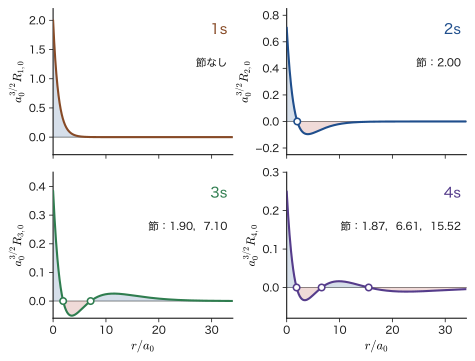
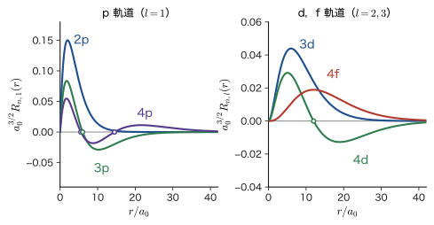
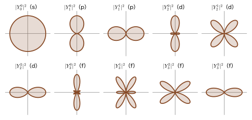
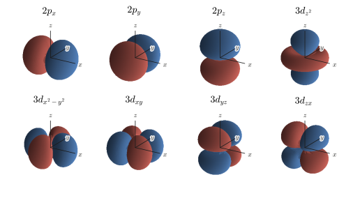
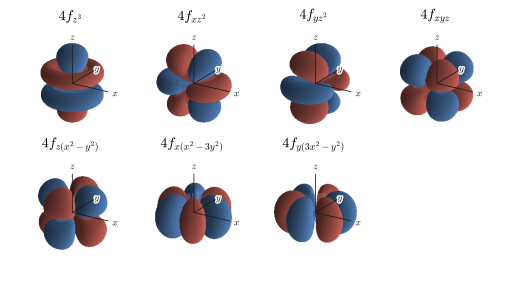
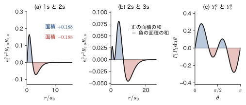

第16章水素原子（2）— オービタルの式と形
リチウムイオン電池の正極材料の色，ルビーの赤，ネオジム磁石の強さ，シリコンが半導体であること——材料の性質を決めるこれらの現象は，どれも原子の中の電子がどの「オービタル」（orbital，軌道関数）に入っているかという話につながっている．前章では，水素原子の Schrödinger（シュレーディンガー）方程式を変数分離して解き，波動関数 $\psi_{n,l,m}(r,\theta,\varphi)=R_{n,l}(r)\,Y_l^m(\theta,\varphi)$ の一般式とエネルギー $E_n$ を得た．この章は，その一般式から具体的な波動関数を 1 つずつ書き下し，形を調べる「オービタルの図鑑」である．
古典力学では，$1/r^2$ の引力を受ける物体は楕円の軌道を描く（AD 03「大学基礎物理学」第8章 8.2）．量子力学の電子には，位置を時間の関数として追える「軌道の曲線」という意味はなく，代わりに 3 つの量子数 $(n,l,m)$ で指定される定常状態の波動関数があり，$\abs{\psi}^2$ が電子の見いだされる確率密度を表す．オービタルという名は orbit（軌道）に似せてつくられたもので，この波動関数そのものを指す．量子数の意味は，波の節（$\psi=0$ となる場所）の数を数えるとよくわかる．弦の定常波では，節が 1 つ増えるごとに振動数（したがってエネルギー）が上がる（AD 03 第11章 11.7）．水素原子でも同じで，$n-1$ は球面の節と平面・円錐面の節を合わせた総数，$l$ は角度方向の節の数，$m$ は $z$ 軸まわりの回転の向きを表す．この章では，1s から 4f までの波動関数を，節の数と形の変化に注目しながら並べる．
後半では，これらの波動関数が互いに直交すること，そしてその直交性が「どの状態からどの状態へ光で移れるか」という選択則を決めることを示す．直交性は，変分原理・摂動論・分子軌道やバンドの展開といった第V部以降のあらゆる計算で毎回使われる，量子力学でもっとも実用的な性質である．また，s 軌道だけが原子核の位置で 0 でない密度をもつこと（Mössbauer 分光や超微細相互作用），p・d 軌道の向きの性質（共有結合の方向性と結晶場），4f 軌道（ランタノイドの発光）など，材料科学とのつながりもそのつど示す．
- 量子数の範囲 $l\le n-1$，$\abs{m}\le l$ から，K，L，M，N 殻と s，p，d，f 軌道を数え上げ（$n$ 番目の殻に $n^2$ 個），動径方向の節が $n-l-1$ 個，角度方向の節が $l$ 個であることを説明できること
- 一般式から，1s，2s，3s，2p，3p，3d，4f の $R_{n,l}(r)$ と $\psi_{n,l,m}$ を行を飛ばさずに導けること（2s は一般式から計算する）．原点で正の標準形と，Laguerre 多項式の旧い規約で書いた式（全体が $-1$ 倍）との関係がわかること
- 核電荷が $Ze_0$ の水素様イオンの波動関数の表（$\rho=2Zr/(na_0)$）を読み書きし，$Z$ による縮み（$a_0\to a_0/Z$）と $E_n\propto Z^2$ を説明できること
- 複素数の $Y_l^m$ から実数のオービタル（$p_x,p_y,p_z,d_{z^2},d_{x^2-y^2},d_{xy},d_{yz},d_{zx}$ と f 軌道）を Condon–Shortley の位相に注意して作り，Cartesian 形に直せること．実数のオービタルは $\hat{L}_z$ の固有関数でないこと
- 動径部分・角度部分・方位角部分の 3 つの直交性を証明し，2 つのオービタルが直交する理由を「$n,l,m$ のどれが違うか」で言えること
- 電気双極子の選択則 $\Delta l=\pm1$，$\Delta m=0,\pm1$ を導き，$\langle 2p_0|z|1s\rangle=\dfrac{128\sqrt2}{243}a_0$，$\langle 2s|z|2p_0\rangle=-3a_0$ を計算し，2s が準安定であることを説明できること
- $d_{z^2}$ の節の角 $54.74^\circ$（魔法角）と，固体 NMR の魔法角回転との関係を理解すること
もとにしたノート：望月泰英『物理学ノート 量子力学2』 pp. 45–52，および同ノートの補足ページ（水素原子の波動関数の表）．
16.1 量子数とオービタルの名前 — 一般解のまとめと節の数
16.1.1 前章の結果のまとめ — 水素様原子の固有関数
前章で解いたのは，原子核（電荷 $+Ze_0$．電子よりずっと重いので固定して考える）のまわりを動く電子 1 個（質量 $m_{\mathrm e}$，電荷 $-e_0$）の Schrödinger 方程式である．本書では電気素量を $e_0$ と書く（AD 03 の $e$ と同じ量）．$Z=1$ が水素原子，$Z=2$ が $\mathrm{He^+}$，$Z=3$ が $\mathrm{Li^{2+}}$ である（電子 1 個だけをもつイオンなので，まとめて水素様原子とよぶ）．方程式は
\begin{equation} -\frac{\hbar^2}{2m_{\mathrm e}}\nabla^2\psi-\frac{Ze_0^2}{4\pi\varepsilon_0\,r}\,\psi=E\,\psi \label{eq:16-tise} \end{equation}である．右辺の第 2 項の係数は，点電荷どうしの Coulomb（クーロン）ポテンシャル $V(r)=-Ze_0^2/(4\pi\varepsilon_0r)$ による（AD 03 第35章 35.1）．極座標 $(r,\theta,\varphi)$ で変数分離すると，波動関数は動径部分 $R_{n,l}(r)$ と角度部分 $Y_l^m(\theta,\varphi)$ の積になる．結果を，次にまとめておく．この章では，この式から出発して具体的な形を調べる．
公式16.1 水素様原子の固有関数とエネルギー
式 \eqref{eq:16-tise} の束縛状態（$E\lt0$）は，3 つの量子数 $n,l,m$ で指定される：
\begin{equation} \psi_{n,l,m}(r,\theta,\varphi)=R_{n,l}(r)\,Y_l^m(\theta,\varphi),\qquad \begin{cases} n=1,2,3,\dots & \text{（主量子数）}\\ l=0,1,\dots,n-1 & \text{（方位量子数）}\\ m=-l,-l+1,\dots,l & \text{（磁気量子数）} \end{cases} \label{eq:16-psi} \end{equation}エネルギーは $n$ だけで決まり，$h$ 形と $\hbar$ 形で書くと
\begin{equation} E_n=-\frac{m_{\mathrm e}e_0^4}{8\varepsilon_0^2h^2}\frac{Z^2}{n^2}=-\frac{m_{\mathrm e}e_0^4}{2(4\pi\varepsilon_0)^2\hbar^2}\frac{Z^2}{n^2}=-\frac{\hbar^2}{2m_{\mathrm e}a_0^2}\frac{Z^2}{n^2}\approx-13.6\ \mathrm{eV}\times\frac{Z^2}{n^2} \label{eq:16-En} \end{equation}である．ここで $a_0$ は Bohr 半径
\begin{equation} a_0=\frac{4\pi\varepsilon_0\hbar^2}{m_{\mathrm e}e_0^2}=5.291\,772\times10^{-11}\ \mathrm{m}\approx0.529\ \text{Å} \label{eq:16-a0} \end{equation}式 \eqref{eq:16-En} の最後の等号は，$\dfrac{\hbar^2}{2m_{\mathrm e}a_0^2}$ に式 \eqref{eq:16-a0} を代入して，$\dfrac{\hbar^2}{2m_{\mathrm e}}\cdot\dfrac{m_{\mathrm e}^2e_0^4}{(4\pi\varepsilon_0)^2\hbar^4}=\dfrac{m_{\mathrm e}e_0^4}{2(4\pi\varepsilon_0)^2\hbar^2}$ となることからわかる．次元の確認もしておく．$\hbar^2/(m_{\mathrm e}a_0^2)$ は $[\mathrm{J^2\,s^2}]/[\mathrm{kg\,m^2}]=[\mathrm{J}]$ で，たしかにエネルギーの次元である．数値は $\dfrac{\hbar^2}{2m_{\mathrm e}a_0^2}=13.6057\ \mathrm{eV}$（Rydberg エネルギー）である．
動径部分 $R_{n,l}(r)$ と角度部分 $Y_l^m$ の具体的な式は次のとおりである．新しい記号として $\rho$ を導入する．
\begin{equation} \rho\equiv\frac{2Zr}{n\,a_0} \label{eq:16-rho} \end{equation}$\rho$ は「$n$ 番目の殻の大きさ $na_0/Z$ の半分を単位にとった無次元の距離」で，$n$ が大きいほど同じ $r$ に対する $\rho$ は小さい．
公式16.2 動径関数 $R_{n,l}(r)$（標準形）
原点の近くで正になる標準形は，現代の規約の Laguerre 陪多項式 $L_{p}^{(\alpha)}(\rho)$（大学数学 第41章 41.5．scipy の genlaguerre と同じ）を使って
である．同じ関数を，Laguerre 多項式の和として書き下すと，
\begin{equation} R_{n,l}(r)=c_{n,l}\,\frac{e^{-\rho/2}}{r}\sum_{k=2l+1}^{n+l}\frac{(-1)^{k+1}\,\{(n+l)!\}^2}{(k-2l-1)!\;k!\;(n+l-k)!}\,\rho^{\,k-l},\qquad c_{n,l}=\sqrt{\frac{Z}{a_0}\,\frac{(n-l-1)!}{n^2\{(n+l)!\}^3}} \label{eq:16-Rsum} \end{equation}である．規格化は $\displaystyle\int_0^\infty R_{n,l}^2\,r^2\,\dd r=1$．和の形の規格化定数を $c_{n,l}$ と書いた．これは第15章で旧規約の和の形につけた $c_{nl}$（符号は和の $(-1)^{k+1}$ に含めた）と同じ量で，第15章で標準形（Laguerre 形）につけた $N_{nl}$ とは別の量である（$N_{nl}$ と $c_{nl}$ の関係は第15章 15.7.3 節）．
式 \eqref{eq:16-Rsum} の和は，$k$ が小さい項から順に $\rho^{l+1},\rho^{l+2},\dots,\rho^{n}$ を含む（$k-l$ が $l+1$ から $n$ まで）．その全体に $1/r$ がかかるので，$r\to0$ での振る舞いは最低次の項で決まり，$R_{n,l}\propto\rho^{l+1}/r\propto r^{l}$ となる．これは，遠心力ポテンシャル $\hbar^2l(l+1)/(2m_{\mathrm e}r^2)$ が，$l\ge1$ の電子を原子核の近くから遠ざけることの現れである．
注意：Laguerre 多項式の 2 つの規約と符号
Laguerre 多項式には 2 つの規約がある．前章（第15章 15.7）では，級数解を直接組み立てた自然な形として，旧い規約
\begin{equation} L_m^{n}(x)=\sum_{k=n}^{m}\frac{(-1)^k\,(m!)^2}{(k-n)!\;k!\;(m-k)!}\,x^{k-n} \label{eq:16-Lold} \end{equation}を使った．現代の規約 $L_{m-n}^{(n)}(x)$ との関係は（第15章 15.7 で示した関係を再掲すると）$L_m^{n}(x)=(-1)^n\,m!\,L_{m-n}^{(n)}(x)$ で，いまの場合（$n\to2l+1$，$m\to n+l$）は
\begin{equation} L_{n+l}^{2l+1}(x)\ \text{（旧）}=(-1)^{2l+1}(n+l)!\,L_{n-l-1}^{(2l+1)}(x)\ \text{（現代）}=-(n+l)!\,L_{n-l-1}^{(2l+1)}(x) \label{eq:16-Lrel} \end{equation}である．旧規約の $L_{n+l}^{2l+1}$ は原点で必ず負になるため，これを使って書いた動径関数は，式 \eqref{eq:16-Rnl}・\eqref{eq:16-Rsum} の標準形に全体として $-1$ をかけたものになる．具体的には，$\kappa=\dfrac{Z}{na_0}$ として，旧規約の形は
\begin{equation} R_{n,l}^{(\text{旧})}(r)=\sqrt{\frac{\kappa\,(n-l-1)!}{n\{(n+l)!\}^3}}\;\frac{e^{-\kappa r}}{r}\,(2\kappa r)^{l+1}\,L_{n+l}^{2l+1}(2\kappa r)=-R_{n,l}(r) \label{eq:16-Rold} \end{equation}である（$2\kappa r=\rho$ で，式 \eqref{eq:16-Lrel} と式 \eqref{eq:16-Rnl} を使うと $-R_{n,l}$ になる．この形から規格化定数を導く計算は 16.7.2 節にある）．物理的な内容（確率密度や期待値）は $\psi\to-\psi$ で変わらないが，符号をそろえないと，実数のオービタルの表や他の教科書の式と見比べるときに混乱する．この章では，以後，原点付近で $R_{n,l}\gt0$ の標準形を使う．旧規約の和の形で計算した結果は，符号を反転して標準形にする．
球面調和関数は，Condon–Shortley の位相を含む規約（第14章）で，
\begin{equation} Y_l^m(\theta,\varphi)=(-1)^{\frac{m+\abs{m}}{2}}\sqrt{\frac{2l+1}{4\pi}\,\frac{(l-\abs{m})!}{(l+\abs{m})!}}\;\sin^{\abs{m}}\theta\;\frac{1}{2^l\,l!}\,\frac{\dd^{\,l+\abs{m}}}{\dd(\cos\theta)^{l+\abs{m}}}\bigl(\cos^2\theta-1\bigr)^{l}\;e^{im\varphi} \label{eq:16-Y} \end{equation}である．因子 $(-1)^{(m+\abs{m})/2}$ は，$m\ge0$ のとき $(-1)^m$，$m\lt0$ のとき $1$ になる．$\sin^{\abs{m}}\theta=(1-\cos^2\theta)^{\abs{m}/2}$ は，$0\le\theta\le\pi$ で $\sin\theta\ge0$ だからである．Rodrigues の公式（大学数学 第40章 40.5）$P_l(x)=\dfrac{1}{2^l\,l!}\dfrac{\dd^l}{\dd x^l}(x^2-1)^l$ を使うと，Legendre 陪関数 $P_l^{\abs{m}}(x)=(1-x^2)^{\abs{m}/2}\dfrac{\dd^{\abs{m}}P_l(x)}{\dd x^{\abs{m}}}$ で $Y_l^m=(-1)^{(m+\abs{m})/2}\sqrt{\dfrac{2l+1}{4\pi}\dfrac{(l-\abs{m})!}{(l+\abs{m})!}}\,P_l^{\abs{m}}(\cos\theta)\,e^{im\varphi}$ と書ける．負の $m$ は $Y_l^{-m}=(-1)^m\,(Y_l^m)^*$ でつながっている．
16.1.2 量子数と殻・軌道の名前
式 \eqref{eq:16-psi} の 3 つの量子数のうち，$n$ と $l$ には歴史的な名前がついている．
定義16.1 殻・副殻・オービタル
(1) 主量子数 $n$ が同じ状態の集まりを殻（shell）といい，$n=1,2,3,4,\dots$ の殻を順に K 殻，L 殻，M 殻，N 殻，…と呼ぶ．
(2) $n$ と $l$ が同じ状態の集まりを副殻（subshell）といい，$l=0,1,2,3,\dots$ の副殻を順に s，p，d，f，… と呼ぶ．$n$ の値と組にして，$n=2,l=1$ なら「2p」，$n=3,l=2$ なら「3d」のように書く．
(3) 3 つの量子数 $(n,l,m)$ の組で決まる 1 つの波動関数 $\psi_{n,l,m}$ を，オービタル（orbital）という．
K，L，M，… は特性 X 線の系列につけられた名前に由来する．s，p，d，f は，アルカリ金属のスペクトル線の見え方を表す英語 sharp（鋭い），principal（主要な），diffuse（ぼやけた），fundamental（基本的）の頭文字で，量子力学ができる前から使われていた名前である．$l=4$ 以降は f のあとをアルファベット順に g，h，i，… と続ける．
3 つの量子数のとりうる値には制限がある．前章で見たように，$l\le n-1$ は動径方向の級数が有限項で止まる（多項式になる）ための条件，$\abs{m}\le l$ は角度方向の方程式が $\theta=0,\pi$ で有限な解をもつための条件である．
\begin{equation} n=1,2,3,\dots,\qquad l\le n-1,\qquad \abs{m}\le l \label{eq:16-range} \end{equation}これを数え上げると，表16.1 のようになる．
| $n$ | 殻 | $l$ のとりうる値 | 副殻（各 $l$ の $m$ の個数 $2l+1$） | オービタルの数 $n^2$ | 電子の数 $2n^2$ |
|---|---|---|---|---|---|
| 1 | K | 0 | 1s（1） | 1 | 2 |
| 2 | L | 0，1 | 2s（1），2p（3） | 4 | 8 |
| 3 | M | 0，1，2 | 3s（1），3p（3），3d（5） | 9 | 18 |
| 4 | N | 0，1，2，3 | 4s（1），4p（3），4d（5），4f（7） | 16 | 32 |
$n$ 番目の殻のオービタルの数は，$l=0,1,\dots,n-1$ について $2l+1$ を足し合わせた $\sum_{l=0}^{n-1}(2l+1)=n(n-1)+n=n^2$ である（初項 1，公差 2 の等差数列の和）．電子は 1 つのオービタルに，スピンの向きの違う 2 個まで入れる（Pauli の排他原理．第VII部）ので，$n$ 番目の殻には最大 $2n^2$ 個，すなわち $2,8,18,32,\dots$ 個の電子が入る．これらの数は周期表の行の長さ（$2,8,8,18,18,32,\dots$）と関係しているが，多電子原子ではエネルギーが $n$ だけでなく $l$ にも依存するため，行の長さは $2n^2$ そのままにはならない（第18章）．
注意：K 殻に p 軌道は存在しない
$n=1$ のとき，条件 $l\le n-1=0$ から $l=0$ しかとれない．したがって K 殻には s 軌道（1s）だけがあり，「1p」という軌道は存在しない．同様に，L 殻（$n=2$）には s と p だけで 2d はなく，M 殻（$n=3$）には 3f はない．「$n$ 番目の殻には，$l=0$ から $l=n-1$ までの副殻がある」と覚えるとよい．
16.1.3 節の数 — 動径節 $n-l-1$ と角度節 $l$
オービタルの形を大まかにつかむには，波動関数が 0 になる場所（節，node）を数えるのが最も簡単である．1 次元の箱では，$\psi_n$ は節を $n-1$ 個もち，節が多いほど波長が短く運動エネルギーが高かった（第10章）．3 次元では，節は点ではなく「面」になる．$\psi_{n,l,m}=R_{n,l}(r)\,Y_l^m(\theta,\varphi)$ は積なので，$R_{n,l}=0$ となる球面と，$Y_l^m=0$ となる面のすべてが節である．
定理16.1 節の数
オービタル $\psi_{n,l,m}$ には，次の節がある（$r=0$ と $r=\infty$ は数えない）．
(1) 動径節：$R_{n,l}(r)=0$ を満たす球面（$r=$ 一定）が $n-l-1$ 個．
(2) 角度節：$Y_l^m$ の実数形（16.6 節）の節は，原点を通る面（平面または円錐面）で，合計 $l$ 個．そのうち $l-\abs{m}$ 個が円錐面（$\cos\theta=$ 一定．$\theta=\pi/2$ のときは $xy$ 平面），$\abs{m}$ 個が $z$ 軸を含む平面．
したがって節の総数は $(n-l-1)+l=n-1$ である．
証明
(1) 式 \eqref{eq:16-Rnl} で，$e^{-\rho/2}>0$，$\rho^l$ は $r>0$ で 0 でないから，$R_{n,l}$ の零点は $L_{n-l-1}^{(2l+1)}(\rho)=0$ の解である．これは $\rho$ の $n-l-1$ 次多項式なので，零点は高々 $n-l-1$ 個である．直交多項式の零点はすべて実数で単純（重根なし）かつ重みの区間（ここでは $\rho\gt0$）の内側にある，という一般的な性質（大学数学 第41章 41.4 の Laguerre 多項式の場合）から，正の零点はちょうど $n-l-1$ 個ある．$\rho\propto r$ なので，これは $R_{n,l}=0$ の $r>0$ の解が $n-l-1$ 個あることを意味する．
(2) 実数の角度関数は $P_l^{\abs{m}}(\cos\theta)\times\{\cos\abs{m}\varphi\ \text{または}\ \sin\abs{m}\varphi\}$ の形をしている．$P_l^{\abs{m}}(x)=(1-x^2)^{\abs{m}/2}\,\dfrac{\dd^{\abs{m}}P_l}{\dd x^{\abs{m}}}$ で，$(1-x^2)^{\abs{m}/2}$ は $-1\lt x\lt1$ で 0 にならない．$P_l$ は $(x^2-1)^l$ の $l$ 階導関数（Rodrigues の公式）で，$(x^2-1)^l$ は $x=\pm1$ で 0，その間で連続なので，Rolle の定理により導関数は $-1\lt x\lt1$ に零点をもつ．導関数をとるたびに零点は 1 個ずつ減るので，$k$ 階導関数の区間内の零点の個数は $k$ 個である（$k\le l$）．よって $P_l$ は $l$ 個，$\dfrac{\dd^{\abs{m}}P_l}{\dd x^{\abs{m}}}$ は $l-\abs{m}$ 個の零点を区間内にもつ．各零点 $x=x_j$ が円錐面 $\cos\theta=x_j$ に対応する．方位角の因子は $\varphi\in[0,\pi)$ の範囲に $\abs{m}$ 個の零点をもち，$z$ 軸を含む平面に対応する．合計 $(l-\abs{m})+\abs{m}=l$ 個である．
（証明終わり）
まとめると，表16.2 のようになる．s 軌道は角度節がなく球対称，p 軌道は平面の節が 1 つ，d 軌道は 2 つ，f 軌道は 3 つの角度節をもつ．「動径節 $n-l-1$」は，同じ $l$ の中で $n$ が 1 つ増えるごとに 1 つずつ増える．
| オービタル | $n$ | $l$ | 動径節 $n-l-1$ | 角度節 $l$ | 節の総数 $n-1$ |
|---|---|---|---|---|---|
| 1s | 1 | 0 | 0 | 0 | 0 |
| 2s | 2 | 0 | 1 | 0 | 1 |
| 2p | 2 | 1 | 0 | 1 | 1 |
| 3s | 3 | 0 | 2 | 0 | 2 |
| 3p | 3 | 1 | 1 | 1 | 2 |
| 3d | 3 | 2 | 0 | 2 | 2 |
| 4s | 4 | 0 | 3 | 0 | 3 |
| 4p | 4 | 1 | 2 | 1 | 3 |
| 4d | 4 | 2 | 1 | 2 | 3 |
| 4f | 4 | 3 | 0 | 3 | 3 |
ここで，エネルギー準位 \eqref{eq:16-En} が $n$，すなわち節の総数 $n-1$ だけで決まることに注目してほしい．同じ $n$ の 2s と 2p は，動径節と角度節の内訳は違っても，節の総数が同じ（1 個）なのでエネルギーが等しい．3s，3p，3d も同様である．これは $1/r$ の Coulomb ポテンシャルの特殊性で，「$l$ について縮退している」という偶然の縮退にあたる（水素原子のエネルギーは $n^2$ 重に縮退している．$l$ を越えたこの縮退は，Coulomb ポテンシャルがもつ通常の回転対称性より高い対称性の現れである）．多電子原子では，他の電子による遮蔽のためにこの縮退が解けて 2s と 2p のエネルギーが違ってくる（第18章）．
例題16.1 $n=4$ の殻のオービタルと節
(1) N 殻（$n=4$）には，どんなオービタルが何個あるか．(2) 4s 軌道の動径節の個数と位置を，$R_{4,0}(r)\propto192-144\,y+24\,y^2-y^3$（$y=r/a_0$）が 0 になる $y$ から求めよ．(3) 4f 軌道に動径節はあるか．
解答 (1) $l=0,1,2,3$ で，$m$ の個数はそれぞれ $1,3,5,7$．よって 4s（1 個），4p（3 個），4d（5 個），4f（7 個）の合計 $1+3+5+7=16=4^2$ 個である．電子は $2\times16=32$ 個まで入る．
(2) 動径節の個数は $n-l-1=4-0-1=3$ 個．位置は 3 次方程式 $f(y)=192-144y+24y^2-y^3=0$ の正の解である．$f(0)=192>0$，$f(1)=192-144+24-1=71>0$，$f(2)=192-288+96-8=-8\lt0$ より $1\lt y\lt2$ に第 1 の零点がある．同様に $f(6)=192-864+864-216=-24\lt0$，$f(7)=192-1008+1176-343=17>0$ で $6\lt y\lt7$ に第 2 の零点，$f(15)=192-2160+5400-3375=57>0$，$f(16)=192-2304+6144-4096=-64\lt0$ で $15\lt y\lt16$ に第 3 の零点がある．3 次方程式は高々 3 個の解しかもたないので，これで全部である．数値的に精密に解くと（区間を 2 分して繰り返す，あるいは Newton 法で），
$$ y=1.872,\qquad 6.611,\qquad 15.518 $$すなわち $r\approx1.87\,a_0,\ 6.61\,a_0,\ 15.5\,a_0$ の 3 つの球面上で $R_{4,0}=0$ となる．
(3) 4f は $n-l-1=4-3-1=0$．動径節はなく，節はすべて角度節（3 個）である．実際 $R_{4,3}\propto r^3e^{-r/4a_0}$ は $r>0$ で 0 にならない．
16.2 s 軌道 — 1s，2s，3s
16.2.1 s 軌道 — 方位量子数 $l=0$ のオービタル
s 軌道は，方位量子数 $l=0$（したがって $m=0$ だけ）のオービタルである．球面調和関数は，式 \eqref{eq:16-Y} に $l=m=0$ を代入した（微分は 0 階，$(\cos^2\theta-1)^0=1$）
\begin{equation} Y_0^0(\theta,\varphi)=\sqrt{\frac{1}{4\pi}} \label{eq:16-Y00} \end{equation}で，角度によらない定数である．$4\pi$ は単位球の表面積であり，$\int\abs{Y_0^0}^2\sin\theta\,\dd\theta\,\dd\varphi=\dfrac{1}{4\pi}\cdot4\pi=1$ と規格化されている．したがって s 軌道は球対称で，$\psi_{n,0,0}=R_{n,0}(r)/\sqrt{4\pi}$ となる．以下，K 殻（$n=1$），L 殻（$n=2$），M 殻（$n=3$）の s 軌道を，公式16.2 の式 \eqref{eq:16-Rsum}（$Z=1$）から順に導く．
16.2.2 K 殻の s 軌道：1s（$n=1,\ l=0,\ m=0$）
導出：1s 軌道
式 \eqref{eq:16-Rsum} に $n=1,\ l=0,\ Z=1$ を代入する．まず規格化定数は
$$ c_{1,0}=\sqrt{\frac{1}{a_0}\cdot\frac{(1-0-1)!}{1^2\,\{(1+0)!\}^3}}=\sqrt{\frac{1}{a_0}}\qquad(0!=1,\ 1!=1) $$である．変数は $\rho=\dfrac{2r}{1\cdot a_0}=\dfrac{2r}{a_0}$．和は $k=2l+1=1$ から $n+l=1$ までの 1 項だけで，
$$ \sum_{k=1}^{1}\frac{(-1)^{k+1}\{1!\}^2}{(k-1)!\,k!\,(1-k)!}\,\rho^{k}=\frac{(-1)^{2}\cdot1}{0!\cdot1!\cdot0!}\,\rho=\rho=\frac{2r}{a_0} $$である．したがって，
$$ R_{1,0}(r)=\sqrt{\frac{1}{a_0}}\;\frac{e^{-r/a_0}}{r}\cdot\frac{2r}{a_0}=2\sqrt{\frac{1}{a_0^3}}\;e^{-r/a_0} $$（$\rho/2=r/a_0$ を指数に使い，$1/r$ と $r$ が約分された）．旧規約の和の形では $(-1)^k=-1$ となるので，この式全体に $-1$ がかかった $-2\sqrt{1/a_0^3}\,e^{-r/a_0}$ が得られるが，標準形では正である．これに式 \eqref{eq:16-Y00} をかけて，
\begin{equation} R_{1,0}(r)=2\,a_0^{-3/2}\,e^{-r/a_0},\qquad \psi_{1,0,0}(r,\theta,\varphi)=\frac{1}{\sqrt{\pi a_0^3}}\,e^{-r/a_0} \label{eq:16-1s} \end{equation}を得る（$2\cdot\dfrac{1}{\sqrt{4\pi}}=\dfrac{1}{\sqrt\pi}$）．
（導出終わり）
1s 軌道は節がなく，$r$ とともに単調に減少する．規格化を確認しよう．$\displaystyle\int_0^\infty R_{1,0}^2\,r^2\,\dd r=\frac{4}{a_0^3}\int_0^\infty r^2e^{-2r/a_0}\,\dd r=\frac{4}{a_0^3}\cdot\frac{2!}{(2/a_0)^3}=\frac{4}{a_0^3}\cdot\frac{2a_0^3}{8}=1$（公式 $\int_0^\infty r^ke^{-\beta r}\dd r=k!/\beta^{k+1}$ を使った）．
16.2.3 L 殻の s 軌道：2s（$n=2,\ l=0,\ m=0$）— 一般式から導く
2s は，一般式から導く最初の例として，1 行ずつ丁寧に計算する．
導出：2s 軌道（式 \eqref{eq:16-Rsum} から）
[1] 規格化定数．$n=2,\ l=0$ を $c_{n,l}$ に代入する．$(n-l-1)!=1!=1$，$n^2=4$，$\{(n+l)!\}^3=(2!)^3=8$ より，
$$ c_{2,0}=\sqrt{\frac{1}{a_0}\cdot\frac{1}{4\cdot8}}=\sqrt{\frac{1}{32\,a_0}} $$[2] 変数と和．$\rho=\dfrac{2r}{2a_0}=\dfrac{r}{a_0}$．和は $k=1,2$ の 2 項で，$(n+l)!=2!=2$，$\{(n+l)!\}^2=4$ である．
$$ \begin{aligned} k=1:&\quad\frac{(-1)^{2}\cdot4}{(1-1)!\,1!\,(2-1)!}\,\rho^{1}=\frac{4}{0!\cdot1!\cdot1!}\,\rho=4\rho,\\[1mm] k=2:&\quad\frac{(-1)^{3}\cdot4}{(2-1)!\,2!\,(2-2)!}\,\rho^{2}=-\frac{4}{1!\cdot2!\cdot0!}\,\rho^{2}=-2\rho^{2} \end{aligned} $$よって和は $4\rho-2\rho^2=2\rho\,(2-\rho)$ である．
[3] 組み立て．$e^{-\rho/2}=e^{-r/2a_0}$ で，$\rho/r=1/a_0$ なので，
$$ R_{2,0}(r)=\sqrt{\frac{1}{32a_0}}\;\frac{e^{-r/2a_0}}{r}\cdot2\rho\,(2-\rho) =\sqrt{\frac{1}{32a_0}}\cdot\frac{2}{a_0}\Bigl(2-\frac{r}{a_0}\Bigr)e^{-r/2a_0} $$$\sqrt{1/(32a_0)}=\dfrac{1}{4\sqrt2\,a_0^{1/2}}$ だから，係数は $\dfrac{2}{4\sqrt2\,a_0^{3/2}}=\dfrac{1}{2\sqrt2}\,a_0^{-3/2}$ となり，
\begin{equation} R_{2,0}(r)=\frac{1}{2\sqrt2}\,a_0^{-3/2}\Bigl(2-\frac{r}{a_0}\Bigr)e^{-r/2a_0}=\frac{1}{2a_0^2}\sqrt{\frac{1}{2a_0}}\,(2a_0-r)\,e^{-r/2a_0} \label{eq:16-R20} \end{equation}（2 つ目の等号は，$2-r/a_0=(2a_0-r)/a_0$ を使って $a_0$ の冪をまとめた）．
[4] 現代の規約での確認．式 \eqref{eq:16-Rnl} に $n=2,\ l=0$ を代入すると，$\left(\dfrac{2}{2a_0}\right)^3\dfrac{1!}{2\cdot2\cdot2!}=\dfrac{1}{8a_0^3}$ で，Laguerre 多項式は $L_{p}^{(\alpha)}(\rho)=\displaystyle\sum_{j=0}^{p}(-1)^j\binom{p+\alpha}{p-j}\dfrac{\rho^j}{j!}$ から $L_1^{(1)}(\rho)=\binom{2}{1}-\binom{2}{0}\rho=2-\rho$ なので，
$$ R_{2,0}(r)=\sqrt{\frac{1}{8a_0^3}}\;e^{-\rho/2}\,(2-\rho)=\frac{1}{2\sqrt2}\,a_0^{-3/2}\Bigl(2-\frac{r}{a_0}\Bigr)e^{-r/2a_0} $$となり，式 \eqref{eq:16-R20} と一致する．
[5] 角度部分をかける．$Y_0^0=1/\sqrt{4\pi}$ をかけて，
\begin{equation} \psi_{2,0,0}(r,\theta,\varphi)=\frac{1}{4\sqrt{2\pi a_0^3}}\Bigl(2-\frac{r}{a_0}\Bigr)e^{-r/2a_0}=\frac{1}{2a_0^2}\sqrt{\frac{1}{2\pi a_0}}\Bigl(a_0-\frac{r}{2}\Bigr)e^{-r/2a_0} \label{eq:16-2s} \end{equation}（$\dfrac{1}{2\sqrt2}\cdot\dfrac{1}{2\sqrt\pi}=\dfrac{1}{4\sqrt{2\pi}}$．2 つ目の等号は $2-r/a_0=2(a_0-r/2)/a_0$ から）．
（導出終わり）
2s の動径関数は $r=2a_0$ で符号を変える：$r\lt2a_0$ では正，$r\gt2a_0$ では負である．この球面が動径節（図16.2(a)）である．波動関数の符号が内側と外側で反対になることが，次節以降で見る直交性のカギになる．
16.2.4 M 殻の s 軌道：3s（$n=3,\ l=0,\ m=0$）
導出：3s 軌道と $\psi_{3,0,0}$
$n=3,\ l=0$：$(n-l-1)!=2!=2$，$n^2=9$，$(n+l)!=3!=6$，$\{(n+l)!\}^3=216$，$\{(n+l)!\}^2=36$．規格化定数は
$$ c_{3,0}=\sqrt{\frac{1}{a_0}\cdot\frac{2}{9\cdot216}}=\sqrt{\frac{1}{972\,a_0}}=\frac{1}{18\sqrt3\,a_0^{1/2}}\qquad(972=324\cdot3=18^2\cdot3) $$変数は $\rho=\dfrac{2r}{3a_0}$．和は $k=1,2,3$ の 3 項：
$$ \begin{aligned} k=1:&\quad\frac{(-1)^{2}\cdot36}{0!\,1!\,2!}\rho=18\rho,\qquad k=2:\quad\frac{(-1)^{3}\cdot36}{1!\,2!\,1!}\rho^2=-18\rho^2,\\ k=3:&\quad\frac{(-1)^{4}\cdot36}{2!\,3!\,0!}\rho^3=3\rho^3 \end{aligned} $$合計は $18\rho-18\rho^2+3\rho^3=3\rho\,(6-6\rho+\rho^2)$．$\rho/r=2/(3a_0)$ を使うと，
$$ R_{3,0}(r)=c_{3,0}\,\frac{e^{-\rho/2}}{r}\cdot3\rho\,(6-6\rho+\rho^2)=\frac{1}{18\sqrt3\,a_0^{1/2}}\cdot\frac{2}{a_0}\,(6-6\rho+\rho^2)\,e^{-\rho/2}=\frac{1}{9\sqrt3}\,a_0^{-3/2}\,(6-6\rho+\rho^2)\,e^{-\rho/2} $$ここで $\rho=\dfrac{2r}{3a_0}$ を代入して $y=r/a_0$ で書くと，$6-6\rho+\rho^2=6-4y+\dfrac49y^2=\dfrac29\,(27-18y+2y^2)$ なので，
\begin{equation} R_{3,0}(r)=\frac{2}{81\sqrt3}\,a_0^{-3/2}\Bigl(27-\frac{18r}{a_0}+\frac{2r^2}{a_0^2}\Bigr)e^{-r/3a_0}=\frac{4}{81a_0^3}\sqrt{\frac{1}{3a_0}}\Bigl(r^2-9a_0r+\frac{27}{2}a_0^2\Bigr)e^{-r/3a_0} \label{eq:16-R30} \end{equation}（2 つ目の等号は $\dfrac{2}{81\sqrt3}\cdot2=\dfrac{4}{81\sqrt3}$ と $27-18y+2y^2=2\bigl(y^2-9y+\tfrac{27}{2}\bigr)$ による）．最後に $Y_0^0=1/\sqrt{4\pi}$ をかけて，
\begin{equation} \psi_{3,0,0}(r,\theta,\varphi)=\frac{1}{81\sqrt{3\pi a_0^3}}\Bigl(27-\frac{18r}{a_0}+\frac{2r^2}{a_0^2}\Bigr)e^{-r/3a_0} \label{eq:16-3s} \end{equation}である（$\dfrac{2}{81\sqrt3}\cdot\dfrac{1}{2\sqrt\pi}=\dfrac{1}{81\sqrt{3\pi}}$）．
（導出終わり）
3s には動径節が $n-l-1=2$ 個ある．$27-18y+2y^2=0$ の解，$y=\dfrac{9\pm3\sqrt3}{2}=1.90,\ 7.10$ がその位置である（例題16.3）．

16.2.5 s 軌道の特徴 — 原子核の位置での密度
図16.3 を見ると，s 軌道はどれも原点 $r=0$ で有限の値をもつ．一方，$l\ge1$ の軌道は $R_{n,l}\propto r^l$ なので原点で 0 になる（16.3 節以降）．s 軌道の原点での値は，$L_{n-1}^{(1)}(0)=\binom{n}{n-1}=n$ を式 \eqref{eq:16-Rnl}（$Z=1$）に使うと，
$$ R_{n,0}(0)=\sqrt{\left(\frac{2}{na_0}\right)^3\frac{(n-1)!}{2n\,n!}}\cdot n=\sqrt{\frac{8}{n^3a_0^3}\cdot\frac{1}{2n^2}}\cdot n=\frac{2}{n^{3/2}a_0^{3/2}} $$（$(n-1)!/n!=1/n$ を使った）．これは，$n=1,2,3$ で式 \eqref{eq:16-1s}，\eqref{eq:16-R20}，\eqref{eq:16-R30} に $r=0$ を代入した値 $2a_0^{-3/2}$，$\dfrac{1}{\sqrt2}a_0^{-3/2}$，$\dfrac{2}{3\sqrt3}a_0^{-3/2}$ と一致する．したがって，原子核の位置での電子の確率密度は，核電荷 $Ze_0$ の場合も含めて，
\begin{equation} \abs{\psi_{n,0,0}(0)}^2=\frac{R_{n,0}(0)^2}{4\pi}=\frac{1}{\pi n^3}\left(\frac{Z}{a_0}\right)^{3} \label{eq:16-psi0} \end{equation}である．$Z^3$ に比例して大きく，$n^3$ に反比例して小さくなる．
応用：原子核の位置にいる電子 — Fermi 接触相互作用と Mössbauer 分光
原子核は大きさがほぼ点（$10^{-15}\ \mathrm{m}$ 程度）で，電子の波動関数が核の位置で 0 でない値をもつのは s 軌道だけである（p，d，f 軌道は $r^l$ で 0 になる．これは遠心力のためである）．この「核の位置にいる電子」が，材料の分光学的性質を決める．(1) 電子スピンと核スピンの間のFermi 接触相互作用は，$\abs{\psi(0)}^2$ に比例する．水素原子の基底状態が電子スピンと陽子スピンの向きで 2 つに分かれ，そのエネルギー差に対応する 1420 MHz の電波が，波長 21 cm の宇宙の水素の電波として観測されるのは，この相互作用による．(2) 鉄などの Mössbauer 分光（メスバウアー分光）の異性体シフトは，核の位置での s 電子の密度 $\abs{\psi_s(0)}^2$ に比例する．Fe の 3d 電子は，核の位置に密度をもたないが，3s，4s の電子の密度を遮蔽の変化を通して変えるので，Fe の価数（$\mathrm{Fe^{2+}}$ と $\mathrm{Fe^{3+}}$）の判別に使われる．(3) 金属の NMR における Knight シフトや，電子スピン共鳴（ESR）の超微細分裂も，電子のスピン密度の核位置での値（Fermi 接触項）で決まる．
例題16.2 2s 軌道の規格化と，節の内側にいる確率
(1) 式 \eqref{eq:16-R20} の $R_{2,0}$ が $\int_0^\infty R_{2,0}^2\,r^2\,\dd r=1$ を満たすことを確かめよ．(2) 電子が節の内側 $r\lt2a_0$ に見いだされる確率を求めよ．
解答 $y=r/a_0$ とおくと，$R_{2,0}^2r^2\,\dd r=\dfrac{1}{8}(2-y)^2e^{-y}\,y^2\,\dd y$（$R_{2,0}^2=\dfrac{1}{8a_0^3}(2-y)^2e^{-y}$，$r^2\dd r=a_0^3y^2\dd y$）．
(1) $(2-y)^2y^2=4y^2-4y^3+y^4$ なので，$\int_0^\infty y^ke^{-y}\dd y=k!$ を使って，
$$ \frac18\int_0^\infty(4y^2-4y^3+y^4)e^{-y}\dd y=\frac18\,(4\cdot2!-4\cdot3!+4!)=\frac18\,(8-24+24)=1 $$（各項は $4\cdot2=8$，$4\cdot6=24$，$24$）．規格化されている．
(2) 不定積分を求める．部分積分を繰り返すと，$\displaystyle\frac18\int(4y^2-4y^3+y^4)e^{-y}\dd y=-\Bigl(\frac{y^4}{8}+\frac{y^2}{2}+y+1\Bigr)e^{-y}+C$ となる（右辺を微分して確かめられる：微分すると $\Bigl(\dfrac{y^4}{8}+\dfrac{y^2}{2}+y+1\Bigr)e^{-y}-\Bigl(\dfrac{y^3}{2}+y+1\Bigr)e^{-y}=\Bigl(\dfrac{y^4}{8}-\dfrac{y^3}{2}+\dfrac{y^2}{2}\Bigr)e^{-y}$ で，被積分関数 $\dfrac18(4y^2-4y^3+y^4)e^{-y}$ に一致）．したがって，
$$ P(r\lt2a_0)=\Bigl[-\Bigl(\frac{y^4}{8}+\frac{y^2}{2}+y+1\Bigr)e^{-y}\Bigr]_0^{2}=1-(2+2+2+1)e^{-2}=1-7e^{-2}\approx1-0.947=0.0527 $$（$y=2$ で $\frac{16}{8}+\frac42+2+1=7$）．節の内側に見いだされる確率は約 5.3% で，残りの約 94.7% は外側にある．2s 軌道の電子は，ほとんどが $r\gt2a_0$ の外側の山にいるが，内側にも原子核の近くに小さな山をもつ．
例題16.3 3s 軌道の節・規格化・動径確率密度の山
(1) $R_{3,0}$ の節の位置を求めよ．(2) 式 \eqref{eq:16-R30} が規格化されていることを確かめよ．(3) 動径確率密度 $P(r)=r^2R_{3,0}^2$ は，どこで極大になるか．
解答 (1) $27-18y+2y^2=0$ を解くと $y=\dfrac{18\pm\sqrt{324-216}}{4}=\dfrac{18\pm\sqrt{108}}{4}=\dfrac{9\pm3\sqrt3}{2}$．$\sqrt3=1.7321$ より $y=1.902,\ 7.098$，すなわち $r=1.90\,a_0,\ 7.10\,a_0$．
(2) $R_{3,0}^2r^2\,\dd r=\dfrac{4}{6561\cdot3}\,(27-18y+2y^2)^2\,y^2e^{-2y/3}\,\dd y$（$\dfrac{2}{81\sqrt3}$ の 2 乗は $\dfrac{4}{6561\cdot3}=\dfrac{4}{19683}$）．$(27-18y+2y^2)^2=729-972y+432y^2-72y^3+4y^4$ である（係数は，$27^2=729$，$2\cdot27\cdot(-18)=-972$，$(-18)^2+2\cdot27\cdot2=324+108=432$，$2\cdot(-18)\cdot2=-72$，$2^2=4$）．$\int_0^\infty y^ke^{-2y/3}\dd y=k!\left(\dfrac32\right)^{k+1}$ を使って，
$$ \int_0^\infty(\cdots)\,y^2e^{-2y/3}\dd y=729\cdot2!\Bigl(\tfrac32\Bigr)^3-972\cdot3!\Bigl(\tfrac32\Bigr)^4+432\cdot4!\Bigl(\tfrac32\Bigr)^5-72\cdot5!\Bigl(\tfrac32\Bigr)^6+4\cdot6!\Bigl(\tfrac32\Bigr)^7 $$各項は $4920.75,\ 29524.5,\ 78732,\ 98415,\ 49207.5$ であり，交互に符号をつけて足すと $4920.75-29524.5+78732-98415+49207.5=4920.75=\dfrac{19683}{4}$．これに $\dfrac{4}{19683}$ をかけると 1 になる．
(3) $y=r/a_0$ とし，$g(y)=27-18y+2y^2$ とおくと，$a_0P(r)=a_0r^2R_{3,0}^2=\dfrac{4}{19683}\,y^2g(y)^2\,e^{-2y/3}$ である．$P$ は $y=\dfrac{9\pm3\sqrt3}{2}$（$g=0$，節）で 0 になる谷をもち，谷の間と外側に山ができる．山（極大）の位置は $\dfrac{\dd P}{\dd y}=0$ で決まる．$P$ の対数微分をとると，$g'=4y-18$ より
$$ \frac{\dd\ln P}{\dd y}=\frac2y+\frac{2\,(4y-18)}{2y^2-18y+27}-\frac23=0 $$である．両辺に $\dfrac{3}{2}\,y\,(2y^2-18y+27)$ をかけて分母を払うと，$3(2y^2-18y+27)+3y(4y-18)-y(2y^2-18y+27)=0$，すなわち $-2y^3+36y^2-135y+81=0$ となり，
$$ f(y)\equiv2y^3-36y^2+135y-81=0 $$という 3 次方程式になる（$\dfrac{\dd P}{\dd y}$ 全体は $y\,g(y)\,f(y)$ に比例するので，$y=0$ と $g=0$ の点は，それぞれ原点と節の谷である）．符号の変わる区間を探すと，$f(0.5)=-22.25$，$f(1)=20$，$f(4)=11$，$f(4.5)=-20.25$，$f(13)=-16$，$f(13.5)=101.25$ で，$0.5\lt y\lt1$，$4\lt y\lt4.5$，$13\lt y\lt13.5$ に 1 つずつ解がある．3 次方程式の解は高々 3 個なので，これで全部である．Newton 法 $y\to y-f(y)/f'(y)$（$f'(y)=6y^2-72y+135$）で精密化すると，$y=0.75$ から出発して $0.7400\to0.74004$，$y=4$ から $4.1930\to4.1859\to4.18593$，$y=13$ から $13.0751\to13.0740\to13.07403$ を得る．したがって $y\approx0.740,\ 4.186,\ 13.074$ に 3 つの山がある．山の高さ（$a_0P$ の値）は，これらを $\dfrac{4}{19683}\,y^2g(y)^2e^{-2y/3}$ に代入して，順に約 $0.0148,\ 0.0387,\ 0.1015$ で，外側の山ほど高い．3s の電子は，主に $r\approx13a_0$ の外側の山にいるが，内側の 2 つの山（原子核の近く）にもわずかに存在する．この「原子核の近くまで入り込む」性質を浸透といい，多電子原子で s 軌道が p，d 軌道よりエネルギーが低くなる原因になる（第18章）．
例題16.4 水素原子の 1s 電子が陽子の内部に見いだされる確率
式 \eqref{eq:16-psi0} を使って，水素原子の 1s 電子の原子核の位置での確率密度 $\abs{\psi_{1,0,0}(0)}^2$ を求めよ．陽子を半径 $r_{\mathrm p}=0.84\times10^{-15}\ \mathrm{m}$ の球とみなすと，電子が陽子の内部に見いだされる確率はいくらか．また，$\mathrm{He^+}$ の 1s では何倍になるか．
解答 $n=1,\ Z=1$ で $\abs{\psi(0)}^2=\dfrac{1}{\pi a_0^3}$．$a_0=5.2918\times10^{-11}\ \mathrm{m}$ より $a_0^3=1.4818\times10^{-31}\ \mathrm{m^3}$，
$$ \abs{\psi_{1,0,0}(0)}^2=\frac{1}{\pi\times1.4818\times10^{-31}\ \mathrm{m^3}}=2.148\times10^{30}\ \mathrm{m^{-3}} $$である．陽子の体積は $\dfrac43\pi r_{\mathrm p}^3=\dfrac43\pi(0.84\times10^{-15})^3=2.48\times10^{-45}\ \mathrm{m^3}$．陽子の内部では $\psi$ がほぼ一定（核の大きさは $a_0$ の約 $10^{-5}$ 倍で，$\psi$ は $r=0$ から $r_{\mathrm p}$ までほとんど変わらない）とみなせるので，確率は密度と体積の積で，
$$ P\approx2.148\times10^{30}\times2.48\times10^{-45}\approx5.3\times10^{-15} $$である．$P\approx5.3\times10^{-15}$ は，$10^{15}$ 回（千兆回）観測して約 5 回しか，電子が陽子の内部に見いだされないという意味である．$\mathrm{He^+}$（$Z=2$）では，式 \eqref{eq:16-psi0} の $Z^3$ により密度が $2^3=8$ 倍になる（核の体積は違うが，密度の比としては 8 倍）．
16.3 p 軌道 — 2p，3p
16.3.1 p 軌道 — 方位量子数 $l=1$ のオービタル
p 軌道は $l=1$ のオービタルで，磁気量子数は $m=-1,0,1$ の 3 つある．16.1 節で見たように，K 殻（$n=1$）には $l=0$ しかないので p 軌道は存在せず，p 軌道は L 殻（$n=2$）から現れる．まず，角度部分の $Y_1^m$ を式 \eqref{eq:16-Y} から求める．$x=\cos\theta$ とおくと，$l=1$ の Rodrigues 形は $\dfrac{1}{2^1\,1!}\dfrac{\dd^{1+\abs{m}}}{\dd x^{1+\abs{m}}}(x^2-1)$ である．$(x^2-1)'=2x$，$(x^2-1)''=2$，$(x^2-1)'''=0$ なので，
$$ \begin{aligned} m=0:&\quad \sqrt{\frac{3}{4\pi}\cdot\frac{1!}{1!}}\cdot\frac12\cdot2x=\sqrt{\frac{3}{4\pi}}\,\cos\theta,\\ m=\pm1:&\quad(-1)^{\frac{m+1}{2}}\sqrt{\frac{3}{4\pi}\cdot\frac{0!}{2!}}\;\sin\theta\cdot\frac12\cdot2\;e^{\pm i\varphi} \end{aligned} $$となる．$m=1$ のとき $(-1)^{(1+1)/2}=-1$，$m=-1$ のとき $(-1)^{(-1+1)/2}=1$ で，$\sqrt{\dfrac{3}{4\pi}\cdot\dfrac12}=\sqrt{\dfrac{3}{8\pi}}$ だから，
\begin{equation} Y_1^{-1}=\sqrt{\frac{3}{8\pi}}\,\sin\theta\,e^{-i\varphi},\qquad Y_1^{0}=\sqrt{\frac{3}{4\pi}}\,\cos\theta,\qquad Y_1^{1}=-\sqrt{\frac{3}{8\pi}}\,\sin\theta\,e^{i\varphi} \label{eq:16-Y1} \end{equation}である．$Y_1^{1}$ にだけ負号がつくのが Condon–Shortley の位相である．
16.3.2 L 殻の p 軌道：2p（$n=2,\ l=1$）
導出：2p の動径関数 $R_{2,1}$
式 \eqref{eq:16-Rsum} に $n=2,\ l=1,\ Z=1$ を代入する．$(n-l-1)!=0!=1$，$n^2=4$，$(n+l)!=3!=6$，$\{(n+l)!\}^3=216$，$\{(n+l)!\}^2=36$．規格化定数は
$$ c_{2,1}=\sqrt{\frac{1}{a_0}\cdot\frac{1}{4\cdot216}}=\sqrt{\frac{1}{864\,a_0}}=\frac{1}{12\sqrt6\,a_0^{1/2}}\qquad(864=144\cdot6) $$変数は $\rho=\dfrac{2r}{2a_0}=\dfrac{r}{a_0}$．和は $k=2l+1=3$ から $n+l=3$ までの 1 項だけで，
$$ \frac{(-1)^{4}\cdot36}{(3-3)!\,3!\,(3-3)!}\,\rho^{3-1}=\frac{36}{0!\cdot6\cdot0!}\,\rho^2=6\rho^2 $$である．よって $\rho^2/r=\rho/a_0=r/a_0^2$ を使って，
\begin{equation} R_{2,1}(r)=\frac{1}{12\sqrt6\,a_0^{1/2}}\cdot\frac{e^{-r/2a_0}}{r}\cdot6\frac{r^2}{a_0^2}=\frac{1}{2\sqrt6}\,a_0^{-5/2}\,r\,e^{-r/2a_0}=\frac{1}{2\sqrt{6a_0^5}}\,r\,e^{-r/2a_0} \label{eq:16-R21} \end{equation}である．動径節はなく（$n-l-1=0$），$r=2a_0$ で最大になる（$\dfrac{\dd}{\dd r}(re^{-r/2a_0})=0$ より）．
（導出終わり）
これに式 \eqref{eq:16-Y1} をかけると，2p の 3 つの波動関数が得られる．係数は，たとえば $m=\pm1$ では $\dfrac{1}{2\sqrt6}\sqrt{\dfrac{3}{8\pi}}=\dfrac{\sqrt3}{2\sqrt6\cdot2\sqrt2\sqrt\pi}=\dfrac{1}{8\sqrt\pi}$（$\sqrt6=\sqrt2\sqrt3$ を使った），$m=0$ では $\dfrac{1}{2\sqrt6}\sqrt{\dfrac{3}{4\pi}}=\dfrac{1}{4\sqrt{2\pi}}=\dfrac{\sqrt2}{8\sqrt\pi}$ である．
\begin{equation} \begin{aligned} \psi_{2,1,-1}(r,\theta,\varphi)&=\frac{1}{8a_0^2}\sqrt{\frac{1}{\pi a_0}}\;r\,e^{-r/2a_0}\,\sin\theta\,e^{-i\varphi}\\ \psi_{2,1,0}(r,\theta,\varphi)&=\frac{1}{8a_0^2}\sqrt{\frac{2}{\pi a_0}}\;r\,e^{-r/2a_0}\,\cos\theta\\ \psi_{2,1,1}(r,\theta,\varphi)&=-\frac{1}{8a_0^2}\sqrt{\frac{1}{\pi a_0}}\;r\,e^{-r/2a_0}\,\sin\theta\,e^{i\varphi} \end{aligned} \label{eq:16-2p} \end{equation}16.3.3 M 殻の p 軌道：3p（$n=3,\ l=1$）
導出：3p の動径関数 $R_{3,1}$
$n=3,\ l=1$：$(n-l-1)!=1!=1$，$n^2=9$，$(n+l)!=4!=24$，$\{(n+l)!\}^3=13824$，$\{(n+l)!\}^2=576$．規格化定数は $c_{3,1}=\sqrt{\dfrac{1}{a_0}\cdot\dfrac{1}{9\cdot13824}}=\dfrac{1}{3\cdot48\sqrt6\,a_0^{1/2}}=\dfrac{1}{144\sqrt6\,a_0^{1/2}}$（$13824=24^3$，$\sqrt{13824}=24\sqrt{24}=48\sqrt6$）．変数は $\rho=\dfrac{2r}{3a_0}$．和は $k=3,4$ の 2 項：
$$ \begin{aligned} k=3:&\quad\frac{(-1)^{4}\cdot576}{0!\,3!\,1!}\,\rho^{2}=96\rho^2,\\ k=4:&\quad\frac{(-1)^{5}\cdot576}{1!\,4!\,0!}\,\rho^{3}=-24\rho^3 \end{aligned} $$合計は $96\rho^2-24\rho^3=24\rho^2(4-\rho)$．$\rho^2/r=\rho\cdot\dfrac{2}{3a_0}$ を使って，
$$ R_{3,1}(r)=c_{3,1}\,e^{-\rho/2}\,\frac{24\rho^2(4-\rho)}{r}=c_{3,1}\cdot\frac{16}{a_0}\,\rho\,(4-\rho)\,e^{-\rho/2} $$となる（$24\cdot\dfrac{2}{3}=16$）．$y=r/a_0$，$\rho=\dfrac{2y}{3}$ で書くと，$\rho(4-\rho)=\dfrac{2y}{3}\Bigl(4-\dfrac{2y}{3}\Bigr)=\dfrac49\,y\,(6-y)$．したがって
\begin{equation} R_{3,1}(r)=\frac{1}{144\sqrt6}\cdot\frac{64}{9}\,a_0^{-3/2}\,\frac{r}{a_0}\Bigl(6-\frac{r}{a_0}\Bigr)e^{-r/3a_0}=\frac{4}{81\sqrt6}\,a_0^{-3/2}\,\frac{r}{a_0}\Bigl(6-\frac{r}{a_0}\Bigr)e^{-r/3a_0}=\frac{8}{81a_0^3}\sqrt{\frac{1}{4!\,a_0}}\;r\,(6a_0-r)\,e^{-r/3a_0} \label{eq:16-R31} \end{equation}（$\dfrac{64}{9\cdot144}=\dfrac{4}{81}$．最後の式は $\sqrt{1/(4!)}=\dfrac{1}{2\sqrt6}$ より $\dfrac{8}{81}\cdot\dfrac{1}{2\sqrt6}=\dfrac{4}{81\sqrt6}$ で一致し，$a_0$ の冪は $r(6a_0-r)=a_0^2\,y(6-y)$ から数える）．
（導出終わり）
3p の動径関数は $r=6a_0$ で符号を変える．動径節が 1 個（$n-l-1=1$）あるためである．$Y_1^m$ との積は，係数が $\dfrac{4}{81\sqrt6}\sqrt{\dfrac{3}{8\pi}}=\dfrac{1}{81\sqrt\pi}$，$\dfrac{4}{81\sqrt6}\sqrt{\dfrac{3}{4\pi}}=\dfrac{\sqrt2}{81\sqrt\pi}$ となるので，
\begin{equation} \begin{aligned} \psi_{3,1,-1}(r,\theta,\varphi)&=\frac{1}{81a_0^3}\sqrt{\frac{1}{\pi a_0}}\;r\,(6a_0-r)\,e^{-r/3a_0}\,\sin\theta\,e^{-i\varphi}\\ \psi_{3,1,0}(r,\theta,\varphi)&=\frac{1}{81a_0^3}\sqrt{\frac{2}{\pi a_0}}\;r\,(6a_0-r)\,e^{-r/3a_0}\,\cos\theta\\ \psi_{3,1,1}(r,\theta,\varphi)&=-\frac{1}{81a_0^3}\sqrt{\frac{1}{\pi a_0}}\;r\,(6a_0-r)\,e^{-r/3a_0}\,\sin\theta\,e^{i\varphi} \end{aligned} \label{eq:16-3p} \end{equation}である．2p（式 \eqref{eq:16-2p}）と比べると，角度部分はまったく同じで，動径部分だけが違う．p 軌道の角度依存性は主量子数によらない．
16.3.4 p 軌道の形
確率密度 $\abs{\psi_{n,1,m}}^2$ の角度依存性は $\abs{Y_1^m}^2$ で決まる．式 \eqref{eq:16-Y1} から，
$$ \abs{Y_1^{0}}^2=\frac{3}{4\pi}\cos^2\theta,\qquad \abs{Y_1^{\pm1}}^2=\frac{3}{8\pi}\sin^2\theta $$である．$m=0$ の状態は，$z$ 軸の上下に 2 つのローブ（ふくらみ）をもつ亜鈴形で，$xy$ 平面（$\theta=\pi/2$）が節になる．$m=\pm1$ の状態は，$\sin^2\theta$ が $\theta=0,\pi$（$z$ 軸上）で 0，$\theta=\pi/2$（$xy$ 平面上）で最大なので，$z$ 軸を取り巻くドーナツ形（トーラス形）である．しかも $\abs{Y_1^{\pm1}}^2$ は $\varphi$ によらない．確率密度は $z$ 軸まわりに軸対称であるが，確率の流れ（確率流）は $\varphi$ 方向に周回している．確率流は，確率密度の流れの向きと大きさを表すベクトル $\bm{j}=\dfrac{\hbar}{m_{\mathrm e}}\Imag\bigl(\psi^*\nabla\psi\bigr)$ で，一般的な導入は第IX部で行うが，ここでは結果だけを使う．$\varphi$ 方向の成分は，$\nabla$ の $\varphi$ 成分が $\dfrac{1}{r\sin\theta}\dfrac{\partial}{\partial\varphi}$ であり，$\psi\propto e^{im\varphi}$ では $\dfrac{\partial\psi}{\partial\varphi}=im\psi$ となるので，$j_\varphi=\dfrac{\hbar}{m_{\mathrm e}}\Imag\Bigl(\psi^*\dfrac{im\psi}{r\sin\theta}\Bigr)=\dfrac{\hbar m}{m_{\mathrm e}\,r\sin\theta}\abs{\psi}^2$ である．この符号は磁気量子数 $m$ の符号で決まる：$m>0$ では $\varphi$ が増える向き，すなわち $z$ 軸の正の側から見て反時計回り，$m<0$ では時計回りに流れ，$m=0$ では流れない．3 つの 2p 状態（3p も）は同じエネルギーをもち，$m=+1$ と $m=-1$ の 1 次結合をとれば，$x$ 軸や $y$ 軸に沿った亜鈴形の実数の軌道 $p_x,p_y$ が得られる（$m=0$ は，$z$ 軸に沿った $p_z$ そのものである．16.6 節）．
応用：p 軌道の方向性と共有結合
s 軌道は球対称なので，結合の方向を決めない．これに対して p 軌道は方向をもつ：$p_z$ は $z$ 軸に沿ってのみ他の原子の軌道と大きく重なる．硫化水素 $\mathrm{H_2S}$（結合角約 $92^\circ$）やホスフィン $\mathrm{PH_3}$（約 $93^\circ$）の結合角が $90^\circ$ に近いこと（互いに直交する $p_x,p_y,p_z$ 軌道を使った結合で説明される．水 $\mathrm{H_2O}$ の結合角 $104.5^\circ$ が $90^\circ$ から広がっているのは，第 2 周期の O では 2s と 2p の準位が近く，s 軌道が混ざる（混成する）度合いが大きいためである．S や P では 3s と 3p のエネルギー差が大きく混成が小さいので，結合角が $90^\circ$ に近くなる）など，共有結合の方向性は，この角度部分の性質に由来する．固体では，p 軌道の方向性が，半導体（Si，GaAs）の価電子帯（p 軌道由来）の異方性やバンドの縮退（重い正孔・軽い正孔）を決める．軌道の重なりの計算は第VI部以降，分子軌道とバンドは AD 05・AD 06 で扱う．
例題16.5 2p$_0$ 軌道の節面と角度分布
$\psi_{2,1,0}$（式 \eqref{eq:16-2p}）について，(1) 節をすべて求めよ．(2) 電子が $z>0$ の側に見いだされる確率を求めよ．(3) 電子が $z$ 軸から $45^\circ$ 以内の方向（上下の 2 つの円錐の内部）に見いだされる確率を求めよ．(4) $\abs{\psi_{2,1,\pm1}}^2$ が $\varphi$ によらないことを示せ．
解答 (1) $\psi_{2,1,0}\propto re^{-r/2a_0}\cos\theta$ が 0 になるのは $r=0$（点）か $\cos\theta=0$ のときで，後者は $\theta=\pi/2$，すなわち $z=0$（$xy$ 平面）である．動径節（$r>0$ の球面）はない（$n-l-1=0$）．したがって節は $xy$ 平面 1 枚である．
(2) 確率密度は $\theta\to\pi-\theta$（$z\to-z$）で不変（$\cos^2\theta$ が不変）なので，$z>0$ と $z\lt0$ は同じ確率，すなわち $\dfrac12$ である．計算で確かめると，動径部分は規格化されているので，角度部分だけを考えて $\displaystyle\int_0^{2\pi}\dd\varphi\int_0^{\pi/2}\frac{3}{4\pi}\cos^2\theta\,\sin\theta\,\dd\theta=2\pi\cdot\frac{3}{4\pi}\Bigl[-\frac{\cos^3\theta}{3}\Bigr]_0^{\pi/2}=\frac32\cdot\frac13=\frac12$．
(3) $0\le\theta\le\pi/4$ と $3\pi/4\le\theta\le\pi$ の 2 つの領域で積分する．対称性から 2 倍して，
$$ P=2\cdot2\pi\cdot\frac{3}{4\pi}\int_0^{\pi/4}\cos^2\theta\sin\theta\,\dd\theta=3\Bigl[-\frac{\cos^3\theta}{3}\Bigr]_0^{\pi/4}=1-\cos^3\frac{\pi}{4}=1-\frac{1}{2\sqrt2}\approx0.646 $$である．立体角では，$z$ 軸から $45^\circ$ 以内の 2 つの円錐が全体に占める割合は $1-\cos45^\circ=0.293$ にすぎないので，この方向に電子が集中していることがわかる．
(4) $\abs{\psi_{2,1,\pm1}}^2=\dfrac{1}{64\pi a_0^5}\,r^2e^{-r/a_0}\sin^2\theta\,\abs{e^{\pm i\varphi}}^2=\dfrac{1}{64\pi a_0^5}\,r^2e^{-r/a_0}\sin^2\theta$．$\abs{e^{\pm i\varphi}}=1$ なので $\varphi$ を含まず，$z$ 軸まわりに軸対称である．
例題16.6 3p 軌道の節と規格化，角度部分の確認
(1) $\psi_{3,1,0}$ の節をすべて求めよ．(2) 式 \eqref{eq:16-R31} の $R_{3,1}$ が規格化されていることを確かめよ．(3) $\psi_{3,1,-1}$ の角度部分が $\sin\theta\,e^{-i\varphi}$ であって，$\sin\theta\cos\theta\,e^{-i\varphi}$ ではないことを，角運動量の大きさ $l$ の観点から説明せよ．
解答 (1) $\psi_{3,1,0}\propto r(6a_0-r)e^{-r/3a_0}\cos\theta$．$r=6a_0$ の球面（動径節，1 個）と $\cos\theta=0$ の $xy$ 平面（角度節，1 個）で，合計 $2=n-1$ 個である．
(2) $y=r/a_0$ とおくと，$R_{3,1}^2r^2\,\dd r=\dfrac{16}{6561\cdot6}\,y^2(6-y)^2\,y^2e^{-2y/3}\,\dd y$（$\Bigl(\dfrac{4}{81\sqrt6}\Bigr)^2=\dfrac{16}{39366}$）．$(6-y)^2y^4=36y^4-12y^5+y^6$ で，$\int_0^\infty y^ke^{-2y/3}\dd y=k!\left(\dfrac32\right)^{k+1}$ より
$$ 36\cdot4!\Bigl(\tfrac32\Bigr)^5-12\cdot5!\Bigl(\tfrac32\Bigr)^6+6!\Bigl(\tfrac32\Bigr)^7=6561-16402.5+12301.875=2460.375 $$となり，これに $\dfrac{16}{39366}$ をかけると $\dfrac{16\times2460.375}{39366}=\dfrac{39366}{39366}=1$ である．
(3) 3p は $l=1$ の軌道なので，角度部分は $Y_1^m$ である．$m=-1$ では式 \eqref{eq:16-Y1} のとおり $\sin\theta\,e^{-i\varphi}$ で，$\cos\theta$ を含まない（$\psi_{3,1,1}$ も $\sin\theta\,e^{i\varphi}$ だけである）．もし $\sin\theta\cos\theta\,e^{-i\varphi}$ とすると，これは $Y_2^{-1}\propto\sin\theta\cos\theta\,e^{-i\varphi}$（16.4 節）に一致し，$l=2$ の角度関数になってしまう．$l=2$ の角度関数は角度節を 2 つもつが，$3p$ の角度節は $l=1$ 個のはずなので，$\cos\theta$ をかけて $\theta=\pi/2$ に余分な節をつくることはできない．動径部分 $R_{3,1}$ に $l=1$ が入っている以上，角度部分も $l=1$ の $Y_1^m$ でなければならない（$R_{n,l}$ と $Y_l^m$ は同じ $l$ の組で現れる）．
16.4 d 軌道 — 3d と魔法角
16.4.1 d 軌道 — 方位量子数 $l=2$ のオービタル
d 軌道は $l=2$ のオービタルで，磁気量子数は $m=-2,-1,0,1,2$ の 5 つある．$n\ge3$ の殻から現れ，M 殻（$n=3$）の 3d が最初の d 軌道である．角度部分の $Y_2^m$ を式 \eqref{eq:16-Y} から求める．$x=\cos\theta$ として，$(x^2-1)^2=x^4-2x^2+1$ を $2+\abs{m}$ 回微分する：
$$ \frac{\dd^2}{\dd x^2}(x^2-1)^2=12x^2-4,\qquad \frac{\dd^3}{\dd x^3}(x^2-1)^2=24x,\qquad \frac{\dd^4}{\dd x^4}(x^2-1)^2=24 $$これに $\dfrac{1}{2^2\,2!}=\dfrac18$ をかけると，順に $\dfrac{3x^2-1}{2}$（$=P_2(x)$），$3x$，$3$ となる．規格化定数 $\sqrt{\dfrac{5}{4\pi}\dfrac{(2-\abs{m})!}{(2+\abs{m})!}}$ は，$m=0,\pm1,\pm2$ でそれぞれ $\sqrt{\dfrac{5}{4\pi}}$，$\sqrt{\dfrac{5}{24\pi}}$，$\sqrt{\dfrac{5}{96\pi}}$ である．よって，
$$ \begin{aligned} Y_2^{0}&=\sqrt{\frac{5}{4\pi}}\cdot\frac{3\cos^2\theta-1}{2}=\sqrt{\frac{5}{16\pi}}\,(3\cos^2\theta-1),\\ Y_2^{\pm1}&=\bigl\{(-1)^{1}\ \text{（}m=1\text{）},\ 1\ \text{（}m=-1\text{）}\bigr\}\sqrt{\frac{5}{24\pi}}\cdot3\,\sin\theta\cos\theta\,e^{\pm i\varphi}=\mp\sqrt{\frac{15}{8\pi}}\,\sin\theta\cos\theta\,e^{\pm i\varphi},\\ Y_2^{\pm2}&=\sqrt{\frac{5}{96\pi}}\cdot3\,\sin^2\theta\,e^{\pm2i\varphi}=\sqrt{\frac{15}{32\pi}}\,\sin^2\theta\,e^{\pm2i\varphi} \end{aligned} $$（$3\sqrt{5/(24\pi)}=\sqrt{45/(24\pi)}=\sqrt{15/(8\pi)}$，$3\sqrt{5/(96\pi)}=\sqrt{45/(96\pi)}=\sqrt{15/(32\pi)}$）．$\sin^2\theta=1-\cos^2\theta$ である．$m=2,1,0,-1,-2$ の順に並べておく：
\begin{equation} \begin{aligned} Y_2^{2}&=\frac14\sqrt{\frac{15}{2\pi}}\,\sin^2\theta\,e^{2i\varphi},& Y_2^{1}&=-\sqrt{\frac{15}{8\pi}}\,\sin\theta\cos\theta\,e^{i\varphi},\\ Y_2^{0}&=\sqrt{\frac{5}{16\pi}}\,(3\cos^2\theta-1),& Y_2^{-1}&=\sqrt{\frac{15}{8\pi}}\,\sin\theta\cos\theta\,e^{-i\varphi},\\ Y_2^{-2}&=\sqrt{\frac{15}{32\pi}}\,\sin^2\theta\,e^{-2i\varphi} \end{aligned} \label{eq:16-Y2} \end{equation}（$\dfrac14\sqrt{\dfrac{15}{2\pi}}=\sqrt{\dfrac{15}{32\pi}}$．$m=\pm2$ の大きさは等しい）．
16.4.2 M 殻の d 軌道：3d（$n=3,\ l=2$）
導出：3d の動径関数 $R_{3,2}$
式 \eqref{eq:16-Rsum} に $n=3,\ l=2,\ Z=1$ を代入する．$(n-l-1)!=0!=1$，$n^2=9$，$(n+l)!=5!=120$，$\{(n+l)!\}^3=1\,728\,000$，$\{(n+l)!\}^2=14\,400$．規格化定数は
$$ c_{3,2}=\sqrt{\frac{1}{a_0}\cdot\frac{1}{9\times1\,728\,000}}=\frac{1}{720\sqrt{30}\,a_0^{1/2}}\qquad(15\,552\,000=2^9\cdot3^5\cdot5^3=720^2\cdot30) $$変数は $\rho=\dfrac{2r}{3a_0}$．和は $k=2l+1=5$ から $n+l=5$ までの 1 項だけで，
$$ \frac{(-1)^{6}\cdot14\,400}{(5-5)!\,5!\,(5-5)!}\,\rho^{5-2}=\frac{14\,400}{120}\,\rho^3=120\,\rho^3 $$である．$\rho^3/r=\rho^2\cdot\dfrac{2}{3a_0}$ と $\rho^2=\dfrac49y^2$（$y=r/a_0$）を使って，
$$ R_{3,2}(r)=\frac{1}{720\sqrt{30}\,a_0^{1/2}}\cdot120\cdot\frac{2}{3a_0}\cdot\frac{4}{9}\,y^2\,e^{-r/3a_0}=\frac{960}{27\cdot720\sqrt{30}}\,a_0^{-3/2}\,y^2\,e^{-r/3a_0} $$$\dfrac{960}{27\cdot720}=\dfrac{960}{19\,440}=\dfrac{4}{81}$ なので，
\begin{equation} R_{3,2}(r)=\frac{4}{81\sqrt{30}}\,a_0^{-3/2}\Bigl(\frac{r}{a_0}\Bigr)^2e^{-r/3a_0}=\frac{4}{81\sqrt{30\,a_0}}\cdot\frac{r^2}{a_0^3}\,e^{-r/3a_0} \label{eq:16-R32} \end{equation}を得る（2 つ目の等号は $a_0^{-3/2}\cdot a_0^{-2}=a_0^{-1/2}\cdot a_0^{-3}$ による）．
（導出終わり）
3d の動径関数は，$e^{-r/3a_0}$ にべき $r^2$ がかかっただけの形で，符号を変えない．動径節はなく（$n-l-1=0$），$r=6a_0$ で最大になる（$\dfrac{\dd}{\dd r}\bigl(r^2e^{-r/3a_0}\bigr)=0$ より）．規格化は，$\displaystyle\int_0^\infty R_{3,2}^2r^2\,\dd r=\dfrac{16}{6561\cdot30}\int_0^\infty y^6e^{-2y/3}\dd y=\dfrac{16}{196\,830}\cdot6!\Bigl(\dfrac32\Bigr)^7=1$ で確かめられる（例題16.8）．
16.4.3 3d 軌道の 5 つの波動関数
式 \eqref{eq:16-R32} と式 \eqref{eq:16-Y2} をかけ合わせる．各 $m$ の数係数（$R_{3,2}$ の係数と $Y_2^m$ の係数の積）は，次のように計算される．
$$ \begin{aligned} m=\pm2:&\quad\frac{4}{81\sqrt{30}}\sqrt{\frac{15}{32\pi}}=\frac{4}{81}\sqrt{\frac{15}{30\cdot32\pi}}=\frac{4}{81}\sqrt{\frac{1}{64\pi}}=\frac{1}{162\sqrt\pi},\\ m=\pm1:&\quad\frac{4}{81\sqrt{30}}\sqrt{\frac{15}{8\pi}}=\frac{4}{81}\sqrt{\frac{15}{30\cdot8\pi}}=\frac{4}{81}\sqrt{\frac{1}{16\pi}}=\frac{1}{81\sqrt\pi},\\ m=0:&\quad\frac{4}{81\sqrt{30}}\sqrt{\frac{5}{16\pi}}=\frac{4}{81}\sqrt{\frac{5}{30\cdot16\pi}}=\frac{4}{81}\sqrt{\frac{1}{96\pi}}=\frac{1}{81\sqrt{6\pi}} \end{aligned} $$（$a_0$ のべき $a_0^{-3/2}\cdot a_0^{-2}=a_0^{-7/2}$ を $\dfrac{1}{a_0^3}\sqrt{\dfrac{1}{a_0}}$ と書いた）．したがって，5 つの波動関数は
\begin{equation} \begin{aligned} \psi_{3,2,2}&=\frac{1}{162a_0^3}\sqrt{\frac{1}{\pi a_0}}\;r^2e^{-r/3a_0}\,\sin^2\theta\,e^{2i\varphi}\\ \psi_{3,2,1}&=-\frac{1}{81a_0^3}\sqrt{\frac{1}{\pi a_0}}\;r^2e^{-r/3a_0}\,\sin\theta\cos\theta\,e^{i\varphi}\\ \psi_{3,2,0}&=\frac{1}{81a_0^3}\sqrt{\frac{1}{6\pi a_0}}\;r^2e^{-r/3a_0}\,(3\cos^2\theta-1)\\ \psi_{3,2,-1}&=\frac{1}{81a_0^3}\sqrt{\frac{1}{\pi a_0}}\;r^2e^{-r/3a_0}\,\sin\theta\cos\theta\,e^{-i\varphi}\\ \psi_{3,2,-2}&=\frac{1}{162a_0^3}\sqrt{\frac{1}{\pi a_0}}\;r^2e^{-r/3a_0}\,\sin^2\theta\,e^{-2i\varphi} \end{aligned} \label{eq:16-3d} \end{equation}である．$\sin^2\theta=1-\cos^2\theta$ と書いても同じである．5 つの状態はすべて同じ動径部分 $R_{3,2}$ をもち，角度部分だけが違う．
16.4.4 3d 軌道の形と魔法角
3d 軌道には動径節がなく，角度節が 2 つある．とくに $m=0$ の $\psi_{3,2,0}\propto3\cos^2\theta-1$ の節は，
$$ 3\cos^2\theta-1=0\ \Longrightarrow\ \cos\theta=\pm\frac{1}{\sqrt3}\ \Longrightarrow\ \theta=54.74^\circ,\ 125.26^\circ $$の 2 つの円錐面である（図16.2(c)）．$z$ 軸の近く（$\theta\lt54.74^\circ$ と $\theta\gt125.26^\circ$）では波動関数は正，その間の赤道帯（$54.74^\circ\lt\theta\lt125.26^\circ$）では負で，正の 2 つのローブと負のリングという形になる．この $54.74^\circ$ は 魔法角（magic angle）とよばれ，$\cos\theta=1/\sqrt3$ を満たす角，立方体の 1 つの頂点から見た体対角線と辺のなす角と同じである．
$3d$ 軌道のもう 1 つの特徴は，動径方向のふくらみが小さい，すなわち原子核に近いことである．$\langle r\rangle=\dfrac{a_0}{2Z}\{3n^2-l(l+1)\}$（第17章 17.8）から，3s，3p，3d では $13.5a_0,\ 12.5a_0,\ 10.5a_0$ となる（$Z=1$．3d の値は例題16.8(2) で直接の積分でも確かめた）．同じ殻の中で 3d がもっとも内側にあり，遷移金属の 3d 電子が「内殻的」であること，つまり隣の原子の軌道と重なりにくく，強く局在した磁気モーメントや電子相関の強い状態をつくることの一因になる（第18章）．また，5 つの 3d 軌道は，立方対称の結晶場の中で $e_g$（2 個）と $t_{2g}$（3 個）に分かれる（第44章）．
応用：固体 NMR の魔法角回転（MAS）
固体の NMR では，核スピンどうしの磁気双極子相互作用や化学シフトの異方性が，角度 $\theta$（結晶の向きと外部磁場 $\bm{B}_0$ のなす角）に $3\cos^2\theta-1$ の形で依存する．粉末試料では，この角度が結晶粒ごとにばらばらなので，スペクトルの線が数 kHz から数十 kHz にも広がって，化学的な情報が読み取れない．そこで，試料を $\bm{B}_0$ に対して $54.74^\circ$ 傾けた軸のまわりに高速回転させる．回転軸に対する原子間ベクトルの角度を $\chi$，回転軸と $\bm{B}_0$ のなす角を $\beta$ とすると，回転で時間平均した値は $\dfrac{3\cos^2\beta-1}{2}\cdot\dfrac{3\cos^2\chi-1}{2}$ のように $3\cos^2\beta-1$ の因子をもつので，$\beta=54.74^\circ$ とすれば異方性が消えて鋭い線が得られる．これが魔法角回転（magic angle spinning，MAS）で，Andrew らが 1958 年に報告した．同じ角度が $d_{z^2}$ の節の円錐の角と一致するのは偶然ではなく，どちらも 2 階の球面調和関数 $Y_2^0\propto3\cos^2\theta-1$ の零点だからである．リチウムイオン電池の正極・電解質，ゼオライト，ガラスなどの $^{7}\mathrm{Li}$，$^{27}\mathrm{Al}$，$^{29}\mathrm{Si}$ の固体 NMR で日常的に使われている．
例題16.7 $d_{z^2}$ の節と魔法角
$\psi_{3,2,0}$ の節をすべて求め，節の円錐と $z$ 軸のなす角を数値で答えよ．また，この角度が「立方体の体対角線と辺（$z$ 軸）のなす角」に等しいことを示せ．
解答 $\psi_{3,2,0}\propto r^2e^{-r/3a_0}(3\cos^2\theta-1)$ である．$r\gt0$ では $r^2e^{-r/3a_0}\gt0$ なので，零点は $3\cos^2\theta-1=0$ から決まり，$\cos^2\theta=\dfrac13$，$\cos\theta=\pm\dfrac{1}{\sqrt3}=\pm0.57735$．$0\le\theta\le\pi$ では $\theta=\arccos(1/\sqrt3)=54.7356^\circ$ と，$\theta=180^\circ-54.7356^\circ=125.2644^\circ$ の 2 つの円錐面が節である．動径節はない．
立方体の 1 辺の長さを 1 とし，$z$ 軸を 1 つの辺，体対角線を $(1,1,1)$ の方向にとると，2 つの単位ベクトル $(0,0,1)$ と $(1,1,1)/\sqrt3$ のなす角 $\theta$ は，内積から $\cos\theta=\dfrac{(0,0,1)\cdot(1,1,1)}{1\cdot\sqrt3}=\dfrac{1}{\sqrt3}$ で，上の $\cos\theta=1/\sqrt3$ と一致する．また，2 階の Legendre 多項式 $P_2(\cos\theta)=\dfrac{3\cos^2\theta-1}{2}$ の零点として，NMR の魔法角も同じ値 $54.74^\circ$ である．
例題16.8 3d 軌道の規格化と平均の距離
(1) 式 \eqref{eq:16-R32} の $R_{3,2}$ が規格化されていることを確かめよ．(2) $\langle r\rangle=\displaystyle\int_0^\infty r\,R_{3,2}^2r^2\,\dd r$ を求めよ．
解答 $y=r/a_0$ とおくと，$R_{3,2}^2=\dfrac{16}{6561\cdot30}a_0^{-3}y^4e^{-2y/3}$，$r^2\dd r=a_0^3y^2\dd y$．$\int_0^\infty y^ke^{-2y/3}\dd y=k!\left(\dfrac32\right)^{k+1}$ を使う．
(1) $\displaystyle\int_0^\infty R_{3,2}^2r^2\,\dd r=\dfrac{16}{196\,830}\int_0^\infty y^6e^{-2y/3}\dd y=\dfrac{16}{196\,830}\cdot6!\Bigl(\dfrac32\Bigr)^7=\dfrac{16\cdot720\cdot17.0859375}{196\,830}=\dfrac{196\,830}{196\,830}=1$．
(2) $\langle r\rangle=a_0\dfrac{16}{196\,830}\int_0^\infty y^7e^{-2y/3}\dd y=a_0\dfrac{16}{196\,830}\cdot7!\Bigl(\dfrac32\Bigr)^8$．規格化の積分 $6!(3/2)^7=196\,830/16$ を使うと，$\dfrac{7!(3/2)^8}{6!(3/2)^7}=7\cdot\dfrac32=\dfrac{21}{2}$ なので，$\langle r\rangle=\dfrac{21}{2}a_0=10.5\,a_0$ である．これは $\langle r\rangle=\dfrac{a_0}{2}\{3n^2-l(l+1)\}=\dfrac{a_0}{2}(27-6)$ と一致する．
16.5 f 軌道 — 4f
16.5.1 f 軌道 — 方位量子数 $l=3$ のオービタル
f 軌道は $l=3$ のオービタルで，$m=-3,\dots,3$ の 7 つある．$n\ge4$ の殻（N 殻）から現れ，最初の f 軌道は 4f である．角度部分 $Y_3^m$ を，これまでと同様に式 \eqref{eq:16-Y} から求める．$(x^2-1)^3=x^6-3x^4+3x^2-1$ を $3+\abs{m}$ 回微分し，$\dfrac{1}{2^3\,3!}=\dfrac{1}{48}$ をかける：
$$ \begin{aligned} \dfrac{\dd^3}{\dd x^3}(x^2-1)^3&=120x^3-72x,&&\to\ \tfrac{1}{48}(120x^3-72x)=\tfrac12(5x^3-3x)\ (=P_3),\\ \dfrac{\dd^4}{\dd x^4}(x^2-1)^3&=360x^2-72,&&\to\ \tfrac{1}{48}(360x^2-72)=\tfrac32(5x^2-1),\\ \dfrac{\dd^5}{\dd x^5}(x^2-1)^3&=720x,&&\to\ \tfrac{1}{48}\cdot720x=15x,\\ \dfrac{\dd^6}{\dd x^6}(x^2-1)^3&=720,&&\to\ \tfrac{1}{48}\cdot720=15 \end{aligned} $$規格化定数 $\sqrt{\dfrac{7}{4\pi}\dfrac{(3-\abs{m})!}{(3+\abs{m})!}}$ は，$\abs{m}=0,1,2,3$ で $\sqrt{\dfrac{7}{4\pi}}$，$\sqrt{\dfrac{7}{48\pi}}$，$\sqrt{\dfrac{7}{480\pi}}$，$\sqrt{\dfrac{7}{2880\pi}}$ である（$\dfrac{2!}{4!}=\dfrac{1}{12}$，$\dfrac{1!}{5!}=\dfrac{1}{120}$，$\dfrac{0!}{6!}=\dfrac{1}{720}$）．位相因子 $(-1)^{(m+\abs{m})/2}$ は，$m=1,2,3$ で $-1,+1,-1$，$m\le0$ では $+1$ である．たとえば $m=\pm1$ では，$\sqrt{\dfrac{7}{48\pi}}\cdot\dfrac32=\sqrt{\dfrac{7\cdot9}{48\cdot4\pi}}=\sqrt{\dfrac{21}{64\pi}}$，$m=\pm2$ では $\sqrt{\dfrac{7}{480\pi}}\cdot15=\sqrt{\dfrac{7\cdot225}{480\pi}}=\sqrt{\dfrac{105}{32\pi}}$，$m=\pm3$ では $\sqrt{\dfrac{7}{2880\pi}}\cdot15=\sqrt{\dfrac{35}{64\pi}}$ となる．結果は，
\begin{equation} \begin{aligned} Y_3^{0}&=\sqrt{\frac{7}{16\pi}}\,(5\cos^3\theta-3\cos\theta),\\ Y_3^{\pm1}&=\mp\sqrt{\frac{21}{64\pi}}\,(5\cos^2\theta-1)\sin\theta\,e^{\pm i\varphi},\\ Y_3^{\pm2}&=\sqrt{\frac{105}{32\pi}}\,\sin^2\theta\cos\theta\,e^{\pm2i\varphi},\\ Y_3^{\pm3}&=\mp\sqrt{\frac{35}{64\pi}}\,\sin^3\theta\,e^{\pm3i\varphi} \end{aligned} \label{eq:16-Y3} \end{equation}である．
16.5.2 N 殻の f 軌道：4f（$n=4,\ l=3$）
導出：4f の動径関数 $R_{4,3}$
式 \eqref{eq:16-Rsum} に $n=4,\ l=3,\ Z=1$ を代入する．$(n-l-1)!=0!=1$，$n^2=16$，$(n+l)!=7!=5040$，$\{(n+l)!\}^2=25\,401\,600$．規格化定数は，$5040^{3/2}=5040\sqrt{5040}=5040\cdot12\sqrt{35}=60\,480\sqrt{35}$（$5040=144\cdot35$）を使って，
$$ c_{4,3}=\sqrt{\frac{1}{a_0}\cdot\frac{1}{16\cdot5040^3}}=\frac{1}{4\cdot60\,480\sqrt{35}\,a_0^{1/2}}=\frac{1}{241\,920\sqrt{35}\,a_0^{1/2}} $$変数は $\rho=\dfrac{2r}{4a_0}=\dfrac{r}{2a_0}$．和は $k=2l+1=7$ の 1 項だけで，
$$ \frac{(-1)^{8}\cdot25\,401\,600}{0!\,7!\,0!}\,\rho^{7-3}=\frac{25\,401\,600}{5040}\,\rho^4=5040\,\rho^4 $$である．$\rho^4/r=\dfrac{\rho^3}{2a_0}=\dfrac{y^3}{16\,a_0}$（$y=r/a_0$，$\rho=y/2$）を使って，
$$ R_{4,3}(r)=\frac{1}{241\,920\sqrt{35}\,a_0^{1/2}}\cdot5040\cdot\frac{y^3}{16a_0}\,e^{-r/4a_0}=\frac{5040}{3\,870\,720\sqrt{35}}\,a_0^{-3/2}\,y^3\,e^{-r/4a_0} $$$\dfrac{5040}{3\,870\,720}=\dfrac{1}{768}$ なので，
\begin{equation} R_{4,3}(r)=\frac{1}{768\sqrt{35}}\,a_0^{-3/2}\Bigl(\frac{r}{a_0}\Bigr)^3e^{-r/4a_0}=\frac{1}{64a_0^4}\sqrt{\frac{1}{7!\,a_0}}\;r^3\,e^{-r/4a_0} \label{eq:16-R43} \end{equation}を得る（$64\sqrt{7!}=64\cdot12\sqrt{35}=768\sqrt{35}$，$a_0$ のべきは $a_0^{-9/2}=a_0^{-4}a_0^{-1/2}$）．
（導出終わり）
4f の動径関数も，$r^3e^{-r/4a_0}$ という節のない形である（$R_{4,3}$ 自身の最大は $r=12a_0$ にある）．
16.5.3 4f 軌道の 7 つの波動関数
式 \eqref{eq:16-R43} に式 \eqref{eq:16-Y3} をかける．数係数は，$m=0$：$\dfrac{1}{768\sqrt{35}}\sqrt{\dfrac{7}{16\pi}}=\dfrac{1}{768}\cdot\dfrac{1}{4\sqrt{5\pi}}=\dfrac{1}{3072\sqrt{5\pi}}$（$\sqrt{7/35}=1/\sqrt5$），$m=\pm1$：$\dfrac{1}{768\sqrt{35}}\sqrt{\dfrac{21}{64\pi}}=\dfrac{1}{6144}\sqrt{\dfrac{3}{5\pi}}$，$m=\pm2$：$\dfrac{1}{768\sqrt{35}}\sqrt{\dfrac{105}{32\pi}}=\dfrac{1}{768}\sqrt{\dfrac{3}{32\pi}}$，$m=\pm3$：$\dfrac{1}{768\sqrt{35}}\sqrt{\dfrac{35}{64\pi}}=\dfrac{1}{6144\sqrt\pi}$ となる．これらを $2$ のべき（$2^8,2^9,2^{10}$）と階乗を使った形に直すと，たとえば $3072\sqrt5=2^8\sqrt{6!}$（$\sqrt{720}=12\sqrt5$）なので，
\begin{equation} \begin{aligned} \psi_{4,3,0}&=\frac{1}{2^8a_0^4}\sqrt{\frac{1}{6!\,\pi a_0}}\;r^3e^{-r/4a_0}\,(5\cos^3\theta-3\cos\theta)\\ \psi_{4,3,\pm1}&=\mp\frac{1}{2^9a_0^4}\sqrt{\frac{3}{6!\,\pi a_0}}\;r^3e^{-r/4a_0}\,(5\cos^2\theta-1)\sin\theta\,e^{\pm i\varphi}\\ \psi_{4,3,\pm2}&=\frac{1}{2^{10}a_0^4}\sqrt{\frac{1}{6\pi a_0}}\;r^3e^{-r/4a_0}\,\sin^2\theta\cos\theta\,e^{\pm2i\varphi}\\ \psi_{4,3,\pm3}&=\mp\frac{1}{2^9a_0^4}\sqrt{\frac{35}{7!\,\pi a_0}}\;r^3e^{-r/4a_0}\,\sin^3\theta\,e^{\pm3i\varphi} \end{aligned} \label{eq:16-4f} \end{equation}が得られる（複号は同順）．$m=\pm2$ の係数は，$\dfrac{1}{768}\sqrt{\dfrac{3}{32\pi}}=\dfrac{1}{2^{10}}\sqrt{\dfrac{1}{6\pi}}$（両辺を 2 乗して $\dfrac{3}{768^2\cdot32}=\dfrac{1}{6\cdot2^{20}}$ で確かめられる），$m=\pm3$ の係数は $\dfrac{1}{2^9}\sqrt{\dfrac{35}{5040\pi}}=\dfrac{1}{512}\cdot\dfrac{1}{12\sqrt\pi}=\dfrac{1}{6144\sqrt\pi}$ で上の結果と一致する．
16.5.4 f 軌道の形
4f 軌道には動径節がなく，角度節が 3 つある．たとえば $m=0$ の $\psi_{4,3,0}\propto\cos\theta\,(5\cos^2\theta-3)$ の節は，$\cos\theta=0$（$\theta=90^\circ$，$xy$ 平面）と $\cos\theta=\pm\sqrt{3/5}$（$\theta=39.23^\circ,\ 140.77^\circ$ の 2 つの円錐面）の 3 つである（例題16.9）．この関数は，$z$ 軸の上下に大きなローブ，その外側の 2 つの円錐と赤道面の間に小さな逆符号のリングをもつ複雑な形をしている．図16.7（16.6 節）に 7 つの実数の f 軌道を示す．
応用：ランタノイドの 4f 電子 — 蛍光体・レーザー・永久磁石
実在の原子では，4f 軌道はランタノイド（La の次の Ce から Lu まで）で電子が入り始める軌道である．水素様の 4f 軌道は $n^2a_0/Z=16a_0/Z$ のあたりまで広がるが，核電荷が大きくなるランタノイドの原子では，4f 軌道は強く内側に引き寄せられて 5s，5p 軌道よりも小さい半径に位置し，外側の閉殻（$5s^2\,5p^6$）に遮蔽される（第18章）．そのため，$\mathrm{Ln^{3+}}$ イオンの 4f 電子は，周囲の結晶場の影響をほとんど受けず，結晶の中でも孤立原子に近い鋭い発光線を出す．赤色蛍光体の $\mathrm{Y_2O_3{:}Eu^{3+}}$（約 611 nm）や，固体レーザーの $\mathrm{Nd{:}YAG}$（波長 1064 nm）は，どちらも 4f 電子の準位間の遷移を使っている．また，$\mathrm{Nd_2Fe_{14}B}$ 永久磁石の強い保磁力は，Nd の 4f 電子の大きな軌道角運動量（軌道の形の異方性）と結晶場の結合から生まれる．
例題16.9 4f 軌道の節と平均の距離
(1) $\psi_{4,3,0}$ の節をすべて求めよ．(2) $R_{4,3}$ の規格化を確かめ，$\langle r\rangle$ を求めよ．
解答 (1) $\psi_{4,3,0}\propto r^3e^{-r/4a_0}\cos\theta\,(5\cos^2\theta-3)$．$r\gt0$ では $r^3e^{-r/4a_0}\gt0$ なので，動径節はない．角度節は $\cos\theta=0$ と $5\cos^2\theta-3=0$ から，$\theta=90^\circ$ と $\cos\theta=\pm\sqrt{3/5}=\pm0.7746$，すなわち $\theta=\arccos0.7746=39.23^\circ$ と $180^\circ-39.23^\circ=140.77^\circ$ である．合計 3 個で $l=3$ に一致する．
(2) $y=r/a_0$ とおくと，$R_{4,3}^2r^2\,\dd r=\dfrac{1}{768^2\cdot35}\,y^6e^{-y/2}\,y^2\,\dd y$．$\int_0^\infty y^ke^{-y/2}\dd y=k!\,2^{k+1}$ より，規格化積分は $\dfrac{8!\,2^9}{768^2\cdot35}=\dfrac{40\,320\cdot512}{589\,824\cdot35}=\dfrac{20\,643\,840}{20\,643\,840}=1$．平均の距離は $\langle r\rangle=a_0\dfrac{\int y^9e^{-y/2}\dd y}{\int y^8e^{-y/2}\dd y}=a_0\dfrac{9!\,2^{10}}{8!\,2^9}=18\,a_0$ である．これは $\dfrac{a_0}{2}\{3n^2-l(l+1)\}=\dfrac{a_0}{2}(48-12)=18a_0$ と一致する．動径確率密度 $r^2R_{4,3}^2\propto r^8e^{-r/2a_0}$ の最大の位置 $r=16a_0$（$=n^2a_0$）よりも少し外側にあるのは，分布が右にすそを引くためである．
16.6 波動関数の表と実数のオービタル
16.6.1 核電荷 $Ze_0$ の水素様原子 — $Z$ の入り方
ここまでは $Z=1$（水素原子）で書いてきた．原子核の電荷が $Ze_0$ の水素様原子では，Schrödinger 方程式 \eqref{eq:16-tise} の Coulomb 項が $Z$ 倍になるだけで，球対称なポテンシャルであることは変わらない．したがって，角度方向の方程式は $Z$ に無関係で，球面調和関数 $Y_l^m$ は変化しない．変わるのは動径波動関数とエネルギーである．どう変わるかは，次のスケール変換で一目でわかる．
導出：$Z$ を $1$ に戻すスケール変換
動径方程式は $u(r)=rR(r)$ について，
$$ -\frac{\hbar^2}{2m_{\mathrm e}}\,u''+\left[\frac{\hbar^2l(l+1)}{2m_{\mathrm e}r^2}-\frac{Ze_0^2}{4\pi\varepsilon_0\,r}\right]u=E\,u $$である．新しい変数 $s=Zr$ を導入する．$\dfrac{\dd}{\dd r}=Z\dfrac{\dd}{\dd s}$ より $u''=Z^2\dfrac{\dd^2u}{\dd s^2}$，また $\dfrac{1}{r^2}=\dfrac{Z^2}{s^2}$，$\dfrac1r=\dfrac{Z}{s}$ なので，
$$ Z^2\left\{-\frac{\hbar^2}{2m_{\mathrm e}}\,\frac{\dd^2u}{\dd s^2}+\left[\frac{\hbar^2l(l+1)}{2m_{\mathrm e}s^2}-\frac{e_0^2}{4\pi\varepsilon_0\,s}\right]u\right\}=E\,u $$となる．中括弧の中は $Z=1$ の動径方程式そのもので，固有値が $E/Z^2$ である．よって，$Z=1$ の解を $u^{(1)}_{n,l}(s)$，$E^{(1)}_n=-\dfrac{\hbar^2}{2m_{\mathrm e}a_0^2n^2}$ として，$E^{(Z)}_n=Z^2E^{(1)}_n$，$u^{(Z)}_{n,l}(r)\propto u^{(1)}_{n,l}(Zr)$ である．規格化 $\int_0^\infty R^2r^2\dd r=1$ を保つには $\int R^2 r^2\dd r=Z^{-3}\int(R^{(1)}(s))^2s^2\dd s$ に注意して，係数 $Z^{3/2}$ が必要になる：
\begin{equation} R^{(Z)}_{n,l}(r)=Z^{3/2}\,R^{(1)}_{n,l}(Zr),\qquad E_n^{(Z)}=Z^2E_n^{(1)} \label{eq:16-Zscale} \end{equation}（導出終わり）
つまり，$Z$ を大きくすると，波動関数は空間的に $1/Z$ に縮み（Bohr 半径が $a_0\to a_0/Z$ になる），エネルギーは $Z^2$ 倍に深くなる．この縮みは，式 \eqref{eq:16-Rnl}，\eqref{eq:16-Rsum} では $\rho=2Zr/(na_0)$ と規格化定数の $(Z/a_0)^{1/2}$ の中に入っている．規格化定数 $c_{n,l}$ が $a_0$ と $Z$ を通じて $Z/a_0$ の関数であることに注意してほしい．
波動関数の全体を 1 つの式に書くと，式 \eqref{eq:16-Rsum} と式 \eqref{eq:16-Y} の積として，
\begin{equation} \begin{aligned} \psi_{n,l,m}(r,\theta,\varphi)={}&\sqrt{\frac{Z}{a_0}\frac{(n-l-1)!}{n^2\{(n+l)!\}^3}}\;\frac{e^{-\rho/2}}{r}\sum_{k=2l+1}^{n+l}\frac{(-1)^{k+1}\{(n+l)!\}^2}{(k-2l-1)!\,k!\,(n+l-k)!}\,\rho^{\,k-l}\\ &\times(-1)^{\frac{m+\abs{m}}{2}}\sqrt{\frac{2l+1}{4\pi}\frac{(l-\abs{m})!}{(l+\abs{m})!}}\;e^{im\varphi}\,(1-\cos^2\theta)^{\frac{\abs{m}}{2}}\,\frac{1}{2^l\,l!}\frac{\dd^{\,l+\abs{m}}}{\dd(\cos\theta)^{l+\abs{m}}}\bigl(\cos^2\theta-1\bigr)^{l} \end{aligned} \label{eq:16-psifull} \end{equation}となる．上の行が動径部分 $R_{n,l}(r)$，下の行が角度部分 $Y_l^m(\theta,\varphi)$ である．核電荷は $Z$ を通して動径部分（$\rho$ と規格化定数）にだけ入る．
$Z$ を含めた具体的な波動関数を，$\rho=\dfrac{2Zr}{na_0}$ で書くと，表16.3 のようになる．表の右端には，実数のオービタルと球面調和関数 $Y_l^m$ との関係も示した（16.6.2 節）．
| オービタル | 波動関数 $\psi$ | $Y_l^m$ との関係 |
|---|---|---|
| 1s | $\dfrac{1}{\sqrt\pi}\Bigl(\dfrac{Z}{a_0}\Bigr)^{3/2}e^{-\rho/2}$ | $Y_0^0$ |
| 2s | $\dfrac{1}{4\sqrt{2\pi}}\Bigl(\dfrac{Z}{a_0}\Bigr)^{3/2}(2-\rho)\,e^{-\rho/2}$ | $Y_0^0$ |
| 2p$_z$ | $\dfrac{1}{4\sqrt{2\pi}}\Bigl(\dfrac{Z}{a_0}\Bigr)^{3/2}\rho\,e^{-\rho/2}\cos\theta$ | $Y_1^0$ |
| 2p$_x$ | $\dfrac{1}{4\sqrt{2\pi}}\Bigl(\dfrac{Z}{a_0}\Bigr)^{3/2}\rho\,e^{-\rho/2}\sin\theta\cos\varphi$ | $\dfrac{1}{\sqrt2}\bigl(Y_1^{-1}-Y_1^{1}\bigr)$ |
| 2p$_y$ | $\dfrac{1}{4\sqrt{2\pi}}\Bigl(\dfrac{Z}{a_0}\Bigr)^{3/2}\rho\,e^{-\rho/2}\sin\theta\sin\varphi$ | $\dfrac{i}{\sqrt2}\bigl(Y_1^{-1}+Y_1^{1}\bigr)$ |
| 3s | $\dfrac{1}{18\sqrt{3\pi}}\Bigl(\dfrac{Z}{a_0}\Bigr)^{3/2}(6-6\rho+\rho^2)\,e^{-\rho/2}$ | $Y_0^0$ |
| 3p$_z$ | $\dfrac{1}{18\sqrt{2\pi}}\Bigl(\dfrac{Z}{a_0}\Bigr)^{3/2}(4\rho-\rho^2)\,e^{-\rho/2}\cos\theta$ | $Y_1^0$ |
| 3p$_x$ | $\dfrac{1}{18\sqrt{2\pi}}\Bigl(\dfrac{Z}{a_0}\Bigr)^{3/2}(4\rho-\rho^2)\,e^{-\rho/2}\sin\theta\cos\varphi$ | $\dfrac{1}{\sqrt2}\bigl(Y_1^{-1}-Y_1^{1}\bigr)$ |
| 3p$_y$ | $\dfrac{1}{18\sqrt{2\pi}}\Bigl(\dfrac{Z}{a_0}\Bigr)^{3/2}(4\rho-\rho^2)\,e^{-\rho/2}\sin\theta\sin\varphi$ | $\dfrac{i}{\sqrt2}\bigl(Y_1^{-1}+Y_1^{1}\bigr)$ |
| 3d$_{z^2}$ | $\dfrac{1}{36\sqrt{2\pi}}\Bigl(\dfrac{Z}{a_0}\Bigr)^{3/2}\rho^2e^{-\rho/2}\,\dfrac{1}{\sqrt3}(3\cos^2\theta-1)$ | $Y_2^0$ |
| 3d$_{zx}$ | $\dfrac{1}{36\sqrt{2\pi}}\Bigl(\dfrac{Z}{a_0}\Bigr)^{3/2}\rho^2e^{-\rho/2}\,\sin2\theta\cos\varphi$ | $\dfrac{1}{\sqrt2}\bigl(Y_2^{-1}-Y_2^{1}\bigr)$ |
| 3d$_{yz}$ | $\dfrac{1}{36\sqrt{2\pi}}\Bigl(\dfrac{Z}{a_0}\Bigr)^{3/2}\rho^2e^{-\rho/2}\,\sin2\theta\sin\varphi$ | $\dfrac{i}{\sqrt2}\bigl(Y_2^{-1}+Y_2^{1}\bigr)$ |
| 3d$_{x^2-y^2}$ | $\dfrac{1}{36\sqrt{2\pi}}\Bigl(\dfrac{Z}{a_0}\Bigr)^{3/2}\rho^2e^{-\rho/2}\,\sin^2\theta\cos2\varphi$ | $\dfrac{1}{\sqrt2}\bigl(Y_2^{2}+Y_2^{-2}\bigr)$ |
| 3d$_{xy}$ | $\dfrac{1}{36\sqrt{2\pi}}\Bigl(\dfrac{Z}{a_0}\Bigr)^{3/2}\rho^2e^{-\rho/2}\,\sin^2\theta\sin2\varphi$ | $\dfrac{1}{\sqrt2\,i}\bigl(Y_2^{2}-Y_2^{-2}\bigr)$ |
表16.3 の動径部分は，式 \eqref{eq:16-Rsum} の $\rho$ の多項式にほかならない．たとえば 3s は，導出（16.2.4 節）の $R_{3,0}=\dfrac{1}{9\sqrt3}\bigl(\dfrac{Z}{a_0}\bigr)^{3/2}(6-6\rho+\rho^2)e^{-\rho/2}$ に $Y_0^0=1/(2\sqrt\pi)$ をかけた $\dfrac{1}{18\sqrt{3\pi}}(\cdots)$ である（$\dfrac{1}{9\sqrt3}\cdot\dfrac{1}{2\sqrt\pi}=\dfrac{1}{18\sqrt{3\pi}}$）．3d の係数 $\dfrac{1}{36\sqrt{2\pi}}$ は，$R_{3,2}$ の係数 $\dfrac{4}{81\sqrt{30}}$ に $\rho^2=\dfrac49\dfrac{Z^2r^2}{a_0^2}$ の換算 $\dfrac{9}{4}$ をかけた $\dfrac{1}{9\sqrt{30}}$ と，角度部分 $Y_2^0=\sqrt{\dfrac{5}{16\pi}}(3\cos^2\theta-1)=\sqrt{\dfrac{15}{16\pi}}\cdot\dfrac{1}{\sqrt3}(3\cos^2\theta-1)$ から出る（$\dfrac{1}{9\sqrt{30}}\sqrt{\dfrac{15}{16\pi}}=\dfrac{1}{36\sqrt{2\pi}}$）．エネルギーは，式 \eqref{eq:16-En} のとおり $E_n=-13.6\ \mathrm{eV}\times Z^2/n^2$ である．
動径関数だけを取り出して並べたのが表16.4 である（$Z=1$，$y=r/a_0$）．動径関数の全体的な形は図16.4 に示す．
| $n$ | $l$ | オービタル | $R_{n,l}(r)$ | 動径節（$r/a_0$） |
|---|---|---|---|---|
| 1 | 0 | 1s | $2\,a_0^{-3/2}\,e^{-y}$ | なし |
| 2 | 0 | 2s | $\dfrac{1}{2\sqrt2}\,a_0^{-3/2}(2-y)\,e^{-y/2}$ | 2 |
| 2 | 1 | 2p | $\dfrac{1}{2\sqrt6}\,a_0^{-3/2}\,y\,e^{-y/2}$ | なし |
| 3 | 0 | 3s | $\dfrac{2}{81\sqrt3}\,a_0^{-3/2}(27-18y+2y^2)\,e^{-y/3}$ | 1.90，7.10 |
| 3 | 1 | 3p | $\dfrac{4}{81\sqrt6}\,a_0^{-3/2}(6-y)\,y\,e^{-y/3}$ | 6 |
| 3 | 2 | 3d | $\dfrac{4}{81\sqrt{30}}\,a_0^{-3/2}\,y^2\,e^{-y/3}$ | なし |
| 4 | 0 | 4s | $\dfrac{1}{768}\,a_0^{-3/2}(192-144y+24y^2-y^3)\,e^{-y/4}$ | 1.87，6.61，15.5 |
| 4 | 1 | 4p | $\dfrac{1}{256\sqrt{15}}\,a_0^{-3/2}(80-20y+y^2)\,y\,e^{-y/4}$ | $10\mp2\sqrt5$（5.53，14.5） |
| 4 | 2 | 4d | $\dfrac{1}{768\sqrt5}\,a_0^{-3/2}(12-y)\,y^2\,e^{-y/4}$ | 12 |
| 4 | 3 | 4f | $\dfrac{1}{768\sqrt{35}}\,a_0^{-3/2}\,y^3\,e^{-y/4}$ | なし |
4s，4p，4d の式は，式 \eqref{eq:16-Rsum} に $n=4$ と $l=0,1,2$ を代入して，16.2〜16.5 節と同じ手順で導かれる（4s は演習16.4）．4p の節は $y^2-20y+80=0$ の解 $y=10\pm2\sqrt5$，4d の節は $12-y=0$ である．

例題16.10 He$^+$ の 1s 軌道 — $Z$ によるスケール
式 \eqref{eq:16-Zscale} を使って，$\mathrm{He^+}$（$Z=2$）の 1s 軌道について，(1) エネルギー（イオン化エネルギー），(2) 動径確率密度 $r^2R_{1,0}^2$ が最大になる半径，(3) 原子核の位置での確率密度 $\abs{\psi(0)}^2$ の水素原子に対する比，(4) 2p → 1s の遷移（Lyman $\alpha$ 線）の波長を求めよ．
解答 (1) $E_1^{(2)}=Z^2E_1^{(1)}=4\times(-13.606\ \mathrm{eV})=-54.42\ \mathrm{eV}$．$\mathrm{He^+}$ の電子を無限遠に取り去るのに $54.42\ \mathrm{eV}$ が必要で，これは実測のイオン化エネルギー（約 $54.4\ \mathrm{eV}$）とよく合う．
(2) $R_{1,0}^{(Z)}(r)=2(Z/a_0)^{3/2}e^{-Zr/a_0}$ より $r^2R^2\propto r^2e^{-2Zr/a_0}$．微分して $2r-\dfrac{2Z}{a_0}r^2=0$ より最大は $r=a_0/Z=0.5292\ \text{Å}/2=0.265\ \text{Å}$，水素の $a_0$ の半分である．
(3) 式 \eqref{eq:16-psi0} より $\abs{\psi(0)}^2\propto Z^3$ なので，比は $2^3=8$．
(4) 遷移エネルギーは $E_2-E_1=13.606\ \mathrm{eV}\times Z^2\Bigl(1-\dfrac14\Bigr)=13.606\times4\times\dfrac34=40.82\ \mathrm{eV}$．$hc=1239.84\ \mathrm{eV\,nm}$ より $\lambda=\dfrac{1239.84}{40.82}=30.4\ \mathrm{nm}$ で，水素の Lyman $\alpha$（$121.6\ \mathrm{nm}$）の $1/Z^2=1/4$ である（遠紫外線領域）．
16.6.2 複素数のオービタルと実数のオービタル
式 \eqref{eq:16-2p}，\eqref{eq:16-3d} のように，$m\ne0$ のオービタルは $e^{im\varphi}$ を含む複素関数で，$\hat{L}_z$ の固有関数である．これらの確率密度の角度部分 $\abs{Y_l^m}^2$ は $\varphi$ によらず，$z$ 軸まわりに軸対称である．図16.5 に $\abs{Y_l^m}^2$ を，$xz$ 断面の極座標プロット（原点からの距離が $\abs{Y_l^m}^2$ の値）で示す．$m$ が大きいほど $z$ 軸から離れた赤道面に集まり，$l$ が大きいほど分裂した複雑な形になる．

一方，水素原子のエネルギーは $m$ によらないので，同じ $n,l$ の複数の状態は縮退している．縮退した固有関数の 1 次結合もまた，同じ固有値をもつ固有関数である．
定理16.2 縮退した固有関数の 1 次結合
$\hat{H}\psi_1=E\psi_1$，$\hat{H}\psi_2=E\psi_2$ ならば，任意の定数 $c_1,c_2$ について，$\hat{H}(c_1\psi_1+c_2\psi_2)=E\,(c_1\psi_1+c_2\psi_2)$ が成り立つ．
（証明：$\hat{H}$ は線形演算子なので，$\hat{H}(c_1\psi_1+c_2\psi_2)=c_1\hat{H}\psi_1+c_2\hat{H}\psi_2=c_1E\psi_1+c_2E\psi_2=E(c_1\psi_1+c_2\psi_2)$．）この性質を使って，複素関数 $Y_l^{\pm m}$ の 1 次結合から実数の関数をつくる．実数の関数は形をつかみやすく，$x,y,z$ の座標軸との関係も明瞭である．
定義16.2 実数の球面調和関数と実数のオービタル
$m=1,2,\dots,l$ について，
\begin{equation} \begin{aligned} \mathrm{c}\text{-}Y_{l}^{m}&\equiv\frac{1}{\sqrt2}\Bigl(Y_l^{-m}+(-1)^mY_l^{m}\Bigr)=\sqrt2\,N_l^m\,P_l^m(\cos\theta)\cos m\varphi,\\ \mathrm{s}\text{-}Y_{l}^{m}&\equiv\frac{i}{\sqrt2}\Bigl(Y_l^{-m}-(-1)^mY_l^{m}\Bigr)=\sqrt2\,N_l^m\,P_l^m(\cos\theta)\sin m\varphi \end{aligned} \label{eq:16-realY} \end{equation}を実数の球面調和関数という．ここで $N_l^m=\sqrt{\dfrac{2l+1}{4\pi}\dfrac{(l-m)!}{(l+m)!}}$，$P_l^m$ は 16.1 節の Legendre 陪関数である．$m=0$ の $Y_l^0$ はもともと実数である．動径関数 $R_{n,l}(r)$ にこれらをかけたものを，実数のオービタルという．
式 \eqref{eq:16-realY} の第 2 の等号は，$Y_l^{m}=(-1)^mN_l^mP_l^m\,e^{im\varphi}$，$Y_l^{-m}=N_l^mP_l^m\,e^{-im\varphi}$（$m\ge1$）を代入すると出る：$Y_l^{-m}+(-1)^mY_l^m=N_l^mP_l^m\,(e^{-im\varphi}+e^{im\varphi})=2N_l^mP_l^m\cos m\varphi$，$i\bigl(Y_l^{-m}-(-1)^mY_l^m\bigr)=iN_l^mP_l^m\,(e^{-im\varphi}-e^{im\varphi})=iN_l^mP_l^m\cdot(-2i\sin m\varphi)=2N_l^mP_l^m\sin m\varphi$．これを $\sqrt2$ で割った．係数 $1/\sqrt2$ は，$Y_l^{m}$ と $Y_l^{-m}$ が規格直交（16.7 節）であることから，規格化を保つための係数である．
注意：Condon–Shortley の位相と実数形の符号
式 \eqref{eq:16-realY} の因子 $(-1)^m$ は，$Y_l^m$ に含まれる Condon–Shortley の位相 $(-1)^m$ を打ち消すためのものである．これを忘れて，$m=1$ の場合に $p_x=(Y_1^{1}+Y_1^{-1})/\sqrt2$ とするのは間違いである．実際，$Y_1^{1}+Y_1^{-1}=\sqrt{3/(8\pi)}\sin\theta\,(-e^{i\varphi}+e^{-i\varphi})=-2i\sqrt{3/(8\pi)}\sin\theta\sin\varphi$ で，$(Y_1^{1}+Y_1^{-1})/\sqrt2=-i\,p_y$ となり（$p_y$ の $-i$ 倍），$p_x$ にはならない．$m$ が奇数の場合に和と差が入れ替わる点に注意すること．位相の規約が違う本（$(-1)^m$ を含まない規約）では，$p_x=(Y_{1}^{-1}+Y_{1}^{1})/\sqrt2$ のように符号が違って見えるが，本書の規約では式 \eqref{eq:16-realY} に従う．
具体的に，p 軌道と d 軌道の実数形は，式 \eqref{eq:16-Y1}，\eqref{eq:16-Y2}，\eqref{eq:16-realY} から次のようになる．名前は，座標との関係（16.6.3 節）に由来する．
\begin{equation} \begin{aligned} p_z&=Y_1^0, & p_x&=\frac{1}{\sqrt2}\bigl(Y_1^{-1}-Y_1^{1}\bigr), & p_y&=\frac{i}{\sqrt2}\bigl(Y_1^{-1}+Y_1^{1}\bigr),\\ d_{z^2}&=Y_2^0, & d_{zx}&=\frac{1}{\sqrt2}\bigl(Y_2^{-1}-Y_2^{1}\bigr), & d_{yz}&=\frac{i}{\sqrt2}\bigl(Y_2^{-1}+Y_2^{1}\bigr),\\ d_{x^2-y^2}&=\frac{1}{\sqrt2}\bigl(Y_2^{2}+Y_2^{-2}\bigr), & d_{xy}&=\frac{1}{\sqrt2\,i}\bigl(Y_2^{2}-Y_2^{-2}\bigr) \end{aligned} \label{eq:16-realpd} \end{equation}（$m=2$ では $(-1)^2=1$ なので，$d_{x^2-y^2}$ は和，$d_{xy}$ は差で，符号の入れ替わりがない．$\dfrac{1}{\sqrt2\,i}(Y_2^2-Y_2^{-2})=\dfrac{i}{\sqrt2}(Y_2^{-2}-Y_2^{2})$ である）．
例題16.11 $p_x$，$p_y$ を $Y_1^{\pm1}$ から作る
式 \eqref{eq:16-realpd} の $p_x$，$p_y$ を計算して Cartesian 座標で表し，規格化を確かめよ．また $p_x$ の節面はどこか．
解答 式 \eqref{eq:16-Y1} より $Y_1^{-1}=\sqrt{\dfrac{3}{8\pi}}\sin\theta\,e^{-i\varphi}$，$Y_1^{1}=-\sqrt{\dfrac{3}{8\pi}}\sin\theta\,e^{i\varphi}$．
$$ \begin{aligned} p_x&=\frac{1}{\sqrt2}\bigl(Y_1^{-1}-Y_1^{1}\bigr)=\frac{1}{\sqrt2}\sqrt{\frac{3}{8\pi}}\sin\theta\,\bigl(e^{-i\varphi}+e^{i\varphi}\bigr)=\frac{1}{\sqrt2}\sqrt{\frac{3}{8\pi}}\sin\theta\cdot2\cos\varphi=\sqrt{\frac{3}{4\pi}}\,\sin\theta\cos\varphi,\\ p_y&=\frac{i}{\sqrt2}\bigl(Y_1^{-1}+Y_1^{1}\bigr)=\frac{i}{\sqrt2}\sqrt{\frac{3}{8\pi}}\sin\theta\,\bigl(e^{-i\varphi}-e^{i\varphi}\bigr)=\frac{i}{\sqrt2}\sqrt{\frac{3}{8\pi}}\sin\theta\cdot(-2i\sin\varphi)=\sqrt{\frac{3}{4\pi}}\,\sin\theta\sin\varphi \end{aligned} $$（$e^{i\varphi}+e^{-i\varphi}=2\cos\varphi$，$e^{-i\varphi}-e^{i\varphi}=-2i\sin\varphi$，$i\cdot(-2i)=2$，$\dfrac{2}{\sqrt2}\sqrt{\dfrac{3}{8\pi}}=\sqrt{\dfrac{3}{4\pi}}$）．$x=r\sin\theta\cos\varphi$，$y=r\sin\theta\sin\varphi$ から，$p_x=\sqrt{\dfrac{3}{4\pi}}\dfrac{x}{r}$，$p_y=\sqrt{\dfrac{3}{4\pi}}\dfrac{y}{r}$，同様に $p_z=Y_1^0=\sqrt{\dfrac{3}{4\pi}}\dfrac{z}{r}$ である．規格化は，$\displaystyle\int_0^{2\pi}\!\!\int_0^\pi\frac{3}{4\pi}\sin^2\theta\cos^2\varphi\,\sin\theta\,\dd\theta\,\dd\varphi=\frac{3}{4\pi}\cdot\int_0^{2\pi}\cos^2\varphi\,\dd\varphi\cdot\int_0^\pi\sin^3\theta\,\dd\theta=\frac{3}{4\pi}\cdot\pi\cdot\frac43=1$（$\int_0^\pi\sin^3\theta\dd\theta=\dfrac43$）．$p_x$ の節面は $x=0$（$yz$ 平面）で，$x>0$ 側が正，$x<0$ 側が負のローブになる．動径部分と合わせて $\psi_{2p_x}=\dfrac{1}{4\sqrt{2\pi}}a_0^{-5/2}\,x\,e^{-r/2a_0}$ と書ける．
16.6.3 実数のオービタルの Cartesian 形
実数の球面調和関数は，$\sin\theta\cos\varphi=x/r$，$\sin\theta\sin\varphi=y/r$，$\cos\theta=z/r$ を使うと，座標 $x,y,z$ の多項式を $r$ の冪で割った形（Cartesian 形）に書ける．これが実数のオービタルの名前（$p_x$，$d_{xy}$，…）の由来である．式 \eqref{eq:16-realpd} の計算で，$d$ の場合も同様に得られる．
例題16.12 d 軌道の Cartesian 形
式 \eqref{eq:16-realpd} の 5 つの d 軌道の角度部分を $x,y,z,r$ で表せ．また，$d_{x^2-y^2}$ と $d_{xy}$ が，$z$ 軸まわりの $45^\circ$ の回転で互いに移り合うことを示せ．
解答 式 \eqref{eq:16-Y2} を使う．$d_{z^2}=Y_2^0=\sqrt{\dfrac{5}{16\pi}}(3\cos^2\theta-1)=\sqrt{\dfrac{5}{16\pi}}\dfrac{3z^2-r^2}{r^2}$．
$d_{zx}=\dfrac{1}{\sqrt2}(Y_2^{-1}-Y_2^{1})=\dfrac{1}{\sqrt2}\sqrt{\dfrac{15}{8\pi}}\sin\theta\cos\theta\,(e^{-i\varphi}+e^{i\varphi})=\sqrt{\dfrac{15}{4\pi}}\sin\theta\cos\theta\cos\varphi=\sqrt{\dfrac{15}{4\pi}}\dfrac{zx}{r^2}$（$\dfrac{2}{\sqrt2}\sqrt{\dfrac{15}{8\pi}}=\sqrt{\dfrac{15}{4\pi}}$，$\sin\theta\cos\varphi\cdot\cos\theta=\dfrac{x}{r}\cdot\dfrac{z}{r}$）．
$d_{yz}=\dfrac{i}{\sqrt2}(Y_2^{-1}+Y_2^{1})=\dfrac{i}{\sqrt2}\sqrt{\dfrac{15}{8\pi}}\sin\theta\cos\theta\,(e^{-i\varphi}-e^{i\varphi})=\sqrt{\dfrac{15}{4\pi}}\sin\theta\cos\theta\sin\varphi=\sqrt{\dfrac{15}{4\pi}}\dfrac{yz}{r^2}$．
$d_{x^2-y^2}=\dfrac{1}{\sqrt2}(Y_2^{2}+Y_2^{-2})=\dfrac{1}{\sqrt2}\sqrt{\dfrac{15}{32\pi}}\sin^2\theta\,(e^{2i\varphi}+e^{-2i\varphi})=\sqrt{\dfrac{15}{16\pi}}\sin^2\theta\cos2\varphi$．$\sin^2\theta\cos2\varphi=\sin^2\theta(\cos^2\varphi-\sin^2\varphi)=\dfrac{x^2-y^2}{r^2}$ なので $d_{x^2-y^2}=\sqrt{\dfrac{15}{16\pi}}\dfrac{x^2-y^2}{r^2}$（$\dfrac{2}{\sqrt2}\sqrt{\dfrac{15}{32\pi}}=\sqrt{\dfrac{15}{16\pi}}$）．
$d_{xy}=\dfrac{1}{\sqrt2\,i}(Y_2^{2}-Y_2^{-2})=\dfrac{1}{\sqrt2\,i}\sqrt{\dfrac{15}{32\pi}}\sin^2\theta\cdot2i\sin2\varphi=\sqrt{\dfrac{15}{16\pi}}\sin^2\theta\sin2\varphi$．$\sin^2\theta\sin2\varphi=2\sin^2\theta\sin\varphi\cos\varphi=\dfrac{2xy}{r^2}$ なので，$d_{xy}=\sqrt{\dfrac{15}{4\pi}}\dfrac{xy}{r^2}$．
回転：$z$ 軸まわりに角 $\alpha$ だけ座標軸を回して $x=x'\cos\alpha-y'\sin\alpha$，$y=x'\sin\alpha+y'\cos\alpha$ とすると，$x^2-y^2=(x'^2-y'^2)\cos2\alpha-2x'y'\sin2\alpha$，$xy=\tfrac12(x'^2-y'^2)\sin2\alpha+x'y'\cos2\alpha$．$\alpha=45^\circ$（$\cos2\alpha=0$，$\sin2\alpha=1$）とおくと，$x^2-y^2=-2x'y'$，$xy=\tfrac12(x'^2-y'^2)$ となり，$d_{x^2-y^2}\propto-d_{xy}'$，$d_{xy}\propto d_{x^2-y^2}'$ で，形は同じで向きが $45^\circ$ 異なる 4 葉のクローバー形であることがわかる．
| $l$ | 名前 | Cartesian 形（$r=\sqrt{x^2+y^2+z^2}$） | $\theta,\varphi$ での形 |
|---|---|---|---|
| 0 | s | $\dfrac{1}{2\sqrt\pi}$ | $\dfrac{1}{2\sqrt\pi}$ |
| 1 | $p_z$ | $\sqrt{\dfrac{3}{4\pi}}\dfrac{z}{r}$ | $\dfrac12\sqrt{\dfrac3\pi}\cos\theta$ |
| $p_x$ | $\sqrt{\dfrac{3}{4\pi}}\dfrac{x}{r}$ | $\dfrac12\sqrt{\dfrac3\pi}\sin\theta\cos\varphi$ | |
| $p_y$ | $\sqrt{\dfrac{3}{4\pi}}\dfrac{y}{r}$ | $\dfrac12\sqrt{\dfrac3\pi}\sin\theta\sin\varphi$ | |
| 2 | $d_{z^2}$ | $\sqrt{\dfrac{5}{16\pi}}\dfrac{3z^2-r^2}{r^2}$ | $\dfrac14\sqrt{\dfrac5\pi}(3\cos^2\theta-1)$ |
| $d_{zx}$ | $\sqrt{\dfrac{15}{4\pi}}\dfrac{zx}{r^2}$ | $\dfrac12\sqrt{\dfrac{15}\pi}\sin\theta\cos\theta\cos\varphi$ | |
| $d_{yz}$ | $\sqrt{\dfrac{15}{4\pi}}\dfrac{yz}{r^2}$ | $\dfrac12\sqrt{\dfrac{15}\pi}\sin\theta\cos\theta\sin\varphi$ | |
| $d_{x^2-y^2}$ | $\sqrt{\dfrac{15}{16\pi}}\dfrac{x^2-y^2}{r^2}$ | $\dfrac14\sqrt{\dfrac{15}\pi}\sin^2\theta\cos2\varphi$ | |
| $d_{xy}$ | $\sqrt{\dfrac{15}{4\pi}}\dfrac{xy}{r^2}$ | $\dfrac14\sqrt{\dfrac{15}\pi}\sin^2\theta\sin2\varphi$ | |
| 3 | $f_{z^3}$ | $\sqrt{\dfrac{7}{16\pi}}\dfrac{z(5z^2-3r^2)}{r^3}$ | $\dfrac14\sqrt{\dfrac7\pi}(5\cos^3\theta-3\cos\theta)$ |
| $f_{xz^2}$ | $\sqrt{\dfrac{21}{32\pi}}\dfrac{x(5z^2-r^2)}{r^3}$ | $\dfrac14\sqrt{\dfrac{21}{2\pi}}(5\cos^2\theta-1)\sin\theta\cos\varphi$ | |
| $f_{yz^2}$ | $\sqrt{\dfrac{21}{32\pi}}\dfrac{y(5z^2-r^2)}{r^3}$ | $\dfrac14\sqrt{\dfrac{21}{2\pi}}(5\cos^2\theta-1)\sin\theta\sin\varphi$ | |
| $f_{xyz}$ | $\sqrt{\dfrac{105}{4\pi}}\dfrac{xyz}{r^3}$ | $\dfrac14\sqrt{\dfrac{105}\pi}\sin^2\theta\cos\theta\sin2\varphi$ | |
| $f_{z(x^2-y^2)}$ | $\sqrt{\dfrac{105}{16\pi}}\dfrac{z(x^2-y^2)}{r^3}$ | $\dfrac14\sqrt{\dfrac{105}\pi}\sin^2\theta\cos\theta\cos2\varphi$ | |
| $f_{x(x^2-3y^2)}$ | $\sqrt{\dfrac{35}{32\pi}}\dfrac{x(x^2-3y^2)}{r^3}$ | $\dfrac14\sqrt{\dfrac{35}{2\pi}}\sin^3\theta\cos3\varphi$ | |
| $f_{y(3x^2-y^2)}$ | $\sqrt{\dfrac{35}{32\pi}}\dfrac{y(3x^2-y^2)}{r^3}$ | $\dfrac14\sqrt{\dfrac{35}{2\pi}}\sin^3\theta\sin3\varphi$ |
表16.5 の右端の「$\theta,\varphi$ での形」は，$m>0$ の $\cos m\varphi$ 型と $m<0$ の $\sin\abs{m}\varphi$ 型を並べたもので，$e^{im\varphi}$ の代わりに $m>0$ には $\cos m\varphi$，$m<0$ には $\sin\abs{m}\varphi$ を使った形になっている．係数は式 \eqref{eq:16-realY} の $\sqrt2N_l^mP_l^m$ である．たとえば $l=1$，$m=\pm1$ の係数は $\sqrt{\dfrac{3}{4\pi}}=\dfrac12\sqrt{\dfrac3\pi}$ で，$\sqrt\pi$ が分母に入る．$l=2,\ m=\pm1$ は $\sqrt2\cdot\sqrt{\dfrac{5}{4\pi}\cdot\dfrac{1}{6}}\cdot3=\dfrac12\sqrt{\dfrac{15}{\pi}}$，$m=\pm2$ は $\sqrt2\cdot\sqrt{\dfrac{5}{4\pi}\cdot\dfrac{1}{24}}\cdot3=\dfrac14\sqrt{\dfrac{15}{\pi}}$ である．f 軌道の名前は本によって異なり，ここでは $Y_3^m$ から直接得られる 7 個の実数形を挙げた（立方対称の「立方形」の f 軌道 $f_{x^3},f_{y^3},f_{z^3},\dots$ は，これらの 1 次結合である）．
実数のオービタルの形を図16.6（p，d）と図16.7（f）に示す．図は，$\abs{\psi}$ が最大値の 1/8 となる面（等値面）で，正の領域を青，負の領域を赤で塗った．p 軌道は $x,y,z$ 軸に沿った亜鈴形，d 軌道は 4 葉のクローバー形（$d_{x^2-y^2}$ は軸に沿って，$d_{xy}$ などは軸の間に）と，$z$ 軸に沿った 2 つのローブとその腰まわりのリングをもつ $d_{z^2}$，f 軌道は 8 つのローブをもつ $f_{xyz}$ などの複雑な形をしている．


注意：実数のオービタルは $\hat{L}_z$ の固有関数ではない
実数のオービタルは，$\hat{H}$ と $\hat{L}^2$ の固有関数であるが，$\hat{L}_z=-i\hbar\,\partial/\partial\varphi$ の固有関数ではない．実際，$p_x\propto\cos\varphi$ に作用させると $\hat{L}_z\cos\varphi=-i\hbar\cdot(-\sin\varphi)=i\hbar\sin\varphi$ で，$\hat{L}_z\,\psi_{p_x}=i\hbar\,\psi_{p_y}$ となり，同様に $\hat{L}_z\,\psi_{p_y}=-i\hbar\,\psi_{p_x}$ である．$p_x=(Y_1^{-1}-Y_1^{1})/\sqrt2$ は $m=-1$ と $m=+1$ の等しい重ね合わせなので，$\hat{L}_z$ を測ると $-\hbar$ と $+\hbar$ が確率 $\tfrac12$ ずつで得られ，期待値 $\langle\hat{L}_z\rangle=\tfrac12(-\hbar)+\tfrac12(+\hbar)=0$ である．この意味で，複素数のオービタル（$m$ が確定した状態）は電子が $z$ 軸まわりを回っている進行波，実数のオービタルは左回りと右回りの波が重なった定在波にあたる（第10章で $e^{\pm ikx}$ と $\sin kx,\cos kx$ の関係を見た）．$p_z$（$m=0$）だけは $\hat{L}_z$ の固有関数で固有値 0 をもつ．
16.7 波動関数の直交性
16.7.1 なぜ直交性が大切か
He 以上の原子には，電子どうしの Coulomb 反発の項があり，水素原子のような厳密解は得られない．だからこそ，厳密に解ける水素原子の波動関数は，多電子原子・分子・固体の計算の出発点（近似計算の基礎となる基底関数の系）として何度も使われる．そのとき，波動関数の間に成り立つ直交性を知っていると，計算が格段に楽になる．直交性とは，異なる 2 つの状態 $\ket{\psi}$，$\ket{\psi'}$ について内積 $\braket{\psi'}{\psi}=\displaystyle\int\psi'^*\psi\,\dd V$ が 0 になることである（第10章で箱の中の粒子について見た）．
定理16.3 水素様オービタルの規格直交性
体積要素を $\dd V=r^2\sin\theta\,\dd r\,\dd\theta\,\dd\varphi$ として，
\begin{equation} \braket{n',l',m'}{n,l,m}=\int\psi_{n',l',m'}^*\,\psi_{n,l,m}\,\dd V=\delta_{n'n}\,\delta_{l'l}\,\delta_{m'm} \label{eq:16-orthonormal} \end{equation}が成り立つ．すなわち，3 つの量子数 $(n,l,m)$ のうち 1 つでも違う 2 つのオービタルは直交し，3 つとも同じもの同士の内積は 1（規格化）である．
式 \eqref{eq:16-orthonormal} の積分は，$\psi=R_{n,l}(r)\,Y_l^m(\theta,\varphi)$ を代入して，動径部分と角度部分に分けられる：
\begin{equation} \braket{n',l',m'}{n,l,m}=\underbrace{\int_0^\infty R_{n',l'}(r)\,R_{n,l}(r)\,r^2\dd r}_{\text{動径積分}}\times\underbrace{\int_0^{2\pi}\!\!\int_0^{\pi}Y_{l'}^{m'*}(\theta,\varphi)\,Y_l^m(\theta,\varphi)\,\sin\theta\,\dd\theta\,\dd\varphi}_{\text{角度積分}} \label{eq:16-split} \end{equation}である．角度積分は，$Y_l^m\propto e^{im\varphi}$ の $\varphi$ 積分（$m$ の直交），$\theta$ 積分（$l$ の直交）に，動径積分は $n$ の直交に対応する．この 3 つの直交性を順に示す．まず動径部分から始める．
16.7.2 動径波動関数の直交性 — $l$ が同じで $n$ が異なる場合
動径部分の積分 $\int_0^\infty R_{n',l}R_{n,l}r^2\dd r$ が，$l$ が同じで $n\ne n'$ のとき 0 になることを示す．最初に，動径関数を Laguerre 陪多項式の形に書き直す．前章で得た動径関数（旧規約）は，$\kappa=\dfrac{Z}{na_0}$（束縛状態の減衰の程度を表す定数），$x=2\kappa r$ として，
\begin{equation} R(r)=\frac{e^{-\kappa r}}{r}\,(2\kappa r)^{l+1}F(2\kappa r)=\frac{2\kappa\,e^{-x/2}}{x}\,x^{l+1}F(x)=2\kappa\,e^{-x/2}\,x^{l}F(x) \label{eq:16-Rform} \end{equation}と書ける（最初の式の $\dfrac{(2\kappa r)^{l+1}}{r}=2\kappa\,x^l$ を使った）．$F(x)$ は，Laguerre 陪微分方程式（大学数学 第41章 41.5）
\begin{equation} x\frac{\dd^2F}{\dd x^2}+\bigl\{2(l+1)-x\bigr\}\frac{\dd F}{\dd x}+\Bigl\{\frac{\tau}{2\kappa}-(l+1)\Bigr\}F=0 \label{eq:16-Feq} \end{equation}の解である．ここで $\tau=\dfrac{m_{\mathrm e}e_0^2Z}{2\pi\varepsilon_0\hbar^2}$（Coulomb 引力の強さを表す定数．前章の $\tau$）で，量子化条件は $\dfrac{\tau}{2\kappa}=n$ である．この方程式の多項式解は，旧規約の Laguerre 陪多項式 \eqref{eq:16-Lold} で，
\begin{equation} F(x)=\sum_{k=2l+1}^{n+l}\frac{(-1)^k\{(n+l)!\}^2}{(k-2l-1)!\,k!\,(n+l-k)!}\,x^{k-2l-1}=L_{n+l}^{2l+1}(x) \label{eq:16-F} \end{equation}である（式 \eqref{eq:16-Lrel} により，標準形とは全体の符号と因子 $(n+l)!$ だけの違いなので，零点の位置は同じ）．
公式16.3 Laguerre 陪多項式（旧規約）の直交性と規格化
整数 $N\ge0$ と $m,m'\ge N$ について，
\begin{equation} \int_0^\infty L_m^N(x)\,L_{m'}^N(x)\,x^{N}e^{-x}\,\dd x=\frac{(m!)^3}{(m-N)!}\,\delta_{mm'} \label{eq:16-Lorth} \end{equation}である．また，重みを $x^{N+1}e^{-x}$ にした対角成分（$m'=m$）は，第15章 15.7.3 節の規格化積分（現代の規約）を旧規約に換算した次の値になる：
\begin{equation} \int_0^\infty\bigl\{L_m^N(x)\bigr\}^2x^{N+1}e^{-x}\,\dd x=(2m+1-N)\,\frac{(m!)^3}{(m-N)!} \label{eq:16-Lnorm} \end{equation}である．
証明：式 \eqref{eq:16-Lorth}（直交性と，重み $x^N$ の規格化）と式 \eqref{eq:16-Lnorm}（第15章の結果の換算）
旧規約の $L_m^N(x)$ は，$L_m(x)=e^x\dfrac{\dd^m}{\dd x^m}\bigl(x^me^{-x}\bigr)$ を $N$ 回微分したものである．$L_m$ は Laguerre 微分方程式 $xL_m''+(1-x)L_m'+mL_m=0$ を満たし，これを $k$ 回微分すると（大学数学 第41章 41.5 と同じ手順で），$w_k\equiv\dfrac{\dd^kL_m}{\dd x^k}$ について
$$ x\,w_k''+(k+1-x)\,w_k'+(m-k)\,w_k=0 $$が成り立つ．これに $x^ke^{-x}$ をかけると，$\dfrac{\dd}{\dd x}\bigl(x^{k+1}e^{-x}w_k'\bigr)=x^ke^{-x}\{x\,w_k''+(k+1-x)w_k'\}$ に注意して，
\begin{equation} \frac{\dd}{\dd x}\bigl(x^{k+1}e^{-x}w_k'\bigr)=-(m-k)\,x^ke^{-x}\,w_k \label{eq:16-Lsl} \end{equation}を得る．直交性：異なる $m,m'$ の 2 つの解 $w_k^{(m)}$，$w_k^{(m')}$ について，式 \eqref{eq:16-Lsl} の一方に $w_k^{(m')}$，他方に $w_k^{(m)}$ をかけて引き算すると，$\dfrac{\dd}{\dd x}\Bigl[x^{k+1}e^{-x}\bigl(w_k^{(m)\prime}w_k^{(m')}-w_k^{(m')\prime}w_k^{(m)}\bigr)\Bigr]=-(m-m')\,x^ke^{-x}\,w_k^{(m)}w_k^{(m')}$．$0$ から $\infty$ まで積分すると，左辺は $x^{k+1}e^{-x}$ が両端で 0 になるので 0，したがって $m\ne m'$ なら $\int_0^\infty x^ke^{-x}w_k^{(m)}w_k^{(m')}\dd x=0$ である．$k=N$ とおけば式 \eqref{eq:16-Lorth} の $m\ne m'$ の部分．規格化：$I_k\equiv\int_0^\infty x^ke^{-x}w_k^2\,\dd x$ とおく．式 \eqref{eq:16-Lsl} を使い，部分積分（境界項は 0）すると，
$$ I_k=-\frac{1}{m-k}\int_0^\infty w_k\,\frac{\dd}{\dd x}\bigl(x^{k+1}e^{-x}w_k'\bigr)\dd x=\frac{1}{m-k}\int_0^\infty x^{k+1}e^{-x}\,(w_k')^2\,\dd x=\frac{I_{k+1}}{m-k} $$（$w_k'=w_{k+1}$）．したがって $I_{k+1}=(m-k)\,I_k$ で，$I_N=\dfrac{m!}{(m-N)!}\,I_0$（$k=0,\dots,N-1$ の積 $m(m-1)\cdots(m-N+1)=m!/(m-N)!$）．最後に $I_0=\int_0^\infty e^{-x}L_m^2\,\dd x=\int_0^\infty L_m\,\dfrac{\dd^m}{\dd x^m}(x^me^{-x})\dd x$ を $m$ 回部分積分すると $(-1)^m\int_0^\infty\dfrac{\dd^mL_m}{\dd x^m}\,x^me^{-x}\dd x$．$L_m$ の最高次の項は $(-1)^mx^m$ なので $\dfrac{\dd^mL_m}{\dd x^m}=(-1)^mm!$ で，$I_0=m!\int_0^\infty x^me^{-x}\dd x=(m!)^2$．よって $I_N=\dfrac{(m!)^3}{(m-N)!}$ である．以上で式 \eqref{eq:16-Lorth} が示された．
重み $x^{N+1}e^{-x}$ の対角成分（式 \eqref{eq:16-Lnorm}）：これは，第15章 15.7.3 節の「数学の道具：Laguerre 陪多項式の規格化積分」（Rodrigues の公式と部分積分による証明）の結果を，規約を換えて書き直したものである．第15章の式は現代の規約 $L_q^{(\alpha)}$ で $\displaystyle\int_0^\infty e^{-x}x^{\alpha+1}\bigl[L_q^{(\alpha)}\bigr]^2\dd x=\dfrac{(2q+\alpha+1)(q+\alpha)!}{q!}$ と書かれ，旧規約との関係は $L_m^N=(-1)^N\,m!\,L_{m-N}^{(N)}$（第15章の公式15.3）だった．$q=m-N$，$\alpha=N$ とおくと $2q+\alpha+1=2m+1-N$，$(q+\alpha)!=m!$ なので，
$$ \int_0^\infty x^{N+1}e^{-x}\bigl(L_m^N\bigr)^2\dd x=(m!)^2\cdot\frac{(2m+1-N)\,m!}{(m-N)!}=(2m+1-N)\frac{(m!)^3}{(m-N)!} $$となり，式 \eqref{eq:16-Lnorm} を得る．この対角成分の値は重み $x^N$ の場合の値 $\dfrac{(m!)^3}{(m-N)!}$ の $(2m+1-N)$ 倍で，重みに $x$ が 1 つ余分にかかると係数が変わる．
（証明終わり）
式 \eqref{eq:16-Lnorm} で，$m=n+l$，$N=2l+1$ とおくと，$2m+1-N=2n$，$m-N=n-l-1$ なので，
\begin{equation} \int_0^\infty\bigl\{L_{n+l}^{2l+1}(x)\bigr\}^2x^{2l+2}e^{-x}\,\dd x=2n\,\frac{\{(n+l)!\}^3}{(n-l-1)!} \label{eq:16-Ldiag} \end{equation}である．これが規格化に使われる．$R=2\kappa\,e^{-x/2}x^lF(x)$（式 \eqref{eq:16-Rform}）の 2 乗を $r^2\dd r=x^2\dd x/(2\kappa)^3$ で積分すると，
$$ \int_0^\infty R^2r^2\,\dd r=\frac{4\kappa^2}{8\kappa^3}\int_0^\infty e^{-x}x^{2l+2}F^2\,\dd x=\frac{1}{2\kappa}\cdot2n\frac{\{(n+l)!\}^3}{(n-l-1)!}=\frac{n\,\{(n+l)!\}^3}{\kappa\,(n-l-1)!} $$なので，規格化された動径関数は $R_{n,l}=\sqrt{\dfrac{\kappa\,(n-l-1)!}{n\{(n+l)!\}^3}}\,\cdot2\kappa\,e^{-x/2}x^lF(x)$ となる．$\kappa=Z/(na_0)$ を代入した係数の 2 乗 $\dfrac{Z}{a_0}\dfrac{(n-l-1)!}{n^2\{(n+l)!\}^3}$ は，式 \eqref{eq:16-Rsum} の規格化定数の 2 乗 $c_{n,l}^2$ と一致する（旧規約の $F$ を使うと全体の符号だけ標準形と逆になるが，符号は規格化に影響しない）．こうして，同じ $n$ の動径関数どうしの積分（$n'=n$）は $1$ になる．
注意：Laguerre 多項式の直交性だけでは，$n\ne n'$ の直交性は示せない
式 \eqref{eq:16-Lorth} が直交するのは，重み $x^{N}e^{-x}$ のもとで，同じ変数 $x$ の関数 $L_m^N(x)$ と $L_{m'}^N(x)$ である．$R_{n,l}$ と $R_{n',l}$（$n\ne n'$）の積分にはこの結果が使えない．理由は 2 つある．
(i) 積分に現れる重みは $r^2\dd r$ で，$x^{2l+2}\dd x$ に対応する．これは Laguerre 多項式が直交する重み $x^{2l+1}e^{-x}$ より $x$ が 1 つ多く，非対角成分は 0 にならない．最小の例は $N=0$ で，旧規約で $L_0=1$，$L_1=1-x$ のとき，重み $x\,e^{-x}$ で
$$ \int_0^\infty 1\cdot(1-x)\,x\,e^{-x}\,\dd x=1!-2!=-1\ne0 $$となる（$N=3$，$m=4$，$m'=5$ の非対角成分も $-345\,600$ で，0 にならない）．(ii) $R_{n,l}$ と $R_{n',l}$ では，変数 $x=2\kappa r$ の $\kappa=Z/(na_0)$ と $Z/(n'a_0)$ が異なり，Laguerre 多項式の変数のスケールが違う．したがって，$n\ne n'$ の直交性は，Laguerre 多項式の性質からではなく，次の定理16.4 の別の論法で示す．
そこで，別の論法で $n\ne n'$ の直交性を示す．動径方程式が Hermite 的な形をしていることを使う．
定理16.4 動径関数の直交性
同じ $l$ をもつ，$n\ne n'$ の動径関数は直交する：
\begin{equation} \int_0^\infty R_{n',l}(r)\,R_{n,l}(r)\,r^2\dd r=\delta_{n'n} \label{eq:16-radorth} \end{equation}証明
$u_n(r)\equiv rR_{n,l}(r)$ とおくと，動径方程式は
$$ -\frac{\hbar^2}{2m_{\mathrm e}}\,u_n''+V_{\mathrm{eff}}(r)\,u_n=E_nu_n,\qquad V_{\mathrm{eff}}(r)=\frac{\hbar^2l(l+1)}{2m_{\mathrm e}r^2}-\frac{Ze_0^2}{4\pi\varepsilon_0\,r} $$である．有効ポテンシャル $V_{\mathrm{eff}}$ は，2 つの解 $u_n$，$u_{n'}$ に共通である．$u_n$ の式に $u_{n'}$ を，$u_{n'}$ の式に $u_n$ をかけて，引き算すると，$V_{\mathrm{eff}}u_nu_{n'}$ の項が消えて，
$$ -\frac{\hbar^2}{2m_{\mathrm e}}\bigl(u_n''u_{n'}-u_{n'}''u_n\bigr)=(E_n-E_{n'})\,u_nu_{n'} $$となる．左辺は $u_n''u_{n'}-u_{n'}''u_n=\dfrac{\dd}{\dd r}\bigl(u_n'u_{n'}-u_{n'}'u_n\bigr)$ なので（右辺を微分すると $u_n''u_{n'}+u_n'u_{n'}'-u_{n'}''u_n-u_{n'}'u_n'$ で，中央の 2 項が消える），$0$ から $\infty$ まで積分して，
$$ (E_n-E_{n'})\int_0^\infty u_nu_{n'}\,\dd r=-\frac{\hbar^2}{2m_{\mathrm e}}\Bigl[u_n'u_{n'}-u_{n'}'u_n\Bigr]_0^\infty $$を得る．右辺の境界項は 0 である：$r\to\infty$ では $u\sim e^{-\kappa r}\to0$．$r\to0$ では $u_n\sim r^{l+1}\to0$（$l\ge0$）で，導関数は有限なので，$u_n'u_{n'}-u_{n'}'u_n\to0$ となる．したがって $(E_n-E_{n'})\int_0^\infty u_nu_{n'}\,\dd r=0$ で，$E_n\ne E_{n'}$（$n\ne n'$）なら $\int_0^\infty u_nu_{n'}\dd r=\int_0^\infty R_{n,l}R_{n',l}\,r^2\dd r=0$ が従う．$n=n'$ の規格化は，式 \eqref{eq:16-Ldiag} から上で示した．
（証明終わり）
この証明では，$E_n\ne E_{n'}$ が本質的である．異なるエネルギーの固有関数は直交する，という Hermite 演算子の一般的な性質（16.7.4 節）を，動径方程式に適用したのである．
例題16.13 動径積分を実際に計算して直交性を確かめる
(1) $\displaystyle\int_0^\infty R_{1,0}R_{2,0}\,r^2\dd r=0$，(2) $\displaystyle\int_0^\infty R_{2,1}R_{3,1}\,r^2\dd r=0$ を，表16.4 の式を使って計算し確かめよ．
解答 $y=r/a_0$ とし，公式 $\int_0^\infty y^ke^{-\beta y}\dd y=k!/\beta^{k+1}$ を使う（$a_0$ の冪は規格化と同じく $a_0^{-3}\cdot a_0^3=1$ で消える）．
(1) $R_{1,0}=2e^{-y}$，$R_{2,0}=\dfrac{1}{2\sqrt2}(2-y)e^{-y/2}$ より，
$$ \int_0^\infty R_{1,0}R_{2,0}\,y^2\dd y=\frac{1}{\sqrt2}\int_0^\infty(2y^2-y^3)\,e^{-3y/2}\dd y=\frac{1}{\sqrt2}\Bigl[2\cdot\frac{2!}{(3/2)^3}-\frac{3!}{(3/2)^4}\Bigr]=\frac{1}{\sqrt2}\Bigl[\frac{32}{27}-\frac{96}{81}\Bigr]=0 $$（$\dfrac{4}{27/8}=\dfrac{32}{27}=\dfrac{96}{81}$）．被積分関数 $(2-y)y^2e^{-3y/2}$ は，$y\lt2$ で正，$y>2$ で負で，正の面積と負の面積がちょうど打ち消し合っている（図16.8）．
(2) $R_{2,1}=\dfrac{1}{2\sqrt6}\,y\,e^{-y/2}$，$R_{3,1}=\dfrac{4}{81\sqrt6}(6-y)\,y\,e^{-y/3}$ より，係数の積は $\dfrac{4}{2\cdot81\cdot6}=\dfrac{1}{243}$ で，$e^{-y/2}e^{-y/3}=e^{-5y/6}$ なので，
$$ \int_0^\infty R_{2,1}R_{3,1}\,y^2\dd y=\frac{1}{243}\int_0^\infty(6y^4-y^5)\,e^{-5y/6}\dd y=\frac{1}{243}\Bigl[6\cdot\frac{4!}{(5/6)^5}-\frac{5!}{(5/6)^6}\Bigr]=\frac{1}{243}\Bigl(\frac65\Bigr)^5\Bigl[144-120\cdot\frac65\Bigr]=0 $$（$120\cdot\tfrac65=144$）である．同様に $l=0,1,2$ で $n=l+1,l+2,l+3$ の 3 つずつを取り出した $3\times3$ の積分行列は，すべて単位行列になる．
16.7.3 角度部分の直交性 — 球面調和関数
次に角度部分 $Y_l^m(\theta,\varphi)$ の直交性を示す．$Y_l^m$ は，$\theta$ だけの関数 $\Theta(\theta)$ と $\varphi$ だけの関数 $\Phi(\varphi)=e^{im\varphi}$ の積である．ここで，$x=\cos\theta$ として，$\theta$ の部分は，Rodrigues の公式を使って
\begin{equation} \Theta(\theta)=(1-x^2)^{\frac{m}{2}}\frac{\dd^m}{\dd x^m}\Bigl\{\frac{1}{2^l\,l!}\frac{\dd^l}{\dd x^l}(x^2-1)^l\Bigr\}=P_l^m(x)\qquad(x=\cos\theta,\ m\ge0) \label{eq:16-Theta} \end{equation}である（波括弧の中が Rodrigues の公式による Legendre の多項式 $P_l(x)$）．$m$ が違う関数の直交性は，$\varphi$ 積分から出る：
$$ \int_0^{2\pi}e^{-im'\varphi}e^{im\varphi}\dd\varphi=\int_0^{2\pi}e^{i(m-m')\varphi}\dd\varphi=\begin{cases}2\pi&(m=m')\\[1mm]\Bigl[\dfrac{e^{i(m-m')\varphi}}{i(m-m')}\Bigr]_0^{2\pi}=0&(m\ne m')\end{cases} $$（$m-m'$ は整数なので $e^{2\pi i(m-m')}=1$）．したがって，$m\ne m'$ のオービタルの内積は，$\theta$ や $r$ の積分によらず 0 になる．以下では $m$ が同じ場合を考える．$\theta$ 積分は，次の定理になる．
定理16.5 Legendre 陪関数の直交性
$m\ge0$ で $m\le l,l'$ とする．
\begin{equation} \int_{-1}^{1}P_l^m(x)\,P_{l'}^m(x)\,\dd x=\frac{2}{2l+1}\,\frac{(l+m)!}{(l-m)!}\,\delta_{ll'} \label{eq:16-Porth} \end{equation}証明
直交性（$l\ne l'$）．$P_l^m$ は Legendre 陪微分方程式 $\dfrac{\dd}{\dd x}\bigl[(1-x^2)y'\bigr]+\Bigl[l(l+1)-\dfrac{m^2}{1-x^2}\Bigr]y=0$ を満たす（前章）．$l$ と $l'$ の方程式に，それぞれ $P_{l'}^m$ と $P_l^m$ をかけて引き算すると，$\dfrac{m^2}{1-x^2}$ の項が消えて，
$$ \frac{\dd}{\dd x}\Bigl[(1-x^2)\bigl\{P_l^{m\prime}P_{l'}^m-P_{l'}^{m\prime}P_l^m\bigr\}\Bigr]=\bigl\{l'(l'+1)-l(l+1)\bigr\}\,P_l^mP_{l'}^m $$となる（符号の確認：$l$ の方程式に $P_{l'}^m$ をかけたものから，$l'$ の方程式に $P_l^m$ をかけたものを引くと，$P_{l'}^m\bigl[(1-x^2)P_l^{m\prime}\bigr]^{\prime}-P_l^m\bigl[(1-x^2)P_{l'}^{m\prime}\bigr]^{\prime}=-\bigl\{l(l+1)-l'(l'+1)\bigr\}P_l^mP_{l'}^m$ となる．左辺は，$(1-x^2)P_l^{m\prime}P_{l'}^{m\prime}$ の項が消えるので $\dfrac{\dd}{\dd x}\bigl[(1-x^2)(P_l^{m\prime}P_{l'}^m-P_{l'}^{m\prime}P_l^m)\bigr]$ に等しい．）$-1$ から $1$ まで積分すると，左辺は $(1-x^2)$ が両端で 0 で，$P_l^m$ が有限なので 0 になる．よって $\{l'(l'+1)-l(l+1)\}\int_{-1}^{1}P_l^mP_{l'}^m\dd x=0$ で，$l\ne l'$ なら（$l(l+1)\ne l'(l'+1)$）積分は 0 である．
規格化（$l=l'$）．まず $m=0$：Rodrigues の公式 $P_l=\dfrac{1}{2^ll!}\dfrac{\dd^l}{\dd x^l}(x^2-1)^l$ を 2 つ入れ，$l$ 回部分積分すると（境界項は $(x^2-1)^l$ の因子で 0），$\displaystyle\int_{-1}^1P_l^2\dd x=\frac{(-1)^l}{(2^ll!)^2}\int_{-1}^1(x^2-1)^l\frac{\dd^{2l}}{\dd x^{2l}}(x^2-1)^l\dd x=\frac{(2l)!}{(2^ll!)^2}\int_{-1}^1(1-x^2)^l\dd x$（$\dfrac{\dd^{2l}}{\dd x^{2l}}(x^2-1)^l=(2l)!$）．$\displaystyle\int_{-1}^1(1-x^2)^l\dd x=\frac{2^{2l+1}(l!)^2}{(2l+1)!}$（ベータ関数．大学数学 第32章）を使うと，$\dfrac{(2l)!}{2^{2l}(l!)^2}\cdot\dfrac{2^{2l+1}(l!)^2}{(2l+1)!}=\dfrac{2(2l)!}{(2l+1)!}=\dfrac{2}{2l+1}$ を得る．次に一般の $m$：$w_m\equiv\dfrac{\dd^mP_l}{\dd x^m}$ は，Legendre の微分方程式を $m$ 回微分して $(1-x^2)w_m''-2(m+1)x\,w_m'+(l-m)(l+m+1)\,w_m=0$ を満たす．これから $\dfrac{\dd}{\dd x}\bigl[(1-x^2)^{m+1}w_m'\bigr]=-(l-m)(l+m+1)(1-x^2)^m\,w_m$ が出る．$I_m\equiv\int_{-1}^{1}(1-x^2)^mw_m^2\,\dd x=\int_{-1}^1(P_l^m)^2\dd x$ とおいて部分積分すると（境界項は 0），$I_m=\dfrac{1}{(l-m)(l+m+1)}\displaystyle\int_{-1}^1(1-x^2)^{m+1}(w_m')^2\dd x=\dfrac{I_{m+1}}{(l-m)(l+m+1)}$．よって $I_{m+1}=(l-m)(l+m+1)\,I_m$ で，$I_m=I_0\displaystyle\prod_{j=0}^{m-1}(l-j)(l+j+1)=\frac{2}{2l+1}\cdot\frac{l!}{(l-m)!}\cdot\frac{(l+m)!}{l!}=\frac{2}{2l+1}\frac{(l+m)!}{(l-m)!}$ を得る．
（証明終わり）
$x=\cos\theta$ で $\theta$ の積分に直すと，$\dd x=-\sin\theta\,\dd\theta$ で，$x:-1\to1$ が $\theta:\pi\to0$ に対応する．したがって，
$$ \int_{-1}^{1}P_l^m(x)P_{l'}^m(x)\dd x=\int_{\pi}^{0}\Theta_{lm}(\theta)\,\Theta_{l'm}(\theta)\,(-\sin\theta)\,\dd\theta=\int_0^\pi\Theta_{lm}(\theta)\,\Theta_{l'm}(\theta)\,\sin\theta\,\dd\theta=\frac{2}{2l+1}\frac{(l+m)!}{(l-m)!}\,\delta_{ll'} $$である（積分の上端と下端を入れ替えると符号が反転する）．この結果と，$\varphi$ 積分の $2\pi$ を使って，$Y_l^m$ の角度積分を実行する．$Y_l^m=(\pm1)\,N_l^m\,\Theta_{lm}(\theta)\,e^{im\varphi}$（$N_l^m=\sqrt{\dfrac{2l+1}{4\pi}\dfrac{(l-\abs{m})!}{(l+\abs{m})!}}$，符号 $\pm1$ は Condon–Shortley の位相で，$Y_l^m$ と $Y_{l'}^m$ で同じ $m$ なので同じ符号になり，積では $(\pm1)^2=1$）として，同じ $m\ge0$ で，
$$ \begin{aligned} \int_0^{2\pi}\!\!\int_0^\pi Y_{l'}^{m*}Y_l^m\sin\theta\,\dd\theta\,\dd\varphi &=N_{l'}^mN_l^m\cdot\int_0^{2\pi}\dd\varphi\cdot\int_0^\pi\Theta_{l'm}\Theta_{lm}\sin\theta\,\dd\theta\\ &=\sqrt{\frac{2l'+1}{4\pi}\frac{(l'-m)!}{(l'+m)!}}\sqrt{\frac{2l+1}{4\pi}\frac{(l-m)!}{(l+m)!}}\cdot2\pi\cdot\frac{2}{2l+1}\frac{(l+m)!}{(l-m)!}\,\delta_{ll'} \end{aligned} $$となる．$\delta_{ll'}$ があるので $l'=l$ とおいてよく，根号の 2 つは同じものになって，
$$ =\frac{2l+1}{4\pi}\frac{(l-m)!}{(l+m)!}\cdot2\pi\cdot\frac{2}{2l+1}\frac{(l+m)!}{(l-m)!}\,\delta_{ll'}=\frac{2\pi\cdot2}{4\pi}\,\delta_{ll'}=\delta_{ll'} $$である（$(2l+1)$ と $\dfrac{(l\mp m)!}{(l\pm m)!}$ がすべて打ち消し合う）．$m<0$ でも $Y_l^{-m}=(-1)^m(Y_l^m)^*$ から同じ結果になる．まとめると，
\begin{equation} \int_0^{2\pi}\!\!\int_0^{\pi}Y_{l'}^{m'*}(\theta,\varphi)\,Y_l^m(\theta,\varphi)\,\sin\theta\,\dd\theta\,\dd\varphi=\delta_{l'l}\,\delta_{m'm} \label{eq:16-Yorth} \end{equation}であり，「磁気量子数 $m$ が同じで，方位量子数 $l$ が異なる球面調和関数の内積は 0，すなわち直交する」．$m$ が違えば $\varphi$ 積分だけで 0 である．これで，式 \eqref{eq:16-split} の角度積分が $\delta_{l'l}\delta_{m'm}$ に，動径積分が $l'=l$ のとき定理16.4 により $\delta_{n'n}$ になることがわかった．（$l'\ne l$ のときは角度積分がすでに 0 なので，動径積分の値によらず内積は 0 になる．）これで定理16.3 が証明された．
16.7.4 オービタルの直交性の一覧と，その理由
以上をまとめて，具体的な組み合わせで，どの因子が直交性を保証するかを見よう．
| 組み合わせ | 違う量子数 | 積分が 0 になる理由 |
|---|---|---|
| 1s，2s，3s（$l=0,\ m=0$） | $n$ | 動径積分（定理16.4） |
| 2p，3p，4p（$l=1$，同じ $m$） | $n$ | 動径積分（定理16.4） |
| 4p，4d，4f（$n=4,\ m=1$） | $l$ | $\theta$ 積分（定理16.5） |
| 3s，3p，3d（$n=3,\ m=0$） | $l$ | $\theta$ 積分（定理16.5） |
| $\psi_{2,1,1}$ と $\psi_{2,1,-1}$，$\psi_{3,2,2}$ と $\psi_{3,2,0}$ | $m$ | $\varphi$ 積分 |
| 1s と 2p$_z$，1s と 3d$_{z^2}$ | $n$，$l$ | 角度積分（$l$ が違う）．動径積分は 0 でない |
（上の 4 行は，「方位量子数 $l$ が同じで主量子数 $n$ が異なるオービタルは互いに直交する」，「磁気量子数 $m$ が同じ（$z$ 成分の角運動量が同じ）で方位量子数 $l$ が異なるオービタルは互いに直交する」の 2 つの規則を具体的に書いたものである．）4p，4d，4f は，$m=1$ で $l=1,2,3$ だから，どれも同じ $\varphi$ 依存 $e^{i\varphi}$ をもつので，残るのは $\theta$ 積分である．

イメージ：直交性の統一的な理由 — 3 つの Hermite 演算子の固有関数
3 つの直交性は，実は同じ理由から出る．水素原子の Hamilton 演算子 $\hat{H}$，角運動量の大きさの 2 乗 $\hat{L}^2$，角運動量の $z$ 成分 $\hat{L}_z$ は互いに交換し（第IV部），$\psi_{n,l,m}$ は 3 つの同時固有関数で，固有値は $E_n$，$\hbar^2l(l+1)$，$\hbar m$ である．そして，Hermite 演算子 $\hat{A}$ の異なる固有値に属する固有関数は直交する．実際，$\hat{A}\ket{\psi}=a\ket{\psi}$，$\hat{A}\ket{\phi}=b\ket{\phi}$（$a,b$ は実数）ならば，$\hat{A}$ が Hermite であることから $a\braket{\phi}{\psi}=\mel{\phi}{\hat{A}}{\psi}=\mel{\psi}{\hat{A}}{\phi}^*=b\braket{\phi}{\psi}$ なので，$(a-b)\braket{\phi}{\psi}=0$ となり，$a\ne b$ なら $\braket{\phi}{\psi}=0$ である．$\hat{H}$ は $l,m$ について縮退しているので，$n$ だけでは状態を区別しきれないが，$n$ が同じで $l$ が違えば $\hat{L}^2$ の固有値が違い，$l$ も同じで $m$ が違えば $\hat{L}_z$ の固有値が違うので，どの 2 つの異なるオービタルも，3 つの演算子のどれかの固有値が違うことになる．定理16.4 の動径積分の証明は，まさにこの議論（$\hat{H}$ の固有値 $E_n\ne E_{n'}$）を動径方程式で書いたものであり，Legendre 陪関数の直交性の証明も同じ形（$\hat{L}^2$ の固有値 $l(l+1)$ が違う）である．
数学の道具：関数の直交性と展開
関数の集まりが互いに直交するとは，ベクトルの内積が 0 であることの関数版である（大学数学 第27章 27.2）．規格直交な関数系 $\{\ket{n,l,m}\}$ を使うと，任意の（束縛状態の）波動関数 $\ket{\Psi}$ は，$\ket{\Psi}=\sum c_{n,l,m}\ket{n,l,m}$ と展開でき，係数は $c_{n,l,m}=\braket{n,l,m}{\Psi}$ の 1 回の積分で決まる．これは Fourier 級数の係数の求め方（大学数学 第28章）と同じ原理である．変分法・摂動論・分子軌道法（第V部以降）はこの展開を使う．
例題16.14 角度積分の直交性 — 1s と 2p$_z$ は動径積分が 0 でないのに直交する
(1) $Y_1^0$ と $Y_2^0$ の角度積分 $\displaystyle\int Y_1^{0*}Y_2^0\,\dd\Omega$ が 0 になることを，$P_1$ と $P_2$ の直交性から示せ．(2) 1s と 2p$_z$ の動径積分 $\int_0^\infty R_{1,0}R_{2,1}\,r^2\dd r$ を計算し，それが 0 でないことを確かめ，それでも $\braket{2p_z}{1s}=0$ であることを説明せよ．
解答 (1) $Y_1^0=\sqrt{\dfrac{3}{4\pi}}P_1(\cos\theta)$，$Y_2^0=\sqrt{\dfrac{5}{4\pi}}P_2(\cos\theta)$ で，$\displaystyle\int Y_1^{0*}Y_2^0\,\dd\Omega=2\pi\sqrt{\frac{3}{4\pi}}\sqrt{\frac{5}{4\pi}}\int_{-1}^{1}P_1(x)P_2(x)\,\dd x$．$P_1=x$，$P_2=\dfrac{3x^2-1}{2}$ より $\displaystyle\int_{-1}^1x\cdot\frac{3x^2-1}{2}\dd x=\frac12\Bigl[\frac{3x^4}{4}-\frac{x^2}{2}\Bigr]_{-1}^{1}=0$（奇関数の積分）で，定理16.5 の $l\ne l'$ の場合と一致する．
(2) $y=r/a_0$ として $R_{1,0}=2e^{-y}$，$R_{2,1}=\dfrac{1}{2\sqrt6}ye^{-y/2}$ より，$\displaystyle\int_0^\infty R_{1,0}R_{2,1}\,y^2\dd y=\frac{1}{\sqrt6}\int_0^\infty y^3e^{-3y/2}\dd y=\frac{1}{\sqrt6}\cdot\frac{3!}{(3/2)^4}=\frac{96}{81\sqrt6}=0.484$．0 ではない．しかし，$\braket{2p_z}{1s}=(\text{動径積分})\times\displaystyle\int Y_1^{0*}Y_0^0\,\dd\Omega$ で，$Y_0^0=1/\sqrt{4\pi}$ は定数なので，角度積分は $\dfrac{1}{\sqrt{4\pi}}\sqrt{\dfrac{3}{4\pi}}\cdot2\pi\displaystyle\int_{-1}^1x\,\dd x=0$．$l=0$ と $l=1$ の $Y$ の直交性（奇関数 $\cos\theta$ の全球面での積分が 0 であること）により，全体が 0 になる．つまり，動径方向の重なりがあっても，$s$ 軌道の球対称な形と，$p$ 軌道の上半分が正・下半分が負という形が，角度積分で完全に打ち消し合う．
例題16.15 核電荷が違うと 1s は直交しない
水素原子の 1s 軌道（$Z=1$）と $\mathrm{He^+}$ の 1s 軌道（$Z=2$）は，同じ原子核の位置を中心にしているが直交するか．内積 $\int\psi_{1s}^{(1)}\psi_{1s}^{(2)}\dd V$ を計算せよ．
解答 $\psi_{1s}^{(Z)}=\sqrt{\dfrac{Z^3}{\pi a_0^3}}\,e^{-Zr/a_0}$ より，角度積分が $4\pi$ で，
$$ S=\frac{\sqrt{Z_1^3Z_2^3}}{\pi a_0^3}\cdot4\pi\int_0^\infty r^2e^{-(Z_1+Z_2)r/a_0}\dd r=\frac{4\sqrt{Z_1^3Z_2^3}}{a_0^3}\cdot\frac{2\,a_0^3}{(Z_1+Z_2)^3}=\frac{8\,(Z_1Z_2)^{3/2}}{(Z_1+Z_2)^3} $$（$\int_0^\infty r^2e^{-\beta r}\dd r=2/\beta^3$）．$Z_1=1,\ Z_2=2$ を代入すると，$S=\dfrac{8\cdot2^{3/2}}{27}=\dfrac{16\sqrt2}{27}=0.838$ で，0 ではない．つまり，同じ $(n,l,m)=(1,0,0)$ でも，核電荷が違う（すなわち $\rho$ の大きさが違う）と直交しない．直交性は，同じ Hamilton 演算子（同じ $Z$）の固有関数どうしで成り立つ性質である．原子軌道の計算で，実効的な核電荷 $Z_{\mathrm{eff}}$ を変えた軌道どうしや，異なる原子核に中心をもつ軌道どうしの重なり積分が 0 でないことが，化学結合の起源になる（第VI部，関連シミュレーター：重なり積分）．
応用：水素の動径関数と基底関数 — Slater 型軌道と Gauss 型軌道
多電子原子・分子・固体の計算では，水素原子のように厳密に解けないので，動径部分を簡単な関数で近似して軌道を展開する．よく使われるのは，Slater 型軌道（STO）$r^{n-1}e^{-\zeta r}\,Y_l^m$ と，Gauss 型軌道（GTO）$r^{l}e^{-\alpha r^2}\,Y_l^m$ である．水素様原子の 1s（$e^{-Zr/a_0}$），2p（$r\,e^{-Zr/2a_0}$），3d（$r^2e^{-Zr/3a_0}$）は，$\zeta=Z/(na_0)$ の STO そのものである（式 \eqref{eq:16-1s}，\eqref{eq:16-R21}，\eqref{eq:16-R32}）．一方，節をもつ 2s や 3s は，$r$ のべき乗が違う複数の項の和なので，STO 1 個では表せず，複数の関数の 1 次結合が必要になる．
ここで直交性が効いてくる．$\zeta$ や中心が違う 2 つの STO は，例題16.15 のように直交しない．そのため，基底関数 $\phi_\mu$ で軌道を展開すると，重なり積分 $S_{\mu\nu}=\int\phi_\mu^*\phi_\nu\,\dd V$ を並べた重なり行列 $S$ が現れ，固有値問題は $\det(H-ES)=0$ の形になる．基底が完全に直交していれば $S$ は単位行列になり，ふつうの固有値問題に戻る．展開係数を $c_{n,l,m}=\braket{n,l,m}{\Psi}$ の 1 回の積分で求められるのも，直交性のおかげである．変分法・摂動論・基底展開は第V部・第VI部・第VII部，Hartree–Fock 法と基底関数の詳しい扱いは AD 05「マテリアル計算科学」で学ぶ．関連シミュレーター：STO-nG，重なり積分．
16.8 直交性と選択則 — 物理的な意味
16.8.1 直交性の物理的な意味
直交性 \eqref{eq:16-orthonormal} は，数学的な性質であるだけでなく，物理的には次のことを意味している．(1) 異なるオービタルは互いに排他的な状態である．電子が 1s にいることが確定しているとき，それを 2p として見いだす確率は $\abs{\braket{2p}{1s}}^2=0$ である．エネルギーや角運動量を測定すると，これらの状態は確実に区別できる．(2) 任意の状態 $\ket{\Psi}=\sum_{n,l,m}c_{n,l,m}\ket{n,l,m}$ の展開係数 $c_{n,l,m}=\braket{n,l,m}{\Psi}$ の 2 乗 $\abs{c_{n,l,m}}^2$ が，各オービタルにいる確率であり，規格化 $\sum\abs{c_{n,l,m}}^2=1$ は，直交性から出る（$\braket{\Psi}{\Psi}=\sum\abs{c}^2$）．
では，直交する 2 つの状態の間を，電子が移り変わる（遷移する）ことはあるのだろうか．実は，直交する状態の間の遷移はふつうに起こる．たとえば，原子が光を吸収・放出するとき，電子は 1s から 2p へ，あるいは 2p から 1s へ移る．遷移は，原子に外から作用する摂動（光の電場）によって起こる．電場 $\bm{E}$ と電子の相互作用のエネルギーは，電気双極子 $\hat{\bm{d}}=-e_0\hat{\bm{r}}$ を使って $\hat{H}_1=-\hat{\bm{d}}\cdot\bm{E}=e_0\,\hat{\bm{r}}\cdot\bm{E}$ で，遷移の起こりやすさ（第IX部）は，摂動演算子の始状態と終状態にはさんだ行列要素 $\mel{f}{\hat{H}_1}{i}$ の 2 乗に比例する．したがって，行列要素が 0 になる組では遷移が起こらない．行列要素が 0 になる組を決める規則が選択則（selection rule）である．
ここで，直交性の議論がそのまま使える．$\hat{H}_1$ が $\hat{\bm{r}}$ に比例するので，行列要素は $\mel{n',l',m'}{\hat{\bm{r}}}{n,l,m}$ で，$\hat{\bm{r}}$ の成分は $z=r\cos\theta$，$x\pm iy=r\sin\theta\,e^{\pm i\varphi}$ である．行列要素は動径積分 $\int R_{n',l'}\,r\,R_{n,l}\,r^2\dd r$ と角度積分の積になり，角度積分が 0 になるかどうかが，直交性で決まる．$n$ の違いには制限がない（動径積分は一般に 0 でない）が，$l$ と $m$ の違いには制限がかかる．
16.8.2 電気双極子の選択則 $\Delta l=\pm1$，$\Delta m=0,\pm1$
定理16.6 電気双極子遷移の選択則
水素様オービタルの間の $z$ 成分の行列要素 $\mel{n',l',m'}{z}{n,l,m}$ は，
\begin{equation} l'=l\pm1,\qquad m'=m \label{eq:16-sel-z} \end{equation}のときだけ 0 でない値をもち，それ以外は 0 である．$x\pm iy$ の行列要素は，$l'=l\pm1$（複号は任意）かつ $m'=m\pm1$（$x+iy$ なら $+$，$x-iy$ なら $-$）のときだけ 0 でない．したがって，電気双極子遷移（電場の向きを問わない）では，
\begin{equation} \Delta l=l'-l=\pm1,\qquad \Delta m=m'-m=0,\ \pm1 \label{eq:16-sel} \end{equation}が許される．主量子数 $n$ には制限がない．
証明
(1) パリティ．位置ベクトル $\bm{r}\to-\bm{r}$ は，極座標で $\theta\to\pi-\theta$，$\varphi\to\varphi+\pi$ である．このとき $\cos\theta\to-\cos\theta$（$x\to-x$）で，$P_l^m(-x)=(-1)^{l+m}P_l^m(x)$，$e^{im(\varphi+\pi)}=(-1)^me^{im\varphi}$ より，$Y_l^m(-\bm{r})=(-1)^{l+2m}Y_l^m(\bm{r})=(-1)^l\,Y_l^m(\bm{r})$ である．$R_{n,l}(r)$ は $r$ だけの関数なので変わらない．$z$ は $\bm{r}\to-\bm{r}$ で符号を変える奇関数だから，行列要素の被積分関数 $\psi_{n',l',m'}^*\,z\,\psi_{n,l,m}$ のパリティは $(-1)^{l'+l+1}$ で，$l'+l$ が偶数なら奇関数となり，全空間で積分すると 0 になる．したがって $l'+l$ は奇数，すなわち $\Delta l$ は奇数でなければならない．$x,y$ も奇関数なので同じである．
(2) $m$ の選択則．$z$ の行列要素の $\varphi$ 積分は $\int_0^{2\pi}e^{-im'\varphi}\,e^{im\varphi}\dd\varphi=2\pi\delta_{m'm}$（$z$ は $\varphi$ を含まない）．$x\pm iy=r\sin\theta\,e^{\pm i\varphi}$ の場合は，$\int_0^{2\pi}e^{-im'\varphi}e^{\pm i\varphi}e^{im\varphi}\dd\varphi=2\pi\delta_{m',m\pm1}$ で，$m'=m\pm1$．$x=\tfrac12\{(x+iy)+(x-iy)\}$，$y=\tfrac{1}{2i}\{(x+iy)-(x-iy)\}$ なので，$x,y$ の行列要素は $\Delta m=\pm1$ で 0 でない．
(3) $l$ の選択則．$z$ の角度部分 $\cos\theta$ を $Y_l^m$ にかけると，次の漸化式が成り立つ：
\begin{equation} \cos\theta\;Y_l^m=\sqrt{\frac{(l+1)^2-m^2}{(2l+1)(2l+3)}}\;Y_{l+1}^m+\sqrt{\frac{l^2-m^2}{(2l-1)(2l+1)}}\;Y_{l-1}^m \label{eq:16-cosY} \end{equation}これは，Legendre 陪関数の漸化式 $(2l+1)\,x\,P_l^m=(l-m+1)P_{l+1}^m+(l+m)P_{l-1}^m$ に，規格化定数の比 $\dfrac{N_l^m}{N_{l+1}^m}=\sqrt{\dfrac{(2l+1)(l+m+1)}{(2l+3)(l-m+1)}}$ をかけると得られる（たとえば，$Y_{l+1}^m$ の係数は $\dfrac{l-m+1}{2l+1}\sqrt{\dfrac{(2l+1)(l+m+1)}{(2l+3)(l-m+1)}}=\sqrt{\dfrac{(l+1)^2-m^2}{(2l+1)(2l+3)}}$）．式 \eqref{eq:16-cosY} の右辺は $Y_{l\pm1}^m$ だけを含む．したがって，$Y_{l'}^{m*}$ をかけて角度積分すると，$Y_{l'}^m$ と $Y_{l\pm1}^m$ の直交性（式 \eqref{eq:16-Yorth}）により，$l'=l\pm1$ のときだけ 0 でない．
（証明終わり）
この証明の (3) が，直交性の直接の応用である．$\cos\theta$ を $Y_l^m$ にかけると，$l$ が 1 つ上下した球面調和関数の 1 次結合になる．だから，$Y_l^m$ にかけたものと直交するのは，$l\pm1$ 以外のすべての $Y_{l'}^m$ である．
例題16.16 水素原子の行列要素：$\langle2p_0|z|1s\rangle$，$\langle2s|z|1s\rangle$，$\langle2s|z|2p_0\rangle$
行列要素 $\mel{2p_0}{z}{1s}$，$\mel{2s}{z}{1s}$，$\mel{2s}{z}{2p_0}$ を $a_0$ を単位として求めよ．ここで $2p_0=\psi_{2,1,0}$ である．
解答 $z=r\cos\theta$ なので，行列要素は「動径積分 $\int R_{n',l'}\,r\,R_{n,l}\,r^2\dd r$」×「角度積分 $\int Y_{l'}^{m'*}\cos\theta\,Y_l^m\,\dd\Omega$」である．$y=r/a_0$ とおくと，動径積分は $a_0\int R\,R\,y^3\dd y$ となる（$R$ は $a_0^{-3/2}$ 単位）．
(1) $\mel{2p_0}{z}{1s}$：$R_{1,0}=2e^{-y}$，$R_{2,1}=\dfrac{1}{2\sqrt6}ye^{-y/2}$ より，動径積分は $a_0\displaystyle\int_0^\infty\frac{1}{2\sqrt6}ye^{-y/2}\cdot2e^{-y}\cdot y^3\dd y=\frac{a_0}{\sqrt6}\int_0^\infty y^4e^{-3y/2}\dd y=\frac{a_0}{\sqrt6}\cdot\frac{4!}{(3/2)^5}=\frac{a_0}{\sqrt6}\cdot\frac{768}{243}$（$\dfrac{24}{243/32}=\dfrac{768}{243}$）．角度積分は，式 \eqref{eq:16-cosY} で $l=0,\ m=0$ とおいて $\cos\theta\,Y_0^0=\sqrt{\dfrac{1}{3}}\,Y_1^0$ なので $\int Y_1^{0*}\cos\theta\,Y_0^0\dd\Omega=\dfrac{1}{\sqrt3}$．よって，
$$ \mel{2p_0}{z}{1s}=\frac{768}{243\sqrt6}\cdot\frac{1}{\sqrt3}\,a_0=\frac{768}{243\cdot3\sqrt2}\,a_0=\frac{256}{243\sqrt2}\,a_0=\frac{128\sqrt2}{243}\,a_0\approx0.745\,a_0 $$（$\sqrt6\sqrt3=3\sqrt2$，$\dfrac{256}{\sqrt2}=128\sqrt2$）．
(2) $\mel{2s}{z}{1s}$：角度積分は $\int Y_0^{0*}\cos\theta\,Y_0^0\dd\Omega=\dfrac{1}{4\pi}\cdot2\pi\displaystyle\int_{-1}^1x\,\dd x=0$（奇関数）．$l=0\to l'=0$ は $\Delta l=0$ で，選択則で禁じられており，動径積分の値によらず行列要素は 0 である．
(3) $\mel{2s}{z}{2p_0}$：$R_{2,0}=\dfrac{1}{2\sqrt2}(2-y)e^{-y/2}$，$R_{2,1}=\dfrac{1}{2\sqrt6}ye^{-y/2}$ より，動径積分は $a_0\displaystyle\frac{1}{4\sqrt{12}}\int_0^\infty(2-y)\,y\,e^{-y}\,y^3\dd y=\frac{a_0}{8\sqrt3}\int_0^\infty(2y^4-y^5)\,e^{-y}\dd y=\frac{a_0}{8\sqrt3}(2\cdot4!-5!)=\frac{a_0}{8\sqrt3}(48-120)=-\frac{9}{\sqrt3}\,a_0=-3\sqrt3\,a_0$（$2\sqrt2\cdot2\sqrt6=4\sqrt{12}=8\sqrt3$）．角度積分は $\int Y_0^{0*}\cos\theta\,Y_1^0\dd\Omega=\dfrac{1}{\sqrt3}$（$\cos\theta\,Y_1^0$ の $Y_0^0$ 成分．式 \eqref{eq:16-cosY} の $l=0$ の展開の係数と対称）．したがって，
$$ \mel{2s}{z}{2p_0}=-3\sqrt3\,a_0\cdot\frac{1}{\sqrt3}=-3\,a_0 $$である．同じ殻（$n=2$）の中で，2s と 2p の間にも行列要素があり，$\Delta l=\pm1$ なので許される．
16.8.3 選択則の帰結 — スペクトル線，2s の準安定性，Stark 効果
選択則から，水素原子のスペクトルの詳しい構造がわかる．図16.9 に，$n=1,2,3$ の水素原子の準位を 3 つの列（s，p，d）に分けて示し，電気双極子遷移が許される組（実線）と禁じられる組（破線）を描いた．
代表的な例をあげる．
- Lyman $\alpha$ 線（2p → 1s）．エネルギー差は $13.606\ \mathrm{eV}\times\left(1-\dfrac14\right)=10.20\ \mathrm{eV}$ で，波長は $\dfrac{1239.84\ \mathrm{eV\,nm}}{10.20\ \mathrm{eV}}=121.5\ \mathrm{nm}$（原子核の運動を考慮した換算質量の補正を入れると $121.6\ \mathrm{nm}$）である．$\Delta l=1$ で許される．自然放出の速さは，行列要素の大きさ $\abs{\mel{1s}{z}{2p_0}}=\dfrac{128\sqrt2}{243}a_0$ から，公式（第IX部）$A=\dfrac{e_0^2\,\omega^3\,\abs{\mel{1s}{\hat{\bm{r}}}{2p_0}}^2}{3\pi\varepsilon_0\hbar c^3}$（$\hbar\omega=10.2\ \mathrm{eV}$）で約 $6.3\times10^{8}\ \mathrm{s^{-1}}$，寿命は約 $1.6\ \mathrm{ns}$ と計算される．
- 2s は準安定．2s → 1s は $\Delta l=0$（パリティも $1s$，$2s$ ともに偶）で，電気双極子遷移は禁じられている．行列要素 $\mel{2s}{z}{1s}=0$（例題16.16）である．2s の電子は，電気双極子遷移では壊れず，2 個の光子を同時に放出して 1s に落ちる（2 光子放出）のが主な経路で，その寿命は約 $0.12\ \mathrm{s}$（速さ約 $8\ \mathrm{s^{-1}}$）と，2p の寿命の約 $8\times10^{7}$ 倍も長い（磁気双極子による 1 光子放出も原理的にはあるが，速さは約 $10^{-6}\ \mathrm{s^{-1}}$ と 2 光子放出よりはるかに小さく，無視できる）．このような，選択則で禁じられているために長く生きる励起状態を準安定状態という．ただし，電場や原子との衝突があると，2s に 2p が混ざり（$\mel{2s}{z}{2p_0}\ne0$），2p 成分を通じて短い時間で 1s に落ちる（消光）．
- Stark 効果．水素原子に一様な電場 $F$ を $z$ 方向にかけると，$\hat{H}_1=e_0Fz$ の行列要素 $\mel{2s}{\hat{H}_1}{2p_0}=-3e_0a_0F$ により，縮退した $n=2$ の準位が 1 次のオーダーで $\pm3e_0a_0F$ だけ分裂する（縮退のある摂動論，第V部．$2p_{\pm1}$ は 1 次では動かない）．これは水素（様）原子に特有の現象で，$l$ について縮退しているために，電場の 1 次から分裂する（線形 Stark 効果）．多電子原子では $l$ の縮退がすでに解けているので 1 次の分裂は現れず，分裂は電場の 2 乗に比例する 2 次の Stark 効果になる．
応用：選択則と材料の発光・色 — 禁制遷移が長寿命の発光を生む
選択則は，材料の発光の寿命と強さを決める．遷移金属イオンの d 軌道どうしの遷移（d–d 遷移）は，始状態と終状態がともに $l=2$ で $\Delta l=0$ なので，電気双極子遷移としては禁じられている（結晶が反転対称をもつ場合は，パリティの選択則 Laporte 則による）．そのため，八面体錯体の d–d 吸収の強さは，許される遷移に比べて 2〜4 桁ほど弱く，遷移金属の錯体の色は淡い．格子の振動や結晶場のひずみで，これらの禁制が少し破れることで光を吸収・放出する．ルビー（$\mathrm{Al_2O_3{:}Cr^{3+}}$）の 694 nm の発光や，$\mathrm{Eu^{3+}}$，$\mathrm{Nd^{3+}}$ の 4f–4f 発光の寿命が，数百 μs からミリ秒程度と長いのは，このためである（ルビーではスピンの選択則も関与する）．蛍光体の残光やレーザーの励起状態の長い寿命は，禁制遷移を利用している．d–d 遷移の詳しい取り扱いは第VIII部・第IX部で行う．
例題16.17 $n=3$ から $n=2$ への遷移の選択則と波長
水素原子の $n=3$ から $n=2$ への遷移について，電気双極子遷移が許される組をすべて挙げよ．また，その波長を求めよ．
解答 始状態は 3s，3p，3d（$l=0,1,2$），終状態は 2s，2p（$l=0,1$）である．選択則 $\Delta l=\pm1$ を組み合わせると：
- 3s（$l=0$）→ 2s（$l=0$）：$\Delta l=0$ で禁止．3s → 2p（$l=1$）：$\Delta l=+1$ で許される．
- 3p（$l=1$）→ 2s（$l=0$）：$\Delta l=-1$ で許される．3p → 2p：$\Delta l=0$ で禁止．
- 3d（$l=2$）→ 2s：$\Delta l=-2$ で禁止．3d → 2p：$\Delta l=-1$ で許される．
許されるのは 3s → 2p，3p → 2s，3d → 2p の 3 つである．どの遷移でも，エネルギー差は $E_3-E_2=13.606\ \mathrm{eV}\times\left(\dfrac14-\dfrac19\right)=13.606\times\dfrac{5}{36}=1.890\ \mathrm{eV}$ で等しい（エネルギーが $n$ だけで決まる）ので，波長は $\lambda=\dfrac{1239.84\ \mathrm{eV\,nm}}{1.890\ \mathrm{eV}}=656\ \mathrm{nm}$ である（Balmer $\alpha$ 線．赤色）．3 つの遷移の線は，この近似では 1 本に重なる．
16.9 まとめと演習
16.9.1 まとめ
- 量子数と名前：$n=1,2,3,4$ は K，L，M，N 殻，$l=0,1,2,3$ は s，p，d，f 軌道．$l\le n-1$，$\abs{m}\le l$．$n$ 番目の殻には $n^2$ 個のオービタル（電子は $2n^2$ 個）．K 殻には p 軌道がない．
- 節の数：動径節 $n-l-1$（球面），角度節 $l$（平面・円錐面），合計 $n-1$．水素原子のエネルギーは節の総数だけで決まる．
- 動径関数：$R_{n,l}\propto e^{-\rho/2}\rho^lL_{n-l-1}^{(2l+1)}(\rho)$，$\rho=2Zr/(na_0)$．標準形は原点で正．旧規約の Laguerre 多項式で書くと全体が $-1$ 倍．s 軌道だけが原点で $\abs{\psi(0)}^2=Z^3/(\pi n^3a_0^3)$．
- 具体形：$\psi_{1,0,0}=e^{-r/a_0}/\sqrt{\pi a_0^3}$，$\psi_{2,0,0}\propto(2-r/a_0)e^{-r/2a_0}$（$r=2a_0$ が節），$\psi_{3,0,0}\propto(27-18y+2y^2)e^{-y/3}$．2p，3p，3d，4f の $R_{n,l}$ は $r^l$ で立ち上がる．$R_{3,2}=\dfrac{4}{81\sqrt{30}}a_0^{-3/2}y^2e^{-y/3}$，$R_{4,3}=\dfrac{1}{768\sqrt{35}}a_0^{-3/2}y^3e^{-y/4}$．
- 核電荷 $Ze_0$：$Y_l^m$ は変わらず，$R_{n,l}^{(Z)}(r)=Z^{3/2}R_{n,l}^{(1)}(Zr)$，$E_n\propto Z^2$．大きさは $1/Z$ に縮む．
- 実数のオービタル：縮退した $Y_l^{\pm m}$ の 1 次結合．$p_x=(Y_1^{-1}-Y_1^{1})/\sqrt2\propto x/r$，$p_y=i(Y_1^{-1}+Y_1^{1})/\sqrt2\propto y/r$，$d_{zx}=(Y_2^{-1}-Y_2^{1})/\sqrt2$，$d_{yz}=i(Y_2^{-1}+Y_2^{1})/\sqrt2$，$d_{x^2-y^2}=(Y_2^2+Y_2^{-2})/\sqrt2$，$d_{xy}=(Y_2^2-Y_2^{-2})/(\sqrt2\,i)$（$(-1)^m$ の位相に注意）．Cartesian 形は $x,y,z$ の多項式を $r$ の冪で割った形．実数のオービタルは $\hat{L}_z$ の固有関数ではない（$\langle\hat{L}_z\rangle=0$）．
- $d_{z^2}$ と魔法角：$3\cos^2\theta-1=0$，$\theta=54.74^\circ$，$125.26^\circ$．固体 NMR の魔法角回転と同じ角度．
- 直交性：$\braket{n',l',m'}{n,l,m}=\delta_{n'n}\delta_{l'l}\delta_{m'm}$．$m$ の直交は $\varphi$ 積分，$l$ の直交は Legendre 陪関数の直交性 $\int_{-1}^1P_l^mP_{l'}^m\dd x=\frac{2}{2l+1}\frac{(l+m)!}{(l-m)!}\delta_{ll'}$，$n$ の直交は動径方程式の Hermite 性（$E_n\ne E_{n'}$）から．Laguerre 多項式の直交性は同じ $x$ の関数の間の関係で，異なる $n$ の $R_{n,l}$（スケール $\kappa$ が異なる）には直接使えない．核電荷が違う軌道どうしは直交しない．
- 選択則：電気双極子遷移は $\Delta l=\pm1$，$\Delta m=0,\pm1$（$n$ は自由）．導出は，パリティ，$\varphi$ 積分，漸化式 $\cos\theta\,Y_l^m\propto Y_{l\pm1}^m$ による．$\mel{2p_0}{z}{1s}=\dfrac{128\sqrt2}{243}a_0$，$\mel{2s}{z}{1s}=0$，$\mel{2s}{z}{2p_0}=-3a_0$．2s は準安定（寿命約 0.12 s），2p は約 1.6 ns．
関連シミュレーター（軌道の形と動径分布）：水素原子．
16.9.2 演習問題
演習16.1 3p$_0$ 軌道の規格化と節
$\psi_{3,1,0}=\dfrac{1}{81a_0^3}\sqrt{\dfrac{2}{\pi a_0}}\,r\,(6a_0-r)\,e^{-r/3a_0}\cos\theta$ が規格化されていること，すなわち $\displaystyle\int\abs{\psi_{3,1,0}}^2\,r^2\sin\theta\,\dd r\,\dd\theta\,\dd\varphi=1$ を示せ．また，節をすべて求めよ．
ヒント：動径部分と角度部分に分ける．$R_{3,1}=\dfrac{4}{81\sqrt6}a_0^{-3/2}(6-y)y\,e^{-y/3}$，$Y_1^0=\sqrt{3/4\pi}\cos\theta$．$\int_0^\infty y^ke^{-2y/3}\dd y=k!(3/2)^{k+1}$．
演習16.2 縮退した実数の d 軌道の性質
$d_{x^2-y^2}=\dfrac{1}{\sqrt2}(Y_2^2+Y_2^{-2})$，$d_{xy}=\dfrac{1}{\sqrt2\,i}(Y_2^2-Y_2^{-2})$ について，(1) 2 つが実数で，互いに直交し，それぞれ規格化されていることを示せ．(2) $d_{x^2-y^2}^2+d_{xy}^2$ が $\varphi$ によらない（$z$ 軸のまわりに軸対称である）ことを示せ．
ヒント：(1) $Y_2^{\pm2}=\sqrt{15/32\pi}\,\sin^2\theta\,e^{\pm2i\varphi}$ を代入して $\cos2\varphi$，$\sin2\varphi$ にする．(2) $\cos^22\varphi+\sin^22\varphi=1$．
演習16.3 $d_{yz}$，$d_{zx}$ と位相の罠
(1) $\dfrac{1}{\sqrt2}(Y_2^{-1}-Y_2^{1})$ と $\dfrac{i}{\sqrt2}(Y_2^{-1}+Y_2^{1})$ を計算して，それぞれ $d_{zx}$，$d_{yz}$ の Cartesian 形 $\sqrt{\dfrac{15}{4\pi}}\dfrac{zx}{r^2}$，$\sqrt{\dfrac{15}{4\pi}}\dfrac{yz}{r^2}$ になることを示せ．(2) 単純な和 $\dfrac{1}{\sqrt2}(Y_2^{1}+Y_2^{-1})$ は，どんな関数か．
ヒント：$Y_2^{\pm1}=\mp\sqrt{15/8\pi}\,\sin\theta\cos\theta\,e^{\pm i\varphi}$．(2) は $-2i\sin\varphi$ が出る．
演習16.4 4s 軌道の動径関数と節
式 \eqref{eq:16-Rsum} に $n=4,\ l=0,\ Z=1$ を代入して $R_{4,0}=\dfrac{1}{768}a_0^{-3/2}\Bigl(192-144y+24y^2-y^3\Bigr)e^{-y/4}$（$y=r/a_0$）を導き，3 つの節の位置を求めよ．
ヒント：$c_{4,0}=\sqrt{\dfrac{3!}{a_0\cdot16\cdot(4!)^3}}$，$\rho=y/2$．和は $k=1,2,3,4$ の 4 項．節は 3 次方程式で，符号の変わる区間を探してから Newton 法（または 2 分法）で解く．
演習16.5 2s と 3s の直交性
$\displaystyle\int_0^\infty R_{2,0}(r)\,R_{3,0}(r)\,r^2\dd r=0$ を，表16.4 の式を使って実際に計算して確かめよ．
ヒント：$y=r/a_0$．$R_{2,0}R_{3,0}\,y^2$ は $(2-y)(27-18y+2y^2)y^2\,e^{-5y/6}$ に比例する．展開して $\int_0^\infty y^ke^{-5y/6}\dd y=k!\,(6/5)^{k+1}$ を使う．
演習16.6 3d から 2p への遷移の行列要素
$\mel{3d_{z^2}}{z}{2p_z}$（$3d_{z^2}=\psi_{3,2,0}$，$2p_z=\psi_{2,1,0}$）を求め，動径積分，角度積分，行列要素の値を $a_0$ を単位として答えよ．
ヒント：動径積分 $a_0\int R_{3,2}R_{2,1}\,y^3\dd y$．角度積分は式 \eqref{eq:16-cosY} で $l=1,\ m=0$，係数 $\sqrt{\dfrac{(l+1)^2}{(2l+1)(2l+3)}}=\dfrac{2}{\sqrt{15}}$．
演習16.7 水素様近似による特性 X 線（Moseley の法則）
金属の特性 X 線 $\mathrm{K}\alpha$ 線は，K 殻（1s）に空孔ができたところへ L 殻（2p）から電子が落ちるときに出る．内側の電子 1 個による遮蔽で，2p 電子が感じる核電荷を $Z-1$ とする近似で，遷移エネルギーを $E\approx13.606\ \mathrm{eV}\times\dfrac34\,(Z-1)^2$ と見積もる．Cu（$Z=29$）の $\mathrm{K}\alpha$ 線のエネルギーと波長を求め，実測値（約 $8.05\ \mathrm{keV}$，$0.154\ \mathrm{nm}$）と比較せよ．また，$\mathrm{Al}$（$Z=13$），$\mathrm{Fe}$（$Z=26$）ではどうなるか．
ヒント：Lyman $\alpha$ 線の $Z^2$ 倍（例題16.10）で，$Z$ を $Z-1$ にした形．$hc=1239.84\ \mathrm{eV\,nm}$．
演習16.8 $p_x$ 軌道と角運動量
$p_x=\sqrt{\dfrac{3}{4\pi}}\sin\theta\cos\varphi$ について，(1) $\hat{L}_zp_x$ を計算して，$p_x$ が $\hat{L}_z$ の固有関数でないことを示せ．(2) $\hat{L}_z$ を測定したとき，$-\hbar$ と $+\hbar$ が得られる確率とその期待値を求めよ．(3) $p_x$ は $\hat{L}^2$ の固有関数か，その固有値は何か．
ヒント：$\hat{L}_z=-i\hbar\,\partial/\partial\varphi$，$\hat{L}^2Y_l^m=\hbar^2l(l+1)Y_l^m$．$p_x=(Y_1^{-1}-Y_1^{1})/\sqrt2$ の展開係数の 2 乗が確率．
16.9.3 参考文献
- 望月泰英『物理学ノート 量子力学2』（手書き講義ノート）．本章の底本（pp. 45–52 と補足ページ）．
- D. J. Griffiths & D. F. Schroeter, Introduction to Quantum Mechanics, 3rd ed., Cambridge University Press (2018)．
- J. J. Sakurai & J. Napolitano, Modern Quantum Mechanics, 3rd ed., Cambridge University Press (2020)．
- L. I. Schiff, Quantum Mechanics, 3rd ed., McGraw-Hill (1968)．
- H. A. Bethe & E. E. Salpeter, Quantum Mechanics of One- and Two-Electron Atoms, Springer (1957)．
- E. U. Condon & G. H. Shortley, The Theory of Atomic Spectra, Cambridge University Press (1935)．
- A. Szabo & N. S. Ostlund, Modern Quantum Chemistry, Dover (1996)．
- M. Abramowitz & I. A. Stegun (eds.), Handbook of Mathematical Functions, National Bureau of Standards (1964)．
- E. R. Andrew, A. Bradbury & R. G. Eades, Nature 182, 1659 (1958)（固体の魔法角回転の最初の報告）．
- 小出昭一郎『量子力学（I）（II）』裳華房．
- 朝永振一郎『量子力学 I・II』みすず書房．